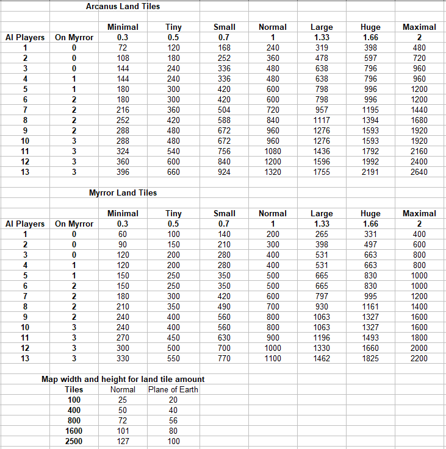
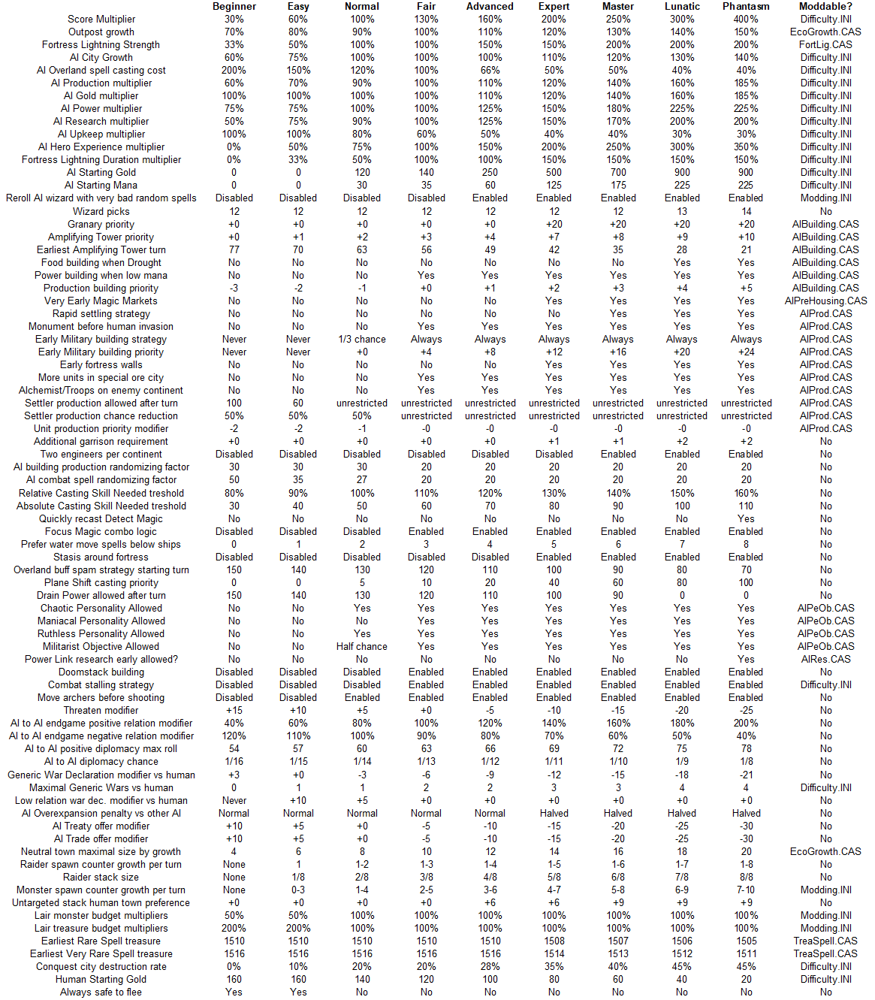

It's important to note that your leader's race now depends on your choice at the beginning of the game and is not affected by the location of your fortress.
Caster of Magic
for Windows
1.5.11
Contents
Philosophy
FAQ
Game Mechanics
- Spellbooks and retorts
Starting options
World Map
Random Events
Economy
Combat
Levels and Experience
User Interface
Retorts
Common units
Buildings
Races, race specifc units
Hero Units
- Hero abilities
Hero types
Item Powers
Spells
Encounter Zones
Diplomacy
AI
Difficulty
Known Bugs
Modding
Changelog
Philosophy
Please see the documentation of Caster of Magic for DOS on design decision details. To keep this manual brief and easy to use, the developer comments are not included in this version.
Frequently Asked Questions
How do I quit? The Quit
button is missing.
Close the game window or press
Alt+F4. If you want to return to the main menu, you can also use the
ÅgLoseÅh button and surrender which will give you a final
score for your game and return you to the main menu where you can
start a new game.
How do I change the
resolution?
Drag
the edge of the windows to change the size and aspect ratio. If you
want to, you can edit Window.ini after the first run to set the
window size and position manually. The native rendering resolution of
the game is 320x200 as all the original art was made for that
resolution, but it can be upscaled to any size and ratio you prefer.
How do I enable
Fullscreen?
Press ALT+ENTER while playing.
By default, Fullscreen will stretch the game to fit your current resolution.
If you want full screen with unused black area around the game to set a different size or aspect ratio, edit your WINDOW.INI file's [Fullscreen] Section.
How
do I play the game?
Please
refer to the Master of Magic manual, or ingame help to learn how to
play the game. You
can right click on any element of the user interface to get a
detailed explanation of what it does and any game rules relevant to
it.
This manual will explain you the new features and differences
compared to Master of Magic.
Enemy units are running away
and not attacking my units on higher difficulty.
It's
a feature. If the enemy is significantly outnumbered and has the
means to stall for time and possibly even retreat safely at the end
of the battle, they'll go for it.
How do I remap hotkeys?
Edit the keys.ini file.
Why
does the AI break the Wizard's Pact all the time, and why is it
entering my territory despite the agreement?
A
Wizard's Pact is an agreement where the human
player guarantees not entering the AI's territory,
and in return the AI will not attack the player, will not declare war
on them without first formally
cancelling the treaty (Chaotic wizards are an exception), and will
not use hostile spells such as city curses against the player. See
the diplomacy chapter for more information.
Game Mechanics
Spellbooks and Retorts
You can have up to 10 spellbooks in each realm and 12 picks total.
Each book contains/allows :
Common/Uncommon/Rare/Very Rare, Common
Starting/ Uncommon Guaranteed/ Uncommon Guaranteed turn 1/ Rare
Guaranteed/Very Rare Guaranteed, other effects
Book 01 :
3/1/0/0, 0/0/0/0/0, Find/Trade common
Book 02 : 3/2/1/0,
1/0/0/0/0, Find/Trade Uncommon
Book 03 : 4/3/2/1, 2/0/0/0/0,
Find/Trade Rare
Book 04 : 5/4/4/3, 3/0/0/0/0, Find/Trade Very
Rare
Book 05 : 6/5/5/4, 4/1/0/0/0,
Book 06 : 7/6/6/5,
5/1/0/1/0,
Book 07 : 10/7/7/6, 5/2/0/1/1,
Book 08 : 10/10/8/6,
5/0/2/2/1,
Book 09 : 10/10/9/7, 5/0/2/2/2, +8% research, -5%
casting cost
Book 10 : 10/10/12/8, 5/0/2/0/3, +16% research, -10%
casting cost, 2 Guaranteed early very rares
Where ÅgGuaranteedÅh means you will be able to research it eventually and ÅgGuaranteed turn 1Åh means it'll be on your starting page of your spellbook at the beginning. Any additional spellbooks you find in treasure will have these exact same contents and effects, although ÅgGuaranteedÅh picks don't apply - those are reserved to the beginning of the game. Your primary realm is the realm you owned the highest number of books of at the beginning of the game. In case of a tie, you can select any of the tied realms.
Guaranteed Early very rares are spells that will shop up as the first two researchable rares at the time a random rare would normally show up.
Your starting casting skill and power income are 10 plus each spellbook in a realm that has at least 4 books picked provides you with +1 starting casting skill, and +1.5 power.
New Starting options
The Dry climate setting adds more deserts and reduces the amount of swamps and rivers. The Wet climate does the opposite : fewer deserts but more swamps and rivers. The Volcanic climate enables Volcanoes to spawn on the map. The Frozen climate enables Tundra to spawn further away from the two poles.
Minerals can be Fair, Rich or Poor. On the Rich setting, some otherwise Myrror exclusive minerals can appear on Arcanus in very small amounts and both the quantity and quality of minerals is higher. On the Poor setting, minerals will be quite rare and usually the less valuable kind.
The Beginner difficulty level is recommended for beginners. The AI receives a resource penalty and intentionally plays worse by a lot.
The Easy difficulty level is recommended for the first few playthroughs, if you already played 4X games before, or Master of Magic in particular. The AI still gets a resource penalty and plays poorly.
On Normal difficulty level the AI gets no resource advantage or penalty but still doesn't play to its full potential.
Fair (hard) is an alternate version of the Normal difficulty, the AI will no longer hold back on most strategies, but still doesn't get resource advantages. This difficulty level is already quite difficult and not recommended in your first few playthroughs.
Advanced gives the AI a small resource advantage while Expert gives a relevant amount.
Master and Lunatic are very hard difficulties where the AI gets a fairly large bonus (however still much less than in MoM 1.31) and might use some strategies that specifically take advantage of this fact. Use these for additional challenge once you found your favorite and most effective strategies.
Phantasm difficulty was added in CoM for Windows as an additional, almost unbeatable challenge. Please use the high difficutly settings with caution.
Land comes in sizes of Minimal,Tiny, Small, Fair, Large, Huge and Maximal. Different amount of land favors different strategies, so be careful with this setting. Choosing one that doesn't suit your strategy might make the game significantly more difficult than it otherwise would be on the same difficulty level. The amount of land generated will be calculated from the setting and the number of wizards on each plane. Games with more opponents will be larger on the same land setting! Additionally, the size of the two planes can (and usually will be) slightly different.
The following table shows the map size generated on various settings assuming the most probable amount of Myrran wizards were rolled, and the human player did not pick the Myrran retort.

Scoring Options is a new section of settings, that modify the game in various ways. Right click each option to read their description within the game. As these options alter some fundamental game rules, activating them will raise or lower your final score depending on how much the option increases ot reduces overall difficulty.
New victory condition
When the total sum of the Army Strength, Power Production, Spell Power and Empire Population on Historian from all AI players remains below the half of the same score of the human player and no AI player knows the Spell of Mastery, the ÅgLoseÅh button to concede the game turns into a ÅgWinÅh button on the Game screen allowing you to force a surrender from the enemies and proceed to the scoring screen. The same also happens if your total sum of the above is at least 2.5 times higher than each individual enemy wizard.
Additionally, while the number of AI players in the game is still high, AI players already far too weak to be relevant to the game has a chance to disappear from the game, turning their cities to neutral.
World Map
Silver
: +4 gold
Gold : +8
gold
Gems : +12
gold
Quork : +5
power
Crysx : +10
power
Iron : 10%
cheaper units
Coal :
20% cheaper units.
Mithril : +1 power, Mithril weapons (+1 attack and defense)
Adamantium : +2 power, Adamantium weapons (+2 attack and defense)
Orihalcon (new) : +3 power, Orihalcon armor (+2 magic ranged attack, +1 resistance)
Swamp : Fixed to correctly produce the 1/2 food.
Desert : 3% production
Hills, Forests : 1/2 food, 3% production.
Mountains : increased to 7% production.
Tundra and Volcano produces nothing. Cities cannot be built on the north and south pole ÅgcontinentsÅh. However, Volcanoes raised by spells count as Mountains for the caster's cities.
Roads and Pathfinding allows moving on any terrain for 1 movement. Enchanted roads no longer exist.
Chain transportation is no longer possible. While you can still board a ship, move, and disembark the same turn, if you board another ship that wasn't used to move the unit, you can't transport the unit any further that turn. Additionally, you can't transport a unit if it already participated in combat that turn either.
Map size can be different between the two planes. Map size depends on the number of players as well as the map size setting. There is an additional option to reduce the sea to land ratio on the map.
Continent size setting has been added. Available options range from islands to large continents. Extremely large continents are not available for AI reasons though.
Random Events
AEther
Flux
: All spells cost 50% less to cast while in effect.
Stroke
of Genius
: The current spell being researched is completed the next turn for
everyone. If Spell of Mastery is being researched, instead it
progresses by 10000 RP only.
Nature
Conjunction
: Fantastic units gain +2 DEF and RES in addition to the original
effect.
Chaos
Conjunction
: Direct damage spells do 33% more damage in addition to the original
effect.
Sorcery
Conjunction :
Casting Skill increases 3 times as fast from mana spent on it in
addition to the original effect.
Bad
Moon :
All units lose 2 resistance in combat in addition to the original
effect.
Good
Moon
: Unit enchantments are 50% cheaper in addition to the original
effect.
All other events are unchanged and self-explanatory.
Atlantis : A new island is generated on the map that contains new lairs.
Monster Invasion : A random monster (of a tier scaled by current turn count) is chosen and each map tile within any player's territory has a chance to spawn a stack of those monsters.
Economy
-Food
production and consumption has been doubled accross the board except
for units which only consume 1 food.
-City maximal population is no longer limited at 25000 population, up to 48000 is possible.
-Catapults and Ships consume no food. Ships also consume no gold to maintain.
-Every 2 units in garrison reduce the unrest of cities by 1, including fantastic units or heroes.
-Each leftover food is converted to 1/2 gold.
-Each 1 production can be bought for 2 gold, regardless of completion percentage.
-Excess production is no longer lost, but carries over to the next turn.
-Maximal tax is 2.5 gold per turn for an unrest of 55%, minimal tax is 1 gold for 1% unrest.
-Heroes in fortresses contribute only 1/6 of their casting skill to you.
-Razing cities is now possible on the city screen instead of after battle. Razing orders cannot be cancelled and will remove 2500 people and 5 buildings per turn from the city until it reaches zero for both. Razing yields more gold than in the previous versions.
-A banished wizard still obtains magic power as normal, but they can't cast overland spells other than Spell of Return and they pay a 4x range penalty on their combat spells. Their city curses have half the normal dispel resistance.
Combat
-Chance
to Hit and to Defend are now measured in 1% increments instead of
10%,
-Ranged penalty is -10% to hit at a distance of 4 tiles and an additional 3% for each additional tile.
-Magical ranged attacks use the appropriate type of ammo, and will not consume MP even if the unit has MP available.
-Fleeing is no longer entirely random, and instead depends on the movement speed difference between the involved armies.
If unit speed < Fastest Enemy speed
-1 : Unit has a 100% chance to die.
If unit speed = Fastest Enemy
speed -1 : Unit has a 50% chance to die.
If unit speed = Fastest
Enemy speed : Unit has a 50% chance to die.
If unit speed >
Fastest Enemy speed : Unit has a 1/(2+X) chance to die where X is the
difference between the speed values.
In short, faster
units survive more. This mechanic uses the overland base movement
speed of the units, and doesn't include combat buffs that alter
speed. However units unable to move (such as those affected by Web)
will be guaranteed to die.
-Fleeing is 100% safe when certain conditions that guarantee the fleeing army can't be damaged are satisfied, for example when all of the fleeing army units can fly and the enemy army has no way to damage a flying unit. When this happens, the Flee button becomes green. For more details, right click the Flee button.
-Range penalties on mana costs for combat spells now depends on the map size as well as distance.
-There is a new advisor : Geomancer, which shows the range penalty on the map, the location of node auras, the owner of volcanoes, and the amount of base power produced by nodes.
-Banished wizards can now use combat spells, but they pay a steep, 4x range penalty.
-Each wizard's fortress is capable of casting a lighting bolt spell on a random enemy automatically each combat turn, that grows in strength and duration proportionally to the wizard's casting skill.
The strength of this lighting bolt is (18+Skill/8)/2 but no more than 60. Fortress Lightning strength is scaled by AI difficulty before the cap of 60 is applied for AI players, so they will reach the cap earlier on higher difficulty levels. Fortress Lightning applies for the first 3+(Skill/20) combat turns, also scaled by difficulty for AI players.
-New units gained during combat will appear even if you have a full army, and will be pushed to the nearest adjacent free tile, assuming there are any. This makes effects that raise undead a lot more playable.
-AI wizards who have Death spellbooks or units with Life Steal or Create Undead ability in AI vs AI combat, will raise dead enemy units as undead depending on the strength of casting power, book count and strength of units with those abilities so grant access to this game mechanic which is otherwise not simulated in the simplified combat AI players use.
-It is allowed to cast summoning spells in battle even if it causes the number of units to exceed 9 on your side.
-Automatic combat (used between AI players, or if the appropriate game option is enabled) now considers the effect of more stats and abilities than previous versions. Flight, Missile Immunity, Movement speed, Resistance, etc now affect the outcome.
-Automatic combat now also considers which spells the wizard is able to cast, and the simulated effects of spells is more similar to the expected outcome in normal combat. In previous versions, only casting skill and the number of spellbooks affected the outcome.
-Automatic combat results are now stable and don't involve a random factor.
-Unit curses have triple their casting costs as dispel resistance unlike other unit enchantments.
-You can hold the SHIFT key to force a melee attack in case both melee and ranged is available. The default is always using a ranged attack, even if the target is not expected to take damage from it, to increase suppression effect while avoiding retaliation.
Levels and Experience
For
normal units :
Regular : + 1 melee, +1 ranged, +1 resist
total.
Veteran : + 2 melee, +2 ranged, +1 Thrown/Breath, +1
defense, +1 resist total.
Elite : + 2 melee, +2 ranged, +2
defense, +2 resist, +1 health total.
Ultra Elite : + 3 melee, +3
ranged, +3 defense, +2 resist, +1 health total.
Champion : + 3
melee, +3 ranged, +3 defense, +2 resist, +2 health, +10% to hit
total.
For heroes :
+1 melee attack for each level.
+1
magical ranged attack for each 2 levels or +1 missile ranged attack
for each level
+1 health for each level.
+1 resistance for each
2 levels.
+1 defense at level 4 and 8.
+10% to hit at level 5
and 9.
Exp tables :
Level 2 : 30
Level 3 : 80
Level
4 : 180
Level 5 : 300
Level 6 : 550
Level 7 : 900
Level
8 : 1400
Level 9 : 2000
Unit abilities
Many of the existing unit abilities received minor tweaking in the relevant numbers or effect, and new abilities have been added. I recommend right clicking the abilities and reading the effects, even if you already know the ability from previous versions.
User Interface
The Grand Vizier will never produce new units and will not change your production in cities that are currently producing units. He'll let you fully retain control of your military production. He'll ask when activated if he is allowed to produce military buildings. Answering no restricts him to only produce ecnomy buildings. The Vizier will select buildings as though it was an AI player with the Pragmatist personality.
Transportation (ships) now require units to be selected for movement to be transported, and selecting units that can't move is now allowed for that purpose. This ensures the implicit transportation won't force the player into moving units that were meant to stay behind. If the movement would result in leaving a unit that would drown without a transport on an ocean tile, the movement fails and nothing happens. If the movement would transport a unit that isn't valid to be transported that turn (due to having been already transported or paticipating in combat), the movement also fails.
On the cities screen, cities can be sorted. Garrisons of cities will also be shown.
Hotkeys can be remapped in the keys.ini file.
You can see where a city is located on the world map during combat.
Fully functional production queue system. Unlike the DOS version, units can also be queued, and the queue is visible, can be modified, and elements can be added to the beginning or end as preferred.
Historian now also shows graphs of the army, population, magic power, etc stats of each player. The other advisor is replaced by one that displays the history of wizard relations. You can also see the relation between other players.
Names in partenthesis in either screen indicate a wizard whose cities are located too far from your empire. These wizards will be unable to declare war on you under most circumstances, see the Diplomacy section.
When targeting an overland city spell or a unit buff, the Z and X keys can be used to cycle through possible targets.
Hold Shift during combat to force using a melee attack instead of ranged.
Press Shift to toggle the selection state of all units in the stack on the overland map.
Right clicking an item in the production queue will mark the item as ÅgautobuyÅh. When its turn comes up while processing the queue, if gold is available, the item will be bought.
Pressing Space will center the selected unit. If no units are selected, it centers your fortress city.
The Shift button can toggle the unit selection status of all units in the current stack.
Ctrl-1 to 9 can be used to save a map location, and 1-9 can reset the view to that location.
Retorts
Alchemy (1)
All
normal units gain magical weapons and the associated +10% To Hit
bonus, even if produced in cities without an Alchemist Guild.
However, Barbarian cities are excluded, as they naturally have the +1
bonus. The wizard can convert gold to mana at a 1/1 ratio.
Warlord (2)
All
normal units gain an additional level and can reach Ultra Elite.
Mutually exclusive with Tactician.
Channeller (2)
The
wizard has no range penalty in combat, and pays halved spell
maintenance. The wizard's spellbooks have an increased chance to
contain combat exclusive spells than normal. Banished wizards with
this retort only pay a 2x range penalty for combat spells.
Archmage (1)
Gain
50% more SP, including the amount generated at the start of the game
to set your initial casting skill. Mutually exclusive with
Spellweaver.
Artificer(1)
Magical
items cost 50% less to create and all other Arcane realm spells cost
25% less. You start the game
with the Enchant Item spell. The first rare spell that will show up
in your spellbook will be Create Artifact.
Conjurer(1)
Summoning
spells cost 25% less to cast and research, and summoned creatures
cost 25% less to maintain.
Sage Master(1)
Gain
25% more research from all sources and an extra 15 RP each turn.
Myrran(1)
You start on the Myrror plane.
Guardian(2)
The player's city garrisons receive a +1 Resistance, +10% To Hit and +10% To Defend bonus during combat. Cities of the same race as the one the wizard started the game with have a +6 maximal population.
Famous(1)
Start the game with 30 Fame. If enough gold is available, a hero is guaranteed to appear for hire in January, an item merchant appears in July and mercenaries always show up in April and October starting in 1502.
Heroes and mercenaries offering to join will be at a higher level than usual, but do not cost additional gold to hire based on their level.
Runemaster(2)
Your dispelling type spells are 100% more effective. You research in the Arcane realm 100% faster. Your spells are 150% harder to dispel. You have an increased chance for your starting spellbooks to contain global enchantments.
Charismatic(1)
Your diplomacy penalties are halved and your bonuses are doubled. Your treaty offers will be accepted more often. You pay half the normal gold cost for heroes, mercenaries, and items.
Specialist(1)
You research spells in your primary realms 12% faster, and those spells cost 12% less to cast as well as being 50% harder to dispel.
Tactician(1)
All of your units gain +1 defense during combat. Heroes gain 2 defense, 2 resistance, and attack power instead. Mutually exclusive with Warlord.
Omniscient(1)
Each of the wizard's cities gains a bonus depending on the spellbooks owned by the wizard. Life, Sorcery, Chaos and Death books provide a +16% bonus for the first book in the realm and another 3.5% beyond that for Gold, Research, Power and Production respectively. Nature books raise maximal population by 2 for the first book and another 1/4 for each additonal book.
Cult Leader(1)
All power generated by religious buildings is increased by 75%. Unrest reduction effect of those buildings is increased by 50%.
Astrologer(1)
Nodes can't counter your spells. Nodes produce an additional 1 power for each 6 game turns elapsed since the beginning of the game.
Spellweaver(2)
All of your overland spells cost 33% less except summoning and item creation. Mutually exclusive with Archmage.
Common Units
-Spearmen (10) : 2 attack, 1 defense, 1 health, 2 movement, 6 figures, 3 resistance.
-Swordsmen (25) : 3 attack, 3 defense, 1 health, 2 movement, 6 figures, 4 resistance. Large Shield.
-Halberdiers (60) : 5 attack, 4 defense, 2 health, 2 movement, 6 figures, 5 resistance. Negate First Strike.
-Bowmen (30) : 1 attack, 3 Ranged (8 ammo), 1 defense, 1 health, 2 movement, 6 figures, 4 resistance.
-Cavalry (40) : 5 attack, 2 defense, 3 health, 5 movement. 4 figures, 4 resistance, First Strike.
-Shamans (50) : 2 attack, 3 ranged (4 ammo), 3 defense, 1 health, 2 movement. 4 Figures, 6 Resistance. Healer, Purify, Healing Spell
-Magicians (120) : 1 attack, 7 ranged (4 ammo), 3 defense, 1 health, 3 movement. 4 figures, 8 resistance. Missile Immunity, Caster 20.
-Catapults (62) : 0 attack, 9 ranged (10 ammo), +20% To Hit, 2 defense, 10 health, 1 movement. 1 figure, 3 resistance. Long Range, Wall Crusher.
-Settlers (150) : 10 Health, 1 Defense, 5 Resistance, 1 Movement.
-Trireme(60) : 12 attack, 4 Defense, 6 Resistance, 15 Health, 3 Movement.
-Galley(100) : 14 attack, 10 Ranged (8 ammo), 4 Defense, 7 Resistance, 20 Health, 3 Movement, Scouting 2.
-Warship(140) : 16 attack, 14 Ranged (10 ammo), 5 Defense, 7 Resistance, 25 Health, 4 Movement, Long Range, Scouting 2.
Outpost Growth
Growth per turn = (Max Pop+10)*2*((100+RaceModifier)/100)
Chance to shrink = (12-Max Pop) %
Amount of shrinking each time : -240.
Starting size : 300
Completed size : 1000
Stream of Life : double the growth rate
Gaea's Blessing : +40
Iron, Coal : +12
Gems, Gold, Silver, Mithril, Admantium, Crysx, Quork : +5
Chaos Rift : Chance to shrink +12%
Evil Presence : Chance to shrink +7%
Famine : Chance to shrink +15%
Pestilence : Chance to shrink +25%
Buildings
Smithy
Cost :125
Effect: +2 Production.
Required by : Fighter's Guild, Colosseum, Stables
Special : All new outposts start with a Smithy already built.
Housing
Effect: Increase population growth while being produced.
Growth = Max[+170*(Terrain Maximal Population + Racial Growth Modifier - 8)/13 *Max(1.3-0.1*Current Population,0), +40]*(Nonrebel Non[optionalfarmer] population/Current Population)
Trade Goods
Effect: For each 2 production, gain 1 gold.
Sawmill
Cost :68, 4 gold/turn
Effect: +6 Production.
Required by : Forester's Guild, Bowmen
Marketplace
Cost :80
Effect: +8 Gold.
Required by : Bank, Farmer's Market
Magic Market
Cost :72, 2 gold
Effect: +6 power.
Required by : Wizard's Guild
Library
Cost :60, 1 gold
Effect: +6 research.
Required by : Sage's Guild, Alchemist Guild, Linking Tower.
Builder's Hall
Cost :20
Effect: None
Required by : Bank, Merchant's Guild, Oracle, Parthenon, University, Engineers
Miner's Guild
Cost :120, 2 gold
Effect: +25% production, minerals have 50% more effect
Required by : Mechanician's Guild
Mechanician's Guild
Cost :200, 3 gold
Effect: +35% production
Required by : Catapults
Forester's Guild
Cost :130, 1 gold
Effect: +10% production, +6 Food
Required by : Animist's Guild
This building requires a Forest tile to build.
Granary
Cost :80, 2 gold
Effect: +5 Maximal population, +4 Food
Required by : Farmer's Market.
Farmer's Market
Cost :180, 3 gold
Effect: +50 population growth, +6 Food
Alchemist's Guild
Cost :100, 3 gold
Effect: All units newly produced in the city gain Magical Weapons, or if available, allows using Mithril, Adamantium, Orihalcon and Nightshade.
Required by : Amplifying Tower
Amplifying Tower
Cost :600, 12 gold
Effect: Your overland casting skill is raised by 7 as long as this building is under your control.
Wizard's Guild
Cost :600, 5 gold
Effect: +10 Power, +3 Research.
Required by : Magicians.
Monument
Cost:72, 1 gold
Required by : Linking Tower
Effect : Your combat skill is increased as though you had an additional 180 SP.
Linking Tower
Cost:400, 5 gold
Special : Tree of Knowledge must be cast.
Effect : Your combat skill is increased as though you had an additional 1200 SP.
Sage's Guild
Cost :300, 4 gold
Effect: +12 Research.
University
Cost :120, 3 gold
Effect: +6 Research.
Required by : Mechanician's Guild
Shrine
Cost :120, 1 gold
Effect: +2 Religious Power, -1 Unrest
Required by : Cathedral, Oracle, Shaman
Cathedral
Cost :400, 2 gold
Effect: +6 Religious Power, -1 Unrest. Additional +3 Religous Power and -1 Unrest for each Nightshade.
Parthenon
Cost :200, 2 gold
Effect: +4 Religious Power, -1 Unrest
Oracle
Cost :300, 3 gold
Effect: -3 Unrest, extends scouting radius
Bank
Cost :200, 2 gold
Effect: +30% gold production
Merchant's Guild
Cost :400, 3 gold
Effect: +40% gold production
Animist's Guild
Cost :240, 3 gold
Effect: +1 food production from farmers.
Colosseum
Cost :250
Effect: +5 Fame, -1 Unrest
Stables
Cost :60, 2 gold
Effect: +2 production
Required by : Cavalry, Fantastic Stables
Ship Yard
Cost :50, 1 gold
Effect: None
Required by : Maritime Guild, Merchant's Guild, Trireme, Galley
Fighter's Guild
Cost :330, 4 gold
Effect: None
Required by : Armorer's Guild, Fantastic Stables, Maritime Guild, Galley, Halberdiers
Maritime Guild
Cost :370, 5 gold
Effect: None
Required by : Warship
Armorer's Guild
Cost :400, 6 gold
Effect: None
Required by : Special units
Special : Tree of Knowledge must be cast.
Fantastic Stables
Cost :500, 5 gold
Effect: None
Required by : Special units
Special : Tree of Knowledge must be cast.
Barracks
Cost :125
Effect: All units begin with 30 EXP (+1 level)
Required by : War College, Colosseum
War College
Cost :450, 2 gold
Effect: All units begin with 80 EXP (+2 level)
City Walls
Cost :75, 1 gold
Effect: Scouting range increases to 3, units behind the walls in combat gain +3 defense against attacks coming from the outside, or +1 if the wall section is destoryed.
The religion tree
Shrine Å® Cathedral
Shrine+Builder's Hall Å® Oracle
The magic tree
Library Å® Sage's Guild, Linking Tower and Alchemist's Guild
Alchemist's Guild Å® Amplifying Tower
Magic Market Å® Wizard's Guild
Monument -> Linking Tower
The military tree
Smithy Å® Stables, Fighter's Guild, Colosseum
Fighter's Guild Å® Armorer's Guild
Barracks ŮWar College, Colosseum
Stables Å® Fantastic Stables
Ship Yard and Fighter's Guild Å® Maritime Guild
The food tree
Granary and Marketplace Å® Farmer's Market
Forester's Guild and Granary Å® Animist's Guild
The production tree
Sawmill Å® Forester's Guild
Miner's Guild+University Å® Mechanician's Guild
The advanced tree
Builder's Hall Å® University, Parthenon, Bank, Merchant's Guild, Oracle
The economy tree
Marketplace + Builder's Hall Å® Bank
Ship Yard+ Builder's Hall Å® Merchant's guild
Races
Arcanus
Barbarians
+90 Growth
+30 Outpost growthBuilder's Hall
Cathedral
Miner's Guild
Library
Fantastic Stables
Armorer's Guild
Spearmen, Swordsmen, Bowmen, Cavalry, Shaman, Trireme,
Galley, Warship
-1 Resistance, + 10% To Hit, Pathfinding, Thrown
1
Settler costs 33% less.
Berserkers (100, Fighter's Guild) : 7 Melee, 3 Thrown, +10% To Hit, 3 Defense, 3 Resistance, 3 Movement, 6 Figures, 3 Health. Pathfinding.
Spellzerkers (120, Wizard's Guild) : 3 Melee, 5 Thrown, +10% To Hit, 4 Defense, 6 Resistance, 3 movement, 4 Figures, 4 Health, Caster 20, Pathfinding, Missile Immunity.
Gladiators (120, Colosseum) : 5 Melee, 4 Thrown, +20% To Hit, 6 Defense, 5 Resistance, 3 movement, 3 Figures, 6 health, Large Shield, Pathfinding.
Gnolls
+60 GrowthBuilder's Hall
Magic Market
Fantastic Stables
Maritime Guild
Spearmen, Swordsmen, Halberdier,
Trireme, Galley
+2 Melee attack, + 1 Movement
Wolf Riders (80, Stables) : 7 Melee, 3 Defense, 5 Resistance, 5 Movement, 4 Figures, 5 Health. Pathfinding, Scouting 3.
Jackal Riders (150, Armorer's Guild) : 6 Melee, 3 Defense, 5 Resistance, 4 Movement, 8 Figures, 3 Health. Cloak of Fear.
Halflings
+60 Growth
+40 Outpost growth
+1 Research per population.
+2 Food per Farmer.
Military units are more expensive.Barracks
Armorer's Guild
Fantastic Stables
Maritime Guild
Animist's Guild
Spearmen, Swordsmen, Magicians,
Shaman, Catapult, Trireme, Galley
-1 Melee attack, Lucky.
Spearmen and Swordsmen have +2 figures.
Slingers (100, Fighter's Guild) : 1 Melee, 4 Ranged, 6 Ammo, 1 Defense, 4 Resistance, 2 Movement, 8 Figures, 1 Health. Lucky.
High Elves
+30 Growth
+20 Outpost growth
+1/2 Power per population.
Colosseum
Maritime Guild
Spearmen, Swordsmen, Magicians,
Halberdiers, Cavalry, Catapult, Trireme, Galley
+10% to Hit, +1
Resistance, Forester
Longbowmen (50, Forester's Guild) : 1 Melee, 3 Ranged, 8 Ammo, +10% To Hit, 2 Defense, 5 Resistance, 2 Movement, 6 Figures, 1 Health. Forester, Long Range.
Elven Lords (160, Armorer's Guild) : 5 Melee, +20% To Hit, 6 Defense, 10 Resistance, 4 Movement, 4 Figures, 4 Health. Forester, First Strike, Armor Piercing, Poison Immunity.
Pegasai (120, Fantastic Stables) : 4 Melee, 3 Ranged, 8 Ammo, +10% To Hit, 4 Defense, 8 Resistance, 5 Movement, 4 Figures, 4 Health. Flying, Scouting 3.
High Men
+60 Growth
+10 Outpost growth
-15% building costs.
+1 Unrest on High Men cities
Fantastic Stables
Spearmen, Swordsmen, Bowmen,
Magicians, Cavalry, Catapult, Trireme, Galley, Warship, Engineers
-2
Resistance.
+2 Figures on Magicians
Pikemen (75, Fighter's Guild) : 4 Melee, 4 Defense, 4 Resistance, 2 Movement, 8 Figures, 2 Health. Negate First Strike, Armor Piercing.
Crusaders (60, Shrine, Fighter's Guild) : 5 Melee, 4 Defense, 6 Resistance, 2 Movement, 8 Figures, 2 Health. Large Shield, Healing Spell.
Knights (60, Stables, Fighter's Guild) : 6 Melee, 5 Defense, 5 Resistance, 5 Movement, 4 Figures, 3 Health. First Strike.
Paladins (240, Cathedral, Armorer's Guild) : 6 Melee, 5 Defense, 8 Resistance, 4 Movement, 4 Figures, 5 Health. First Strike, Armor Piercing, Holy Bonus 1, Death Immunity, Illusion Immunity.
Priests (100, Parthenon) : 3 Melee, 5 Magical Ranged, 4 Ammo, 4 Defense, 6 Resistance, 2 Movement, 4 Figures, 2 Health. Healer, Healing Spell, Purify, Resistance to All +1.
Klackon
+110 Growth
+20 Outpost growth
+1 Production/ worker
-4 Unrest on Klackon cities
Shrine
Mechanician's Guild
War College
Fantastic Stables
Maritime Guild
Bank
Merchant's Guild
Spearmen, Swordsmen, Halberdier,
Trireme, Galley, Engineers
+2 Defense.
Stag Beetle (160, Armorer's Guild, Stables) : 15 Melee, 5 Fire Breath, 7 Defense, 7 Resistance, 4 Movement, 1 Figures, 20 Health.
Lizardmen
+70 Growth
+30 Outpost growth
Settler cost -20%, Settler movement +1.
-1 Unrest in Lizardmen cities.
Builder's Hall
Miner's Guild
War College
Ship Wringhts Guild
Fantastic Stables
Spearmen, Swordsmen,
Halberdier
+1 Health, -1 Magic resistance, Water movement.
Carrak (80, Forester's Guild, sea access) : 14 Melee, 8 Ranged (6 ammo), 4 Defense, 6 Resistance, 4 Movement, 1 Figures, 15 Health. Ship.
Dragon Turtle (100, Armorer's Guild) : 10 Melee, 5 Lightning Breath, 9 Defense, 12 Resistance, 2 Movement, 1 Figures, 20 Health, Fire Immunity.
Javelineers (75, Fighter's Guild) : 5 Melee,4 Ranged, 6 Ammo, 3 Defense, 5 Resistance, 2 Movement, 6 Figures, 2 Health.
Nomad
+80 Growth
Settler cost -33%
Gain up to 50% road bonus as though you had roads even if you do not.
Granary
Colosseum
Maritime Guild
Spearmen, Swordsmen, Catapult,
Magician, Trireme, Galley, Warship
+3 Magic resistance
Spearmen and Swordsmen have a weak bow attack with 4 ammo.
Horsebowmen (50, Stables) : 4 Melee, 4 Ranged, 4 Ammo, 2 Defense, 7 Resistance, 4 Movement, 4 Figures, 3 Health, First Strike.
Priests (100, Parthenon) : 3 Melee, 5 Magical Ranged, 4 Ammo, 4 Defense, 11 Resistance, 2 Movement, 4 Figures, 2 Health, Healer, Purify, Healing Spell.
Pikemen (75, Fighter's Guild) : 4 Melee, 4 Defense, 8 Resistance, 2 Movement, 6 Figures, 2 Health. Armor Piercing, Negate First Strike.
Rangers (150, Armorer's Guild) : 6 Melee, 7 Ranged (6 ammo), 3 Defense, 8 Resistance, 3 Movement, 4 Figures, 3 Health. Long Range, Pathfinding, Poison Immunity, Scouting 3
Griffins (180, Fantastic Stables) : 9 Melee, 5 Defense, 8 Resistance, 4 Movement, 2 Figures, 10 Health. First Strike, Armor Piercing, Flying
Orc
+90 Growth
-10 Outpost Growh
-1 gold unit maintenance
Spearmen, Swordsmen, Bowmen,
Halberdiers, Shaman, Cavalry, Catapult, Magician, Trireme, Galley,
Warship, Engineers
Horde (75, Armorer's Guild) : 6 Melee, 5 Defense, 5 Resistance, 2 Movement, 8 Figures, 2 Health, Negate First Strike, Large Shield.
Wyvern Rider (150, Fantastic Stables) : 7 Melee, 5 Defense, 7 Resistance, 5 Movement, 2 Figures, 10 Health, Poison 5, Flying.
Myrror
Beastmen
+70 Growth
-5 Outpost Growth
Maritime Guild
Spearmen, Swordsmen, Halberdiers,
Bowmen, Catapult, Magician, Trireme, Galley, Engineers
+1 Health,
+1 Melee Attack.
Priests (100, Parthenon) : 4 Melee, 5 Magical Ranged, 4 Ammo, 4 Defense, 8 Resistance, 2 Movement, 4 Figures, 3 Health, Healer, Purify, Healing Spell.
Centaurs (90, Stables, Fighter's Guild) : 5 Melee, 5 Ranged (6 ammo), 3 Defense, 5 Resistance, 4 Movement, 4 Figures, 4 Health.
Manticores (160, Fantastic Stables) : 7 Melee, +10% To Hit, 1 Ranged (2 ammo), 3 Defense, 8 Resistance, 3 Movement, 3 Figures, 6 Health. Poison 4, Weapon Immunity, Flying, Scouting 3.
Minotaurs (200, Armorer's Guild) : 12 Melee, +20% To Hit, 5 Defense, 7 Resistance, 3 Movement, 2 Figures, 12 Health. Large Shield.
Dwarf
+20 Growth
Engineers have double road building speed.
Mineral bonuses are doubled.
+1 Production/ worker
Base gold amount obtained from taxes is 50% higher.
Settlers cost 33% more.
Magic Market
Stables
Colosseum
Sage's Guild
Amplifying Tower
Merchant's Guild
Banks
Swordsmen, Halberdiers, Trireme,
Galley, Warship, Engineers, Catapults
+1 Health, +2 Resistance,
Mountaineer
Hammerhands (140, Armorer's Guild) : 8 Melee, 4 Defense, 10 Resistance, 2 Movement, 6 Figures, 4 Health, Mountaineer.
Steam Cannon (100, University) : 0 Melee, 15 Ranged, 10 Ammo, 5 Defense, 9 Resistance, 1 Movement, 1 Figures, 12 Health. Long Range, Poison Immunity, Mountaineer, Wall Crusher.
Golem (180, Mechanician's Guild, Fighter's Guild) : 14 Melee, 7 Defense, 15 Resistance, 3 Movement, 1 Figures, 20 Health. Resist Elements, Poison, Death, Stoning, Fire, Cold Immunity, Wall Crusher
Dark Elf
+40 Growth
+1 Power per population
Basic units have a weak magic ranged attack.
Maritime Guild
Spearmen, Swordsmen, Halberdiers,
Cavalry, Trireme, Galley, Catapults
+2 Resistance
Priests (120, Parthenon) : 3 Melee, 7 Magical Ranged (4 ammo), 4 Defense, 10 Resistance, 2 Movement, 4 Figures, 2 Health, Healing Spell, Healer, Purify
Apprentice (40, Library, Smithy) : 2 Melee, 3 Magical Ranged (4 ammo), 2 Defense, 6 Resistance, 2 Movement, 6 Figures, 1 Health, Large Shield, Caster 14, Scouting 2.
Nightblades (150, Armorer's Guild) : 5 Melee, 4 Defense, 7 Resistance, 2 Movement, 6 Figures, 3 Health, Invisibility, Poison 2, Scouting 2
Warlocks (160, Wizard's Guild) : 1 Melee, 9 Magical Ranged (4 ammo), 4 Defense, 9 Resistance, 3 Movement, 4 Figures, 1 Health, Doombolt Spell, Missile Immunity, Scouting 2
Nightmares (200, Fantastic Stables) : 8 Melee, 8 Magical Ranged (4 ammo), 4 Defense, 12 Resistance, 4 Movement, 2 Figures, 8 Health, Flying, Scouting 2
Draconian
+60 Growth
+0.5 Power per population
Bowmen have less ammo and cost more. Halberdiers don't negate first strike.
Fantastic Stables
Mechanician's Guild
Spearmen, Swordsmen, Halberdiers,
Trireme, Galley, Warship, Catapults, Magicians, Bowmen
+1 Armor,
Flying, Fire Breath.
Saints (100, Shrine, Parthenon) : 2 Melee, 4 Magical Ranged (4 ammo), 5 Defense, 7 Resistance, 2 Movement, 5 Figures, 2 Health, Healing Spell, Healer, Purify, Scouting 2
Doom Drakes (210, Stables, Armorer's Guild) : 10 Melee, 7 Fire Breath, 5 Defense, 7 Resistance, 5 Movement, 2 Figures, 10 Health, Cloak of Fear
Air Ship (200, Maritime Guild) : 5 Melee, 15 Ranged (10 ammo), 5 Defense, 8 Resistance, 4 Movement, 1 Figures, 20 Health, Wind Walking, Wall Crusher, Scouting 2.
Troll
+60 Growth
-20 Outpost Growth
Builder's Hall
Sage's Guild
Fantastic Stables
Spearmen, Swordsmen, Halberdiers,
Trireme, Galley, Warship, Magicians, Shaman
+2 Melee,
Regeneration 1, -2 Figures, very high HP per figure.
War Trolls (150, Armorer's Guild) : 8 Melee, 4 Defense, 6 Resistance, 3 Movement, 4 Figures, 8 Health. Regeneration 1.
War Mammoths (180, Armorer's Guild, Stables) : 12 Melee, 6 Defense, 8 Resistance, 2 Movement, 3 Figures, 12 Health. First Strike, Cold Immunity, Wall Crusher.
Interracial Unrest Table
It's
important to note that your leader's race now depends on your choice
at the beginning of the game and is not affected by the location of
your fortress.
Heroes
Hero Abilities
New
Ritual Master
Type : Mage
Super :
Available
Effect : Hero produces +6 Power per turn per level of
experience.
AEther Master
Type : Mage
Super :
Available
Effect : Hero produces +8 SP per turn per level of
experience.
Capacity
Type : Any (must have ranged
attack)
Super : Available
Effect : Hero gains +1 ammo per 2
levels of experience
Divine Barrier
Type : Mage
Leader
Super : Available
Effect : All units in combat gain +1
DEF per 3 experience levels
Guiding Beacon
Type :
Mage Leader
Super : -
Effect : All units in combat gain +1
ranged ATK per 3 experience levels (both missile and magical)
Soul
Linker
Type : Mage Leader
Super : Available
Effect : All
fantastic creatures in combat gain +2.5% to HIT and to DEF per level
of experience.
Supply Commander
Type : Leader
Super
: -
Effect : All units in combat gain +2 ammo.
Power Shot
Type : Any (must have nonmagical
ranged attack)
Super : Available
Effect : Gain +1 (non-magical)
Ranged ATK per experience level
Logistics
Type :
Warrior Leader
Super : -
Effect : All units in combat gain +0.5
movement per 2 levels of experience.
Battlemage
Type
: Warrior Mage
Super : Available
Effect : All melee attacks
done by the hero refill 1 used MP per experience level.
Old
Agility
Type : Warrior
Super :
Available
Effect : Gain +1 DEF per experience level
Arcane
Power
Type : Mage
Super : Available
Effect : Gain +1
(magical) Ranged ATK per experience level
Armsmaster
Type
: Leader
Super : Available
Effect : Nonhero units on the same
map tile gain +2 exp per level per turn, hero units gain +2 exp
regardless of level.
Blademaster
Type :
Warrior
Super : Available
Effect : Gain +3.33% to HIT per level
of experience.
Charmed
Type : Any
Super :
-
Effect : Hero has 50 resistance against all magical
effects.
Constitution
Type : Warrior
Super :
Available
Effect : Hero gains +1 Health per
level.
Leadership
Type : Warrior + Leader
Super :
Available
Effect : All units in combat gain +1 melee and +0.5
missile ranged ATK per 3 experience levels.
Legendary
Type
: Any
Super : Available
Effect : Hero adds +5 FAME per
experience level.
Lucky
Type : Any
Super :
-
Effect : Hero has +10% to HIT and +10% to DEFEND chance and +1
resistance.
Might
Type : Warrior
Super :
Available
Effect : Hero gains +1 melee ATK per experience
level
Noble
Type : Any
Super : -
Effect : Hero
produces 20 gold per turn and has no maintenance
cost.
Prayermaster
Type : Mage Leader
Super :
Available
Effect : All units in combat gain +1 resistance per 2
experience levels.
Sage
Type : Mage
Super :
Available
Effect : Hero produces +10 RP per turn
per level of experience.
Extra MP
Type : Caster heroes only
Available only as a random ability roll, the hero gets an additional 2 MP per level. This can be rolled any number of times and is cumulative.
Hero Types
Dwarf
Type : Warrior
Fame : 0
Caster
Level : -
Spells : -
Hero abilities : Armsmaster,
Constitution
Other Abilities : Mountaineer, above average starting
Resistance.
Random abilities : -
Barbarian
Type :
Warrior
Fame : 0
Caster Level : -
Spells : -
Hero
abilities : Might
Other Abilities : Thrown, Cold Immunity
Random
abilities : -
Sage
Type : Mage
Fame : 0
Caster
Level : 19 MP + 7 MP per level
Spells : Dispelling Wave, Phantom
Warriors, Psionic Blast
Hero abilities : Sage
Other Abilities :
Sorcery ranged attack.
Random abilities : -
Dervish
Type
: Warrior
Fame : 0
Caster Level : -
Spells : -
Hero
abilities : Noble, Logistics
Other Abilities : Archer
Random
abilities : -
Beastmaster
Type : Mage Leader
Fame
: 0
Caster Level : 14 MP + 4 MP per level
Spells : Resist
Elements, Wild Boars
Hero abilities : Soul Linker
Other
Abilities : Forester, extra scouting, archer
Random abilities :
1
Bard
Type : Warrior Leader
Fame : 0
Caster
Level : 16 MP + 3 MP per level
Spells : Confusion, Vertigo
Hero
abilities : Leadership
Other Abilities : Holy Bonus +1
Random
abilities : -
Orc Archer
Type : Warrior Leader
Fame
: 0
Caster Level : -
Spells : -
Hero abilities : Supply
Commander
Other Abilities : Archer
Random abilities :
1
Healer
Type : Mage Leader
Fame : 0
Caster
Level : 20 MP + 5 MP per level
Spells : Healing
Hero abilities
: -
Other Abilities : Healer, Nature ranged attack
Random
abilities : 1
Huntress
Type : Warrior Leader
Fame
: 10
Caster Level : -
Spells : -
Hero abilities :
Blademaster*
Other Abilities : Pathfinding
Random abilities :
1
Thief
Type : Warrior
Fame : 10
Caster Level
: -
Spells : -
Hero abilities : Agility
Other Abilities :
Charmed, Lucky, Stealth
Random abilities : -
Druid
Type
: Mage
Fame : 0
Caster Level : 15 MP + 5 MP per level
Spells
: Petrify, Web, Ice Bolt, Construct Catapult
Hero abilities :
Ritual Master
Other Abilities : Purify, Scouting, Nature ranged
attack
Random abilities : -
War Monk
Type :
Warrior
Fame : 10
Caster Level : -
Spells : -
Hero
abilities : Agility*
Other Abilities : -
Random abilities :
2
Warrior Mage
Type : Warrior Mage
Fame :
10
Caster Level : 19 MP + 6 MP per level
Spells : Web, Flight,
Fire Elemental, Black Sleep
Hero abilities : Agility
Other
Abilities : Chaos ranged attack
Random abilities :
1
Magician
Type : Mage
Fame : 40
Caster Level
: 36 MP + 6 MP per level
Spells : Flame Strike, Fireball, Fire
Elemental, Fire Bolt
Hero abilities : Arcane Power
Other
Abilities :Missile Immunity, Destruction
Random abilities :
2
Assassin
Type : Warrior
Fame : 10
Caster
Level : -
Spells : -
Hero abilities : Blademaster*
Other
Abilities : Poison 9, First Strike, Stealth
Random abilities :
1
Wind Mage
Type : Mage Leader
Fame : 20
Caster
Level : 19 MP + 5 MP per level
Spells : Resist Magic, Guardian
Wind
Hero abilities : Guiding Beacon
Other Abilities : Wind
Walking, Sorcery ranged attack, Missile Immunity
Random abilities
: 1
Ranger
Type : Any
Fame : 20
Caster Level :
25 MP + 5 MP per level
Spells : Resist Elements, Fairy Dust
Hero
abilities : Lucky
Other Abilities : Poison Immunity, Pathfinding,
Archer
Random abilities : 2
Draconian
Type :
Warrior
Fame : 20
Caster Level : -
Spells : -
Hero
abilities : Might
Other Abilities : Flight, Fire breathing
Random
abilities : 2
Witch
Type : Mage
Fame : 20
Caster
Level : 25 MP + 5 MP per level
Spells : Black Prayer, Darkness,
Mana Leak, Posession
Hero abilities : Charmed
Other Abilities :
Missile Immunity, Chaos ranged attack
Random abilities : 2
Golden
One
Type : Any
Fame : 20
Caster Level : 20 MP + 5 MP per
level
Spells : -
Hero abilities : Noble
Other Abilities :
Chaos ranged attack
Random abilities : 3
Ninja
Type
: Warrior Leader
Fame : 40
Caster Level : -
Spells : -
Hero
abilities : Blademaster
Other Abilities : Invisibility
Random
abilities : 3
Rogue
Type : Leader
Fame : 0
Caster
Level : -
Spells : -
Hero abilities : Leadership,
Legendary*
Other Abilities : -
Random abilities :
1
Amazon
Type : Warrior
Fame : 40
Caster Level
: -
Spells : -
Hero abilities : Blademaster, Might,
Charmed
Other Abilities : Thrown
Random abilities :
2
Warlock
Type : Mage
Fame : 40
Caster Level :
34 MP + 8 MP per level
Spells : Lightning Bolt, Warp Lightning,
Doom Bolt
Hero abilities : Arcane Power*
Other Abilities :
Missile Immunity
Random abilities : 2
Unknown
Type
: Any
Fame : 40
Caster Level : 21 MP + 6 MP per level
Spells
: -
Hero abilities : -
Other Abilities : Chaos ranged attack,
Water Walking
Random abilities : 5
Illusionist
Type
: Mage
Fame : 80
Caster Level : 28 MP + 14 MP per level
Spells
: Confusion, Mind Storm, Phantom Warriors
Hero abilities : -
Other
Abilities : Quick Casting, Missile Immunity, Illusion
Random
abilities : 2
Swordsman
Type : Warrior
Fame :
80
Caster Level : 15 MP + 5 MP per level
Spells : Raise Dead,
Healing
Hero abilities : Blademaster, Agility, Constitution,
Armsmaster
Other Abilities : -
Random abilities :
2
Priestess
Type : Mage Leader
Fame : 80
Caster
Level : 32 MP + 8 MP per level
Spells : Exorcise, Healing, Holy
Word, Prayer
Hero abilities : Divine Barrier, Charmed, Noble,
Prayermaster*
Other Abilities : Healer, Purify
Random abilities
: 1
Paladin
Type : Warrior Leader
Fame :
80
Caster Level : -
Spells : -
Hero abilities : Legendary,
Might*, Prayermaster
Other Abilities : First Strike, Armor
Piercing, Illusions Immunity, Healer
Random abilities : 1
Black
Knight
Type : Warrior
Fame : 80
Caster Level : -
Spells
: -
Hero abilities : Legendary, Might, Blademaster,
Constitution
Other Abilities : First Strike, Armor Piercing, Death
Immunity
Random abilities : 1
Elven Archer
Type :
Any
Fame : 80
Caster Level : 22 MP + 7 MP per level
Spells :
Elemental Armor, Flight, Stasis
Hero abilities : Blademaster,
Capacity*
Other Abilities : Archer, Forester, +10% to hit, shoots
magical projectiles
Random abilities : 4
Knight
Type
: Warrior Leader
Fame : 80
Caster Level : -
Spells : -
Hero
abilities : Leadership*, Constitution*, Noble, Armsmaster*,
Logistics
Other Abilities : Negate First Strike
Random
abilities : 2
Necromancer
Type : Mage Leader
Fame
: 80
Caster Level : 30 MP + 10 MP per level
Spells : Animate
Dead, Summon Zombie, Gate of Hades
Hero abilities : Arcane Power*
, Sage*, Soul Linker*, Ritual Master
Other Abilities : Life Steal
-3, Illusion Immunity, Missile Immunity, Death Immunity
Random
abilities : -
Chaos Warrior
Type : Warrior Mage
Fame
: 80
Caster Level : 19 MP + 7 MP per level
Spells : -
Hero
abilities : Constitution, Arcane Power
Other Abilities : Armor
Piercing, Chaos ranged attack
Random abilities : 3
Chosen
One
Type : Any
Fame : Incarnation only
Caster Level : 20
MP + 5 MP per level
Spells : Lionheart, Healing, Mass Healing,
Holy Weapon
Hero abilities : Leadership, Constitution,
Battlemage*, Prayermaster, Guiding Beacon, Divine Barrier,
Might*
Other Abilities : Holy Bonus 1
Random abilities : 2
Item Powers
Artifact creation costs now use a non-linear formula that makes artifacts will a lower total linear cost cheaper and artifacts with a higher linear cost more expensive. This modifier is shown on the artifact creation screen as ÅgdifficultyÅh. Items found as treasure use the linear cost for their budget.
Vials
A new type of item, vials cannot be created but can be found in treasure. A vial is a consumable item that permanently teaches a new hero ability to a hero, or upgrades it to Super level if available.
Attack
Swords, Maces, Axes, Bows and Staves can have +1 to +6 attack.
Accessories can have +1 to +4 attack.
Wands can have +1 to +3 attack.
Shields, Chain and Plate mails cannot have an attack bonus.
Defense
Shields, Plate Mails can have +1 to +6 defense.
Chain Mails can have +1 to +5 defense.
Accessories, Swords can have +1 to +4 defense.
Maces can have +1 to +3 defense.
Axes cannot have defense.
Bows can have a +1 to +4 defense.
Staves can have +1 to +6 defense.
Wands can have +1 to +5 defense.
To Hit
Shields, Chain Mails Plate Mails, Staves and Accessories cannot have a + hit bonus.
All weapon types except staves can have +10 to +30% hit.
Movement
Accessories, Axes, Wands and Staves can have +1 to +2 Movement.
Bows can have +1 to +3 Movement.
Swords, Shields, Chain Mails and Plate Mails can't add movement.
Resistance
Shields and Staves can have up to +4 Resistance.
Accessories, Wands, Maces and Chain Mails can have +3.
Plate Mails can have only +1 or +2.
Swords, Axes and Bows offer no magic resistance.
Spell Skill
Shields cannot have a casting skill bonus.
Maces, Axes and Bows can only have +5 or +10 Skill.
Swords, Staves, Wands, Plate Mails, Chain Mails, Shields and accessories can have +5 to +20 casting skill.
Spell Save
Staves and Wands can have up to -4 Spell Save.
Accessories can only have -1 Spell Save.
Health (new)
Accessories can have up to +2 health.
Armor can have up to +3 health.
Chaos Powers
Flaming
Books
required : 2
Create Artifact required : No
Weapons only.
Add +3 attack strength.
Lightning
Books
required : 3
Create Artifact required : Yes
Weapons
only.
Grant Armor Piercing.
Doom
Books
required : 4
Create Artifact required : Yes
Non-wand
weapons only.
Grant Doom : Always deal attack
power/2 damage.
Destruction
Books
required : 4
Create Artifact required : Yes
Weapons
only.
Gain Destruction : If the enemy unit fails to
resist when attacked, it is irrecoverably dead.
Immolation
Books
required : 2
Create
Artifact required : No
Gain Cold Immunity and
Immolation.
Insulation
Books
required : 3
Create Artifact required : No
Staves,
Wands, Armor, Accessories only.
Gain Fire Immunity
and Lightning Resistance.
Pandora's Box
Required Books : 5
Create Artifact required : No
At the start of each combat turn, summon a random fantastic creature from a budget pool that depends on the level of the hero wearing the item.
Recharge
Required Books : 2
Create Artifact required : No
Bows, Wands and Staves only.
Increases max ammo for the unit by 4.
Amplifier
Required Books : 5
Create Artifact required : Yes
All friendly spells deal or heal 1 more damage if they successfully deal any damage. Multiple copies of the ability are not cumulative. The spell doesn't need to be cast by the unit wielding this item but the unit has to be present in the battle where the spell takes effect.
Death Powers
Vampiric
Books
required : 3
Create Artifact required : No
Melee
Weapons only.
Grant Life Steal -2.
Death
Books
required : 3
Create Artifact required : No
Weapons
only.
Grant Death Touch -3.
Wraith Form
Required Books : 2
Armor and Accessories only.
Create Artifact required : Yes
Cloak of Fear
Required Books : 1
Armor only.
Create Artifact required : No
Shadow
Required Books : 4
Create Artifact required : Yes
Swords and Maces only.
Grant Thrown equal to half the base melee attack strength.
Necromancy
Required Books : 5
Create Artifact required : Yes
Wands, Staves, Armor and Accessories only
At end of battle, units who died on your side and weren't undead yet, return as undead units. Limited to a budget per combat, that scales with hero level.
Egoism
Required Books : 5
Create Artifact required : No
Equipped hero gains double experience.
Dark Force
Required Books : 6
Create Artifact required : No
Armor and Accessories only.
At the beginning of combat, the unit recovers to full health and gains +10% chance to hit and to defend.
At the end of each of their combat turns, they take 1 irrecoverable damage.
Stealth
Required Books : 3
Create Artifact required : No
Armor and Accessories only.
Equipped hero gains Stealth, making them impossible to see, hear, or otherwise detect outside combat.
-The hero does not trigger Wizard's Pact violations.
-The hero can accurately scout the contents of Lairs, Nodes, or other encounter zones, including the type and exact quantity of all defenders.
-The hero is not shown on the overland map, as if it was invisible. (Note : this does not affect the AI)
Nature Powers
Resist Elements
Required Books : 1
Create Artifact required : No
Elemental Armor
Required Books : 3
Create Artifact required : Yes
Stoning
Required Books : 2
Create Artifact required : No
Weapons only.
Grants Stoning : The attacked unit has to resist at -1 or one figure in it irrecoverably dies.
Water Walking
Required Books : 1
Armor and Accessories only
Create Artifact required : No
Regeneration
Required Books : 5
Create Artifact required : Yes
Armor and Accessories only
Grants Regeneration 1.
Path Finding
Required Books : 1
Create Artifact required : No
Accessories only
Grants Pathfinding
Merging
Required Books : 4
Create Artifact required : Yes
Staves, Wands, Armor and Accessories only
Grants Merging movement.
Life Powers
Exorcist
Required Books : 2
Create Artifact required : No
Weapons only.
Grants Bless and Exorcise : Attack target must save at -3 or lose 1 figure irrecoverably if it's fantastic.
True Sight
Required Books : 3
Create Artifact required : No
Staves, Armor and Accessories only
Grants Illusion Immunity.
Bless
Required Books : 1
Armor and Accessories only
Create Artifact required : No
Invulnerability
Required Books : 4
Armor and Accessories only
Create Artifact required : Yes
Lion Heart
Required Books : 3
Armor and Accessories only
Create Artifact required : Yes
Divine Protection
Required Books : 4
Create Artifact required : Yes
Staves, Wands, Armor and Accessories only
Grants Lucky and Death Immunity.
Sorcery
Phantasmal
Required Books : 4
Create Artifact required : Yes
Weapons only
Grants Illusion
Guardian Wind
Required Books : 1
Create Artifact required : No
Armor and Accessories only.
Grants Missile Immunity.
Haste
Required Books : 6
Create Artifact required : Yes
Resist Magic
Required Books : 3
Create Artifact required : No
Teleporting
Required Books : 5
Create Artifact required : Yes
Wands, Staves, Armor and Accessories only
Grants Teleporting movement and +1 movement.
Flight
Required Books : 3
Armor and Accessories only
Create Artifact required : Yes
Invisibility
Required Books : 4
Armor and Accessories only
Create Artifact required : Yes
Spells
Arcane Magic
1. Magic Spirit
Cost : 30 MP, 1 MP/turn
Research : None
Creature : 5 melee, 4 defense, 8 resistance, 2 movement, 10 health, 1 figure, Non-Corporeal, Poison Immunity, Meld.
2. Dispel Magic
Cost : 10-50 MP
Research : 640 RP
All spells on the target unit have a Cost/(Dispel Cost+Cost) chance to resist, otherwise they are dispelled.
3. Summoning Circle
Cost : 0 MP
Research : 160 RP
Move your Summoning Circle.
4. Disenchant Area
Cost : 50-250 MP
Research : 1280 RP
Dispel overland curses on the target map tile.
5. Heroic Heart
Cost : 18 MP
Research : 440 RP
Target hero unit is healed 3 HP in combat.
6. Detect Magic
Cost : 200 MP
Research : 320 RP
See the spells being cast by other players while this enchantment is in effect.
7. Enchant Item
Cost : Variable MP
Research : 320 RP
Enables creating ÅgItemÅh tier magical items.
8. Summon Hero
Cost : 240 MP
Research : 1280 RP
Summons a random hero, ignoring Fame requirements.
9. Disjunction
Cost : 375-1875 MP
Research : 6000 RP
Disjunction Cost/(1.5*Cost) chance to dispel target global enchantment.
10. Create Artifact
Cost : Variable MP
Research : 4000 RP
Create an ÅgArtifactÅh tier magical item.
11. Summon Champion
Cost : 600 MP
Research : 4000 RP
Summon a Champion hero.
12. Plane Shift
Cost : 120 MP
Research : 8000 RP
Targeted stack is instantly transported to the other plane.
13. Spell of Mastery
Cost : 15000 MP
Research : 440000 RP
Win the Game. Your spells can't be countered if you researched this. Casting cost depends on the size of the larger plane.
14. Tree of Knowledge
Cost : 108 MP
Research : 180 RP
Casting this spell enables constructing the Armorer's Guild, Fantastic Stables, and Linking Tower buildings in all of your current and future cities permanently, assuming the race of the city is capable of building those buildings.
Nature Magic
The elemental forces
of nature are traditionally the realm associated with summoning,
terrain and versatility.
Strengths
Powerful fantastic creatures
Great versatility, has effects in most areas
Nature magic often ignores protective spells or abilities
Spells dealing with terrain and exploration
Strong early game
Tends to be more effective than usual at countering Chaos wizards
Weaknesses
Many spells are weaker than their counterparts in other realms
Many effects are only available in the form of a single spell so missing out on spells is usually more detrimental than in other realms and disables access to certain startegies entirely.
Tends to struggle when fighting Death wizards.
Common
1. Resist Elements
Cost : 5/25 MP
Research : 440 RP
Enchanted unit gains +4 defense against magical ranged attacks, breath attacks or spells, and 4 resistance against Nature realm effects.
2. Fairy Dust
Cost : 12 MP
Research : 320 RP
Target unit suffers a Strength 7, Armor Piercing Cold attack on each figure.
3.Wild Boars
Cost : 15 MP
Research : 320 RP
Combat only summon : 6 melee, +10% To Hit, 5 defense, 5 resistance, 3 movement, 5 health, 3 figures
4. Earth Lore
Cost : 10 MP
Research : 160 RP
Reveal all overland terrain and lair/node contents on the targeted map tile and in a 5x5 area around it.
5. Water Walking
Cost : 20 MP
Research : 260 RP
Enchanted unit gains Water Walking movement.
6. War Bears
Cost : 55 MP, 1 MP/turn
Research : 260 RP
Creature : 7 melee, +10% To Hit, 5 defense, 6 resistance, 3 movement, 7 health, 3 figures, Forester
7. Sprites
Cost : 80 MP, 2 MP/turn
Research : 320 RP
Creature : 2 melee, 4 Magical Ranged (4 ammo), +10% To Hit, 2 defense, 8 resistance, 2 movement, 1 health, 5 figures, Forester, Flying, Scouting 2
8. Nature's Eye
Cost : 40 MP
Research : 200 RP
Enchanted city has an increased scouting radius (5) and produces 4 RP.
9. Earth to Mud
Cost : 20 MP
Research : 380 RP
A 7x7 area in combat is turned into mud.
10. Web
Cost : 10 MP
Research : 480 RP
Target unit cannot act for (12/melee attack) turns and loses flying.
Uncommon
1. Ice Bolt
Cost : 25 MP
Research : 1280 RP
A strength 34 Cold attack to the target unit in combat. The affected unit becomes Frozen, cannot fly, move or attack for a turn. Freezing cannot happen if the target is immune to Cold, is Non-Corporeal, or is affected by Immolation.
2. Giant Spiders
Cost : 90 MP, 2 MP/turn
Research : 420 RP
Creature : 6 melee, +10% To Hit, 5 defense, 9 resistance, 5 movement, 5 health, 4 figures, Web Spell, Poison 3
3. Great Lizard
Cost : 200 MP, 5 MP/turn
Research : 2140 RP
Creature : 18 melee, +20% To Hit, 7 defense, 7 resistance, 3 movement, 30 health, 1 figure, Regeneration 2
4. Nature's Cures
Cost : 50 MP
Research : 1280 RP
Target overland stack becomes fully healed.
5. Construct Catapult
Cost : 30 MP
Research : 1600 RP
Summon a Catapult in combat.
0 attack, 9 ranged (10 ammo), +20% To Hit, 2 defense, 10 health, 1 movement. 1 figure, 3 resistance. Long Range, Wall Crusher.
6. Crack's Call
Cost : 25 MP
Research : 1600 RP
Rends the earth. Any non-flying, corporeal creature standing over the newly created fissure has a 25% chance of falling inside, becoming irrecoverably destroyed unless their base type is a hero or fantastic unit in which case they take 21 irrecoverable damage instead. If there is a wall on the tile, it is destroyed.
Units affected by this spell become Buried for the rest of the combat : they are unable to move or attack, take irrecoverable damage from all attacks and are irrecoverably destroyed when their side does not win the battle.
7. Change Terrain
Cost : 28 MP
Research : 960 RP
Change target overland tile from Mountain to Hill, Hills, Swapms or Deserts to Grasslands, Grasslands to Forests, Forests to Grasslands, or Volcanoes to Mountains.
8. Transmute
Cost : 60 MP
Research : 1920 RP
Transform target ore :
Silver->Mithril->Quork->Iron-> Silver
Gold->Adamantium->Crysx->Coal->Gold
9. Cockatrices
Cost : 150 MP, 4 MP/Turn
Research : 1280 RP
Creature : 4 melee, +10% To Hit, 5 defense, 7 resistance, 3 movement, 7 health, 4 figures, Stoning Touch -4, Flying, Scouting 2.
10. Land Linking
Cost : 50 MP (1 MP/Turn)
Research : 640 RP
Enchanted unit gains Pathfinding. If it is fantastic, it gains +2 attack and defense.
Rare
1. Elemental Armor
Cost : 18/90 MP (1 MP/Turn)
Research : 3200 RP
Enchanted unit gains +12 defense against magical ranged attacks, breath attacks and spells.
2. Stone Giant
Cost : 275 MP (5 MP/Turn)
Research : 4000 RP
Creature : 20 melee, 20 Ranged (3 ammo) +20% To Hit, 12 defense, 10 resistance, 3 movement, 25 health, 1 figures, Stoning Immunity, Poison Immunity, Wall Crusher, Mountaineer, Scouting 2.
3. Gorgons
Cost : 360 MP (8 MP/Turn)
Research : 4800 RP
Creature : 15 melee, +20% To Hit, 7 defense, 9 resistance, 3 movement, 14 health, 3 figures, Stoning Gaze -3, Supernatural
4. Survival Instinct
Cost : 600 MP (15 MP/Turn)
Research : 5200 RP
Global enchantment : All of the caster's fantastic creatures gain 1 defense, +10% To Hit and 2 magic resistance.
5. Blizzard
Cost : 120 MP
Research : 4000 RP
All units on the target overland map tile are hit by a strength 14 armor piercing cold attack
6. Earthquake
Cost : 150 MP
Research : 2800 RP
All non-flying, corporeal units in the target city have a 4% chance to die and each bulding has a 40% chance to be destroyed.
7. Earth Elemental
Cost : 50 MP
Research : 5600 RP
Combat Summon : 25 melee, +10% To Hit, 4 defense, 8 resistance, 1 movement, 30 health, 1 figures, Stoning Immunity, Poison Immunity, Wall Crusher.
8. Petrify
Cost : 20 MP
Research : 4400 RP
Each figure in the target unit has to resist at -3 or irrecoverably die.
9. Gaea's Blessing
Cost : 100 MP (2 MP/Turn)
Research : 2400 RP
Unrest is reduced by 2. Forests around the city have a tripled production bonus.
Every turn there is a 25% chance for each Corrupted tile to return to normal, and each Volcano tile to turn into a Forest.
In addition, every turn there is a 10% chance for each Desert tile to turn into Grasslands, and for each Swamp to turn into Forest.
10. Iron Skin
Cost : 24/120 MP (3 MP/Turn)
Research : 4000 RP
Enchanted unit gains +5 defense.
11. Abundance
Cost : 150 MP (2 MP/Turn)
Research : 3600 RP
Increases the base maximal population of the enchanted city to 18 but by a minimum of 4 and a maximum of 9.
12. Call the Wild
Cost : 900 MP (30 MP/Turn)
Research : 4000 RP
Rampaging monsters will never target the caster's cities and will avoid their units.
Whenever the wizard's armies attack a Lair, Node or Tower, each monster has a 25% chance of not participating in the battle.
Any node not owned by the casting wizard has a 5% chance to generate a rampaging monster stack each turn.
Very Rare
1. Earth Gate
Cost : 125 MP (1 MP/Turn)
Research : 10000 RP
Units can teleport between any two cities on the same plane enchanted by this.
2. Planetary Mastery
Cost : 1000 MP (20 MP/Turn)
Research : 8000 RP
All nodes owned by the wizard produce an additional 15 power. Every time the wizard casts a spell with BASE cost 370 or higher, an Earthquake hits the target city of their choice.
3. Fairy Ring
Cost : 1200 MP (40 MP/Turn)
Research : 18000 RP
Whenever another player casts a spell that costs 301 or more, a random creature you are able to summon appears at your summoning circle for free.
4. Entangle
Cost : 50 MP
Research : 22000 RP
All corporeal enemy units in combat have 2 lower movement speed.
5. Call Lightning
Cost : 60 MP
Research : 15000 RP
At the end of each combat turn, 3-5 strengh 10 armor piercing lightning bolts hit random enemy units.
6. Regeneration
Cost : 32/160 MP (5 MP/Turn)
Research : 12000 RP
Enchanted unit gains Regeneration 2
7. Herb Mastery
Cost : 1000 MP (12 MP/Turn)
Research : 15000 RP
All of the caster's units are fully healed at the end of combat, take no overland damage and restore 2 health per turn in combat.
8. Colossus
Cost : 450 MP (12 MP/Turn)
Research : 20000 RP
Creature : 25 melee, 25 Ranged (4 ammo) +30% To Hit, 12 defense, 15 resistance, 3 movement, 37 health, 1 figures, Stoning Immunity, Poison Immunity, Wall Crusher, Pathfinding, First Strike, Illusion Immunity, Supernatural, Scouting 4.
9. Great Wyrm
Cost : 500 MP (15 MP/Turn)
Research : 15000 RP
Creature : 36 melee, +30% To Hit, 8 defense, 14 resistance, 3 movement, 45 health, 1 figures, Merging, Armor Piercing, Supernatural, Poison 25.
10. Behemoth
Cost : 480 MP (12 MP/Turn)
Research : 15000 RP
Creature : 25 melee, +20% To Hit, 15 defense, 13 resistance, 3 movement, 42 health, 1 figures, Regeneration 3, Caster 40, Supernatural.
11. Clairvoyance
Cost : 600 MP (15 MP/Turn)
Research : 6000 RP
Reveals the entire overland map, including invisible units. The wizard is immune to the countering effect of nodes and all of their units gain Forester.
12. Roots of Genesis
Cost : 1200 MP (30 MP/Turn)
Research : 24000 RP
Awaken the forces of Nature, causing tiles everywhere on the map to turn into Forests. The number of tiles converted depends on the world size.
The casting wizard gains 1 magic power for each Forest tile in the world.
Tundra tiles, Grasslands in the caster's territory and volcanoes created by the caster are unaffected.
Life Magic
Life magic
specializes in healing and buffing normal military units and
cities.
Strengths
Good at buffing units, especially normal units
Most effective at using Heroes
Has various spells that boost resource producion of various types. Especially good at increasing gold and production output both directly and indirectly.
Good at healing
Benefits most from maintaining peaceful relations
High availability of resistance buffs makes it strong against Death magic in general.
Weaknesses
Below average summoning spells
Can't use direct damage spells on normal units, mediocre at direct damage spells against Fantastic units.
Can have a very hard time against Sorcery magic due to extreme reliance on enchantments
Heavy reliance on using normal units
Low versatility in the early game
Many situational uncommon spells that might not be relevant for every strategy
Common
1. Star Fires
Cost : 12 MP
Research : 160 RP
Perform a strength 23 attack on target fantastic creature in combat.
2. Bless
Cost : 7/35 MP
Research : 320 RP
Enchanted unit gains +5 defense and resistance against Chaos and Death realm spells, breath, gaze, or touch attacks.
3. Healing
Cost : 15 MP
Research : 320 RP
Target unit recovers 5 hit points in battle.
4. Discipline
Cost : 8/40 MP (1 MP/Turn)
Research : 380 RP
Enchanted unit gains +1 defense.
If enchanted unit is at least Regular, it gains another +1 defense.
If enchanted unit is at least Veteran, it gains +1 attack and ranged (excluding magical ranged attacks).
If enchanted unit is at least Elite and this enchantment wasn't cast it in combat, it gains +1 movement, if it was cast in combat, it gains Negate First Strike.
5. Holy Armor
Cost : 50 MP (overland)
Research : 320 RP
Enchanted unit gains +10% To Defend. However if it has 5 or less defense, it gains +2 defense instead.
6. Holy Weapon
Cost : 8/40 MP
Research : 260 RP
Enchanted unit gains +10% To Hit and can bypass Weapon Immunity.
7. Heroism
Cost : 15/75 MP (1 MP/Turn)
Research : 320 RP
Enchanted unit is elite.
8. Just Cause
Cost : 150 MP (3 MP/Turn)
Research : 480 RP
Gain 10 fame. All cities have 1 lower unrest.
9. Heavenly Light
Cost : 60 MP (1 MP/Turn)
Research : 440 RP
Enchanted city produces 3 religious power. Units defending the enchanted city gain +1 attack, defense and resistance during combat, and if they do not have magical weapons, they also receive a bonus equivalent to having them.
10. Guardian Spirit
Cost : 60 MP, 1 MP/turn
Research : 200 RP
Creature : 7 melee,+30% To Hit, 6 defense, 10 resistance, 2 movement, 10 health, 1 figure, Non-Corporeal, Poison Immunity, Resistance to All+1, Meld with Node. Melded nodes are affected by the effect of Heavenly Light, buffing garrions and producing 3 additional power.
Uncommon
1. Exorcise
Cost : 20 MP
Research : 640 RP
All figures in target unit in combat must resist at -1 or be irrecoverably destroyed. Additional resistance penalty of -3 for undead.
2. True Sight
Cost : 15/75 MP
Research : 420 RP
Enchanted creature gains Illusion Immunity.
3. Prayer
Cost : 40 MP
Research : 2140 RP
All units in combat gain +10% chance To Defend, To Hit and +1 Resistance.
4. Raise Dead
Cost : 40 MP
Research : 1920 RP
Target dead normal unit in combat is revived with half hit points. The same unit can't be revived or healed until the end of combat and counts as a fantastic unit (with no realm) until the end of combat.
5. Sanctify
Cost : 50 MP (1 MP/Turn)
Research : 960 RP
Enchanted unit has no gold maintenance and produces 3 power.
6. Altar of Peace
Cost : 100 MP (4 MP/turn)
Research : 1280 RP
Enchanted city produces additional research between 0 and 24 depending on your average diplomatic relation with other players.
7. Unicorns
Cost : 200 MP (4 MP/turn)
Research : 1280 RP
Creature : 6 melee,+20% To Hit, 4 defense, 7 resistance, 4 movement, 8 health, 4 figures, Poison Immunity, Resistance to All+2, Teleporting, Scouting 2
8. Stream of Life
Cost : 120 MP (4 MP/Turn)
Research : 1280 RP
Doubles population growth in enchanted city, reduces unrest by 3 and each unit in the city is fully healed at the end of the turn.
9. Resurrection
Cost : 325 MP
Research : 1600 RP
Revives an dead hero on the overland map.
10. Endurance
Cost : 60 MP (overland, 2 MP/Turn)
Research : 380 RP
Enchanted unit gains +1 movement and +4 total hp divided evenly between figures (but a minimum of 1).
Rare
1. Incarnation
Cost : 700 MP (12 MP/Turn)
Research : 5200 RP
Summons the Chosen hero
2. Inspirations
Cost : 150 MP (4 MP/Turn)
Research : 3200 RP
Enchanted city gains +100% Production.
3. Prosperity
Cost : 120 MP (2 MP/Turn)
Research : 2400 RP
Enchanted city produces +77% gold.
4. Invulnerability
Cost : 30/150 MP (5 MP/Turn)
Research : 4000 RP
Whenever enchanted unit takes damage, it takes 2 less damage. Enchanted unit gains Weapon Immunity.
5. Lionheart
Cost : 36/180 MP (3 MP/Turn)
Research : 4000 RP
Enchanted unit gains +3 attack, +3 resistance, and hit points equal to 8 divided by the number of figures, rounded down.
6. Mass Healing
Cost : 35 MP
Research : 4000 RP
All of your units in combat are healed for 5.
7. Altar of Battle
Cost : 300 MP (5 MP/Turn)
Research : 4400 RP
All units produced in the city are Elite.
8. Exaltation
Cost : 30 MP
Research : 2800 RP
Target unit in combat gains 8 additional hit points.
9. Holy Word
Cost : 60 MP
Research : 4800 RP
All enemy fantastic creature figures in all units must resist at -2 or be irrecoverably dead. Undead suffer an additional -3 penalty.
10. Angel
Cost : 310 MP (8 MP/turn)
Research : 4000 RP
Creature : 18 melee,+20% To Hit, 9 defense, 11 resistance, 5 movement, 27 health, 1 figure, Holy Bonus 1, Illusion Immunity, Exorcise, Caster 24
11. Divine Order
Cost : 250 MP (10 MP/Turn)
Research : 3600 RP
Effect applies to all players.
City and unit enchantments are 25% cheaper. Other enchantments are 10% cheaper. Summons are 10% more expensive. Combat spells are 20% more expensive. Multiple copies from different players are cumulative but at a halved effect.
12. Holy Arms
Cost : 600 MP (10 MP/Turn)
Research : 5600 RP
All of the caster's normal units gain Holy Weapon
Very Rare
1. Life Force
Cost : 900 MP (40 MP/Turn)
Research : 15000 RP
All of the caster's cities produces 1 magic power for each unit of population.
2. Enlightenment
Cost : 900 MP (30 MP/Turn)
Research : 8000 RP
All of the caster's cities produces 2 research for each unit of population.
All of the caster's heroes gain +10 EXP each turn instead of 1.
3. Crusade
Cost : 1200 MP (20 MP/Turn)
Research : 20000 RP
All of the caster's normal units gain a level. The maximal possible level that can be reached also increases by one.
4. Charm of Life
Cost : 1500 MP (30 MP/Turn)
Research : 24000 RP
All of the caster's units gain +25% hit points (but a minimum of 1)
5. Consecration
Cost : 200 MP (2 MP/Turn)
Research : 6000 RP
Enchanted city is protected from Chaos and Death magic, and corruption nearby has a chance to be removed each turn.
7. High Prayer
Cost : 70 MP
Research : 15000 RP
All units in combat gain +10% To Defend, +10% To hit, 2 attack, 3 resistance and 2 defense.
6. Destiny
Cost : 400 MP (10 MP/Turn)
Research : 15000 RP
Enchanted normal unit becomes a Supernatural Life creature permanently, with doubled base melee and ranged attack strength, health, +4 defense and resistance. The change to the unit's type also changes the unit's base type, so other buffs not valid for normal units cannot target it, and it loses any levels or experience.
8. Call to Arms
Cost : 70 MP
Research : 15000 RP
Combat summon a unit of Paladins.
9. Supreme Light
Cost : 70 MP
Research : 18000 RP
All of the caster's Life creatures and magic user units gain +2 melee and ranged attack, Defense equal to 1/3 of their magic resistance, and the units will be able to regenerate at the end of combat.
10. Arch Angel
Cost : 600 MP (18MP/Turn)
Research : 22000 RP
Creature : 21 melee,+40% To Hit, 12 defense, 18 resistance, 4 movement, 37 health, 1 figure, Holy Bonus 2, Illusion Immunity, Caster 29, Negate First Strike, Supernatural, Primal Force, Healer
11. Phoenix
Cost : 450 MP (12MP/Turn)
Research : 12000 RP
Creature : 20 melee,+20% To Hit, 6 defense, 10 resistance, 5 movement, 32 health, 1 figure, Regeneration 3, Raise Dead Spell x 3, Healing Aura, Fire Immunity, Death Immunity
12. Ruler of Heaven
Cost : 1000 MP (25MP/Turn)
Research : 10000 RP
The casting wizard's enchantments are 100% harder to dispel and their religious buildings produce an additional 2 power.
Sorcery Magic
Sorcery magic
specializes in manipulating magic itself, and is best at tactical
defensive magic and taking control.
Strengths
Counter, Dispel or manipulate other wizard's spells
Has only diplomacy purpose spell in the game
Neutral on the alignment scale which often helps diplomatic relations
Extremely powerful in the late game
Strong against Life wizards due to dispelling power
Strong at killing fantastic creatures
Good at combat summoning
Has diverse tactical options for combat spellcasting
Has spells to increase Casting Skill
Good at dominating naval battles
Weaknesses
Almost completely lacks spells that buff or debuff economy
Unit buffs don't increase combat stats, instead provide tactical benefits
Direct damage spells are below average
Overland summoning is mediocre at best
Common
1. Focus Magic
Cost : 80 MP (2 MP/Turn)
Research : 440 RP
The enchanted unit gains 15 additional MP casting ability and gains +3 magical ranged, doom gaze and breath attack. If it did not have one, but had thrown or another type of ranged attack, it is converted to a magical ranged attack of equal strength. If the unit had neither, it gains a strength 3 magical ranged attack with 4 ammo.
2. Resist Magic
Cost : 8/40 MP
Research : 320 RP
Enchanted unit gains +5 resistance against magic spells or effects.
3. Guardian Wind
Cost : 6/30 MP (1 MP/Turn)
Research : 200 RP
Enchanted unit gains Missile Immunity.
4. Nagas
Cost : 73 MP (2 MP/Turn)
Research : 320 RP
Creature : 5 melee,+10% To Hit, 4 defense, 7 resistance, 3 movement, 5 health, 3 figures, First Strike, Poison 3, Water Walking
5. Phantom Warriors
Cost : 14 MP
Research : 320 RP
Creature : 3 melee, 0 defense, 4 resistance, 2 movement, 1 health, 7 figures, Illusion, Poison Immunity, Death Immunity, Stoning Immunity, Non-Corporeal
6. Psionic Blast
Cost : 20 MP
Research : 380 RP
Perform a strength 18 Illusion attack on a target during combat.
7. AEther Sparks
Cost : 12 MP
Research : 260 RP
Perform a strength 20 attack on the target unit in combat. If it has MP or magical ammo, halve them.
8. Floating Island
Cost : 45 MP (1 MP/Turn)
Research : 160 RP
Summons a Floating Island : 3 movement transport that does not participate in battles and cannot move the turn it was summoned.
9. Confusion
Cost : 18 MP
Research : 320 RP
Target enemy unit in combat must save at -2 or get confused : Each turn there is a 25% chance for the unit being under enemy control/under your control/moving randomly/being unable to move. At end of combat, if the unit was still confused, it dies irrecoverably.
10. Blur
Cost : 25 MP
Research : 480 RP
There is a 20% chance each point of damage that would be dealt to your units in combat will have no effect, applied before defense rolls.
Uncommon
1. Aura of Majesty
Cost : 200 MP (12 MP/Turn)
Research : 420 RP
Each turn, the diplomatic relation of the caster improves with each other player.
2. Counter Magic
Cost : 50 MP
Research : 2140 RP
Create a counter magic pool of 70 in battle. Each enemy spell has a (cost/pool) chance to be successfully cast, otherwise they are countered and the pool decreases by 10.
3. Spell Lock
Cost : 100 MP (1 MP/Turn)
Research : 1280 RP
Enchantments on the enchanted unit can't be dispelled until Spell Lock was dispelled. Enchanted fantastic unit is unaffected by ÅgbanishingÅh type magic.
4. Vertigo
Cost : 10 MP
Research : 640 RP
Target enemy unit in combat must resist at -4 or loses -25% chance To Hit and -7% chance To Defend.
5. Philosopher's Stone
Cost : 100 MP (2 MP/Turn)
Research : 1280 RP
All units built in enchanted city have magical weapons.
Combat in this city starts as though the wizard had a strength 70 Counter Magic in effect.
Any Monument or Linking Tower in the city is 50% more effective.
6. Dispelling Wave
Cost : 25-125 MP
Research : 1920 RP
Attempt to dispel enemy unit spells on the target map square or in combat. Formula for dispelling is the same as Dispel Magic but the dispelling power is only half of the mana spent.
7. Flight
Cost : 22 MP (2 MP/Turn)
Research : 1280 RP
Enchanted unit gains Flying movement and a minimal speed of 3.
8. Water Elemental
Cost : 150 MP (3 MP/Turn)
Research : 1280 RP
Creature : 14 melee, 14 magical ranged (4 ammo), +20% To Hit, 7 defense, 7 resistance, 3 movement, 15 health, 1 figure, Poison Immunity, Fire Immunity, Weapon Immunity, Water movement
9. AEther Binding
Cost : 400 MP (20 MP/Turn)
Research : 960 RP
All dispel type spells cast are twice as effective. Gain SP equal to the current turn count each turn.
10. Phantom Beast
Cost : 35 MP
Research : 1600 RP
Combat Creature : 18 melee, +10% To Hit, 0 defense, 6 resistance, 2 movement, 25 health, 1 figure, Illusion, Poison Immunity, Death Immunity, Stoning Immunity, Non-Corporeal
Rare
1. Mind Storm
Cost : 35 MP
Research : 4800 RP
Enchanted unit in combat loses 5 resistance, 5 defense, 5 ranged and 3 melee attack.
2. Invisibility
Cost : 30/150 MP (6 MP/Turn)
Research : 3600 RP
Enchanted unit is invisibile : cannot be targeted by ranged attacks, and applies the effect of Blur when receiving attacks. If Blur is also in effect, the chance to prevent damage is increased to 30%. The unit also can't be seen and targeted by enemy wizards unless they have a unit with Illusion Immunity in battle.
3. Air Elemental
Cost : 50 MP
Research : 4400 RP
Combat Creature : 15 melee, +10% To Hit, 7 defense, 9 resistance, 5 movement, 10 health, 1 figure, Poison Immunity, Weapon Immunity, Stoning Immunity, Non-Corporeal, Invisible, Flying, Armor Piercing, Scouting 2
4. Wind Walking
Cost : 200 MP (7 MP/Turn)
Research : 5200 RP
Enchanted unit gains Wind Walking and its minimal overland movement speed becomes 6.
5. Banish
Cost : 35 MP
Research : 4000 RP
All figures in target fantasic unit in combat must resist at -4 or be irrecoverably dead.
6. Disillusionise
Cost : 250 MP
Research : 4000 RP
Attempts to remove all beneficial city enchantments from the targeted enemy city.
7. Stasis
Cost : 25/125 MP
Research : 2800 RP
All units on target overland map tile can't move for a turn, and must resist at -5 on consequent turns to break out of that status. When cast in combat, the targeted single unit must resist at -5 or become unable to move until the end of combat.
8. Flying Fortress
Cost : 200 MP (3 MP/Turn)
Research : 2400 RP
City tiles during combat in enchanted city can't be entered by nonflying enemy units. All owned units in combat gain Flying. The city is unaffected by Earthquake.
9. Uranus' Blessing
Cost : 180 MP (5 MP/Turn)
Research : 4000 RP
Any Magic Market or Wizard's Guild in the city produces an additional 11 power.
Any Amplifying Tower produces an additional 4 overland skill.
10. Storm Giant
Cost : 330 MP (5 MP/Turn)
Research : 4000 RP
Creature : 18 melee, 18 magical ranged (5 ammo), +20% To Hit, 7 defense, 9 resistance, 3 movement, 25 health, 1 figure, Armor Piercing, Missile Immunity, Wall Crusher, Lightning Resistance, Scouting 2
11. Spell Blast
Cost : 50 MP
Research : 5600 RP
Target overland spell is countered. Lose mana equal to the mana already spent on that spell.
12. Reinforce Magic
Cost : 500 MP (25 MP/Turn)
Research : 4000 RP
All of the casting wizard's units gain +2 resistance, and they also gain +2 magical ranged attack strength, if they have a magical ranged attack.
Very Rare
1. Spell Binding
Cost : 1200 MP
Research : 22000 RP
Select any global enchantment any other wizard is able to cast. You learn to cast that spell permanently. This spell can only be cast 5 times per game and has a cooldown period of 12 turns initially and 36 on any further uses.
2. Mass Invisibility
Cost : 80 MP
Research : 20000 RP
All of the caster's units in this combat are invisible.
3. Creature Binding
Cost : 50 MP
Research : 6000 RP
Target fantastic creature in combat must resist at -4 or you control it for the rest of the combat. This spell cannot be dispelled and affects creatures with Illusion Immunity. The unit irrecoverablt dies after combat.
4. Haste
Cost : 50 MP
Research : 12000 RP
Enchanted unit gains double movement speed and each time it attacks, it attacks twice while the enemy only gets one chance to retaliate.
5. Great Unsummoning
Cost : 700 MP
Research : 10000 RP
All enemy fantastic units on the overland map must resist at -3 or be irrecoverably destroyed.
6. Spell Ward
Cost : 150 MP (1 MP/Turn)
Research : 8000 RP
Spells of the chosen realm cannot be cast in combat in the enchanted city. Fantastic creatures of that realm lose -20% To Hit, 4 defense and 4 resistance. City curses of that realm targeting the city are countered.
7. Power Link
Cost : 1200 MP (100 MP/Turn)
Research : 18000 RP
Whenever another player casts a weak overland spell, if the base cost of that spell is below 100, gain 4 times that much power at the end of that turn, or if the cost is below 500, gain 500 minus the cost. The link misdirects the effect of Drain Power and Spell Blast, countering those spells, and has no effect on spells costing 500 or higher, or during Time Stop.
8. Time Stop
Cost : 2000 MP
Research : 24000 RP
Stops the passage of time for all enemy wizards and their troops and spells. Only the casting wizard may move units. No income or production is generated and no maintenance has to be paid except for this spell. The maintenance of Time Stop increases by 30 mana for each turn in effect. Conquering a town is a major event that attempts to set history in motion, increasing the maintenance by 150. No gold can be looted from cities while time is stopped.
9. Djinn
Cost : 375 MP (9 MP/Turn)
Research : 15000 RP
Creature : 18 melee, 15 magical ranged (8 ammo), +30% To Hit, 8 defense, 12 resistance, 4 movement, 29 health, 1 figure, Teleporting movement, Caster 35, Wind Walking, Flying, Supernatural, Scouting 3
10. Sky Drake
Cost : 500 MP (15 MP/Turn)
Research : 15000 RP
Creature : 28 melee, 21 Lightning Breath, +30% To Hit, 10 defense, 14 resistance, 4 movement, 30 health, 1 figure, Magic Immunity, Flying, Illusions Immunity, Lightning Resistance, Scouting 3, Supernatural
11. Magic Immunity
Cost : 36/180 MP (10 MP/turn)
Research : 15000 RP
Enchanted unit gains Magic Immunity : 100 defense and resistance against all spells, magical ranged, gaze or touch attacks.
12. Wind Mastery
Cost : 900 MP (30 MP/Turn)
Research : 15000 RP
All of the casting wizard's armies gain Flying movement, and +1 movement speed.
When this enchantment is dispelled, the wizard's units will not drown and remain able to hover slightly above the water surface until they reach land.
Death Magic
Death believes
in strength through numbers, controlling large hordes of efficient,
low cost creatures or disposable undead and utilitizing spells that
hinder enemy economy or kill enemy troops to ensure a smooth
conquest.
Strengths
Easy to gain lots of weak, but free undead units
Summoning costs are low and the creatures are durable
Strongest early game
Powerful against Nature wizards
Slows down enemy economy through curses to maintain the advantage obtained early on
Second best at defending own cities
Creatures have immunity to a wide range of spells and abilities
Very good at destroying normal units with spells.
Weaknesses
Death creatures have low resistance
Lacks defensive buffs almost entirely, can't protect its own units
Combat spells very reliant on enemy resistance score
Most combat spells are ineffective against other Death wizards
Undead units can't heal naturally and are vulnerable to Life magic
Common
1. Skeletons
Cost : 25 MP
Research : 160 RP
Creature : 3 melee, +10% To Hit, 4 defense, 3 resistance, 2 movement, 1 health, 7 figures, Missile Immunity, Death Immunity, Cold Immunity, Illusion Immunity, Poison Immunity, Cannot heal
2. Darkness
Cost : 20 MP
Research : 320 RP
All Death creatures in this combat gain +1 attack, defense and resistance. All Life creatures lose -1 of those stats.
3. Black Sleep
Cost : 15 MP
Research : 320 RP
Target unit in combat must resist at -2 or fall asleep : cannot act and all attacks against it deal maximal damage. Sleeping units can't be raised as undead.
4. Weakness
Cost : 7 MP
Research : 200 RP
Target unit in combat must resist at -7 or lose 3 attack strength. This spell ignores Death Immunity.
5. Cloak of Fear
Cost : 12/60 MP (1 MP/Turn)
Research : 260 RP
All figures attacking the enchanted unit must save at -3 or not attack.
6. Life Drain
Cost : 10 MP
Research : 320 RP
Target enemy unit in combat must resist at -5 or take undead creating damage for each point the resistance roll was failed by. If the spell was cast by a unit, it gains hit points equal to the damage.
7. Ghouls
Cost : 88 MP (1 MP/Turn)
Research : 380 RP
Creature : 5 melee, 4 Magical ranged (4 ammo), 3 defense, 6 resistance, 2 movement, 3 health, 4 figures, Death Immunity, Cold Immunity, Illusion Immunity, Poison Immunity, Poison 1, Create Undead
8. Zombies
Cost : 20 MP
Research : 320 RP
Combat Summon : 4 melee, +10% To Hit, -10% To Defend, 3 defense, 3 resistance, 1 movement, 3 health, 6 figures, Death Immunity, Cold Immunity, Illusion Immunity, Create Undead
9. Wraith Form
Cost : 13/65 MP (2 MP/Turn)
Research : 440 RP
Enchanted unit gains Weapon Immunity, Non-corporeal and it can bypass Weapon Immunity as though it had magic weapons.
10. Mislead
Cost : 13 MP
Research : 480 RP
Target normal unit must resist, or gains Misfortune. All normal units fighting in the same army as that unit lose 1 melee and ranged attack, defense and resistance (not cumulative and can't be dispelled). The target suffers a -1 save penalty when attempting to resist this spell for each two fantastic creatures on the casting wizard's side. This spell has no effect on units immune to Death or Illusions.
Uncommon
1. Blood Lust
Cost : 50 MP
Research : 640 RP
Enchanted unit is undead. Enchanted unit deals double melee damage against normal units.
2. Syphon Life
Cost : 30 MP
Research : 1280 RP
Target enemy unit in combat must resist at -11 or take undead creating damage for each point the resistance roll was failed by. If the spell was cast by a unit, it gains hit points equal to the damage.
3. Reaper Slash
Cost : 32 MP
Research : 1280 RP
Perform a strength 42 attack on target unit in combat. This counts as a poison type attack.
4. Possession
Cost : 35 MP
Research : 1280 RP
If target normal unit fails to resist at -3 during combat, you control it. (this spell can't be dispelled and the unit irrecoverably dies after combat)
5. Lycanthropy
Cost : 105 MP (2 MP/Turn for the unit)
Research : 420 RP
Target normal unit turns into Werewolves : 6 melee, +20% To Hit, 3 defense, 4 resistance, 3 movement, 5 health, 6 figures, Death Immunity, Cold Immunity, Weapon Immunity, Regeneration 0.
6. Mana Leak
Cost : 20 MP
Research : 1280 RP
All enemy caster units in combat lose 5 Mp each turn, and all units with magical ranged attacks lose 1 ammo. All enemy wizards lose 5 mana crystals per turn.
7. Black Prayer
Cost : 35 MP
Research : 1600 RP
All enemy units in combat lose 1 attack, 1 defense and 2 resistance.
8. Wall of Darkness
Cost : 30/90 MP (1 MP/Turn)
Research : 960 RP
Ranged attacks can't be done from outside the wall to the inside.
9. Night Stalker
Cost : 225 MP (1 MP/Turn)
Research : 1920 RP
Creature : 7 melee, +10% To Hit, 5 defense, 8 resistance, 3 movement, 13 health, 1 figure, Death Immunity, Cold Immunity, Illusion Immunity, Poison Immunity, Weapon Immunity, Death Gaze -3.
10. Shadow Demon
Cost : 175 MP (4 MP/Turn)
Research : 2140 RP
Creature : 5 melee, 5 Magical Ranged +20% To Hit, 4 defense, 6 resistance, 2 movement, 5 health, 4 figures, Death Immunity, Cold Immunity, Illusion Immunity, Poison Immunity, Weapon Immunity, Flying, Non-Corporeal, Regeneration 2, Plane Shift
Rare
1. Evil Presence
Cost : 180 MP (3 MP/Turn)
Research : 2800 RP
All religious buildings (including Oracle) in the target city no longer reduce unrest. All Barracks, Alchemist Guilds and War Colleges have no effect on units produced.
2. Drought
Cost : 150 MP (2 MP/Turn)
Research : 3200 RP
Reduces the maximal population of the target city by 6 and sets percetange production bonus to zero. If the city exceeds maximal population, it'll shrink by 120/turn. If cast on a neutral city, the garrisoning units will desert.
3. Warp Node
Cost : 120 MP
Research : 4000 RP
Half the power produced by target node is transferred to the caster of Warp Node.
4. Dark Ritual
Cost : 150 MP
Research : 4000 RP
Triple the power production of religious buildings in the target city and increase unrest by 1.
5. Cloud of Shadow
Cost : 200 MP (4 MP/Turn)
Research : 3600 RP
All combats taking place in enchanted friendly city start with Darkness, Terror, Black Prayer and Mana Leak already cast.
6. Terror
Cost : 40 MP
Research : 4000 RP
All enemy units in combat must resist at -3 each turn or become unable to move for that turn. All enemy units lose -10% chance To Hit.
7. Gate of Hades
Cost : 40 MP
Research : 4000 RP
All enemy figures in combat must resist at -1 at the end of each turn or take 1 point of irrecoverable damage. This spell ignores Death Immunity.
8. Zombie Mastery
Cost : 800 MP (25 MP/Turn)
Research : 5600 RP
At end of combat, all dead normal units are transformed to zombies under your control.
9. Wraiths
Cost : 350 MP (5 MP/Turn)
Research : 4800 RP
Creature : 10 melee, +20% To Hit, 6 defense, 8 resistance, 5 movement, 8 health, 4 figures, Death Immunity, Cold Immunity, Illusion Immunity, Poison Immunity, Weapon Immunity, Flying, Non-Corporeal, Life Steal -4
10. Wave of Despair
Cost : 72 MP
Research : 5200 RP
Performs an Irrecoverable Cold attack with equal to (255/(2+enemy unit count)-10-target resistance) on all enemies. This attack ignores defense or conditional resistance modifiers. This spell is unaffected by casting cost modifiers.
11. Vampire
Cost : 395 MP (10 MP/Turn)
Research : 4400 RP
Creature : 20 melee, +20% To Hit, 10 defense, 6 resistance, 4 movement, 25 health, 1 figure, Death Immunity, Cold Immunity, Illusion Immunity, Poison Immunity, Weapon Immunity, Flying, Bloodsucking, Regeneration 2
12. Drain Power
Cost : 100 MP
Research : 2400 RP
Target wizard loses 180 mana crystals and an additional 3% of their mana reserve. You gain SP equal to this amount.
Very Rare
1. Annihilate
Cost : 41 MP
Research : 15000 RP
All figures in the target unit in combat must resist at -5 or become irrecoverably dead. Normal units suffer an additional -2 save penalty. This spell ignores Death Immunity.
2. Massacre
Cost : 60 MP
Research : 15000 RP
All figures in all enemy units in combat must resist at -2 or die.
3. Final Wave
Cost : 1000 MP
Research : 20000 RP
All enemy normal units must resist or die.
4. Pestilence
Cost : 250 MP (5 MP/Turn)
Research : 8000 RP
Each turn if the population of enchanted city exceeds a D10, population is reduced by 1. Unrest is increased by 2.
5. Evil Omens
Cost : 1250 MP (25 MP/Turn)
Research : 22000 RP
All spells cast by other wizards costs 50% more.
6. Animate Dead
Cost : 50 MP
Research : 15000 RP
Raises a dead unit in combat as undead with the buff : Animated (+1 attack, hit, defense and weapon immunity). If the unit wasn't originally the caster's it disappears after combat and units that were already undead can't be targeted.
7. Eternal Night
Cost : 800 MP (15 MP/Turn)
Research : 18000 RP
All combats are assumed to be covered by the spell of Darkness, and this Darkness grants twice the normal amount of bonus attack and defense.
All non-death units controlled by other wizards lose 1 resistance.
8. Death Knights
Cost : 420 MP (8 MP/Turn)
Research : 12000 RP
Creature : 12 melee, +30% To Hit, 9 defense, 10 resistance, 5 movement, 8 health, 4 figures, Death Immunity, Cold Immunity, Illusion Immunity, Poison Immunity, Weapon Immunity, Flying, Non-Corporeal, Life Steal -5, Armor Piercing, First Strike, Supernatural
9. Summon Demon
Cost : 41/123 MP (3 MP/Turn)
Research : 6000 RP
Combat or Overland Creature : 14 melee, +10% To Hit, 5 defense, 7 resistance, 2 movement, 12 health, 1 figure, Death Immunity, Cold Immunity, Illusion Immunity, Poison Immunity, Weapon Immunity, Missile Immunity, Flying, Caster 40
10. Demon Lord
Cost : 666 MP (18 MP/Turn)
Research : 24000 RP
Creature : 25 melee, 20 magical ranged (8 ammo) +30% To Hit, 8 defense, 13 resistance, 4 movement, 35 health, 1 figure, Death Immunity, Cold Immunity, Illusion Immunity, Poison Immunity, Weapon Immunity, Missile Immunity, Flying, Summon Demon 3, Quick Casting, Supernatural, Life Steal -2, Primal Force.
11. Darkest Hour
Cost : 1200 MP (40 MP/Turn)
Research : 15000 RP
Religious buildings controlled by all other wizards produce halved power.
Research buildings controlled by all other wizards produce halved research.
Your city enchantment spells are 100% harder to dispel.
12. Ruler of Underworld
Cost : 1300 MP (50 MP/Turn)
Research : 10000 RP
All of the wizard's units have Wraith Form during battle. Magical, Mithril or Adamantium weapons of enemy units do not bypass weapon immunity while this spell is in effect.
Chaos Magic
Chaos doesn't care
much about anything and does what it wants to... set things on fire
or blow them up most of the time.
Strengths
Second most powerful in the late game.
Best direct damage spells and destructive combat spells.
Good at increasing attack power on units
Destruction on the world map : cities, units, terrain.
Powerful but simple creatures
Weaknesses
Early game spells offer versatility but aren't powerful.
Relies on random chance slightly more than other realms
Offers very few spells for defensive play, extremely focused on offense and aggression
Lack of spells to improve own economy
Very few spells that target magic resistance or deal irrecoverable damage, so when regular damage is ineffective, Chaos can have problems.
Common
1. Fire Bolt
Cost : 10 MP
Research : 320 RP
Perform a strength 24 Fire attack on target enemy unit in combat.
2. Hell Hounds
Cost : 40 MP (1 MP/turn)
Research : 160 RP
Creature : 4 melee, 4 Fire Breath, +10% To Hit, 2 defense, 5 resistance, 3 movement, 4 health, 4 figures.
3. Corruption
Cost : 40 MP
Research : 320 RP
Target land tile produces no resources (until purified)
4. Flame Blade
Cost : 10/50 MP (1 MP/Turn)
Research : 480 RP
Enchanted normal unit gains +3 melee attack and +2 missile attack and can ignore Weapon Immunity.
5. Animate Ammo
Cost : 5 MP
Research : 320 RP
Target unit with a ranged attack loses all remaining ammo and the caster gains 1 casting skill for the duration of combat for each ammo taken. Can only target base normal units.
6. Disrupt
Cost : 5 MP
Research : 260 RP
Destroy target tile of a City Wall in combat.
7. Fire Elemental
Cost : 16 MP
Research : 200 RP
Combat Creature : 12 melee, 5 defense, 4 resistance, 2 movement, 10 health, 1 figure, Fire Immunity, Weapon Immunity, Poison Immunity, Stoning Immunity.
8. Wall of Fire
Cost : 20/60 MP
Research : 320 RP
All enemy units moving or attacking through the wall of fire suffer a stength 10 Fire magical attack.
9. Shatter
Cost : 8 MP
Research : 440 RP
Target enemy normal unit must save at -2 or all of its attack strengths are reduced to 1.
10. Warp Creature
Cost : 10 MP
Research : 380 RP
Target enemy unit must save at -5 or suffer one of the effects at random :
Halved attack
Halved defense
Zero resistance.
Uncommon
1. Raise Volcano
Cost : 50 MP
Research : 1280 RP
Turns a target overland tile into a Volcano. 20% chance to produce a new mineral. Volcanoes produce 3 power for their owner and have a 0.5% chance to revert to a Mountain. If targeting a city, 5% chance for each building to get destroyed. Volcanoes provide 7% production as though they were regular mountains to the owner's cities only.
2. Immolation
Cost : 12/60 MP (2 MP/Turn)
Research : 1280 RP
Whenever enchanted unit attacks or counterattacks, all enemy figures suffer a strength 10 Fire attack. Enchanted unit gains Cold Immunity.
3. Fireball
Cost : 15 MP
Research : 960 RP
All figures in target enemy unit suffer a strength 12 Fire attack.
4. Fate Mastery
Cost : 250 MP (12 MP/Turn)
Research : 1920 RP
The casting wizard causes the heavens to rain down flames on their opponents during combat.
During each battle, three fire bolt spells will hit enemy units between turns 1 and 7 randomly.
Furthermore, when the wizard casts a spell that requires a saving roll, the target must roll twice to successfully resist the spell. (this does not affect life stealing effects.)
5. Lightning Bolt
Cost : 25 MP
Research : 1600 RP
Target enemy unit suffers a strength 36 armor piercing attack.
6. Chaos Channels
Cost : 50 MP
Research : 640 RP
Target unit gains one of the following buffs permanently and becomes a Chaos creaure :
Strength 4 Fire Breath
Flight
3 Defense.
7. Mystic Surge
Cost : 25 MP
Research : 1280 RP
Target unit in combat gains 3 movement, 2 defense and loses 2 resistance. Their attack is harder to defend against (-10% To Defend). The unit gains random enchantments and becomes fantastic. It cannot be healed this combat and is reduced to 1 health after the combat. This spell can't be dispelled.
8. Gargoyles
Cost : 100 MP (1 MP/turn)
Research : 420 RP
Creature : 5 melee, +10% To Hit, 9 defense, 9 resistance, 3 movement, 4 health, 4 figures. Poison Immunity, Stoning Immunity, Flying.
9. Fire Giant
Cost : 110 MP (3 MP/turn)
Research : 1280 RP
Creature : 18 melee, 12 Magical Ranged (3 ammo) +10% To Hit, 5 defense, 7 resistance, 3 movement, 18 health, 1 figure. Fire Immunity, Fireball Spell, Wall Crusher, Mountaineer
10. Chimeras
Cost : 180 MP (4 MP/turn)
Research : 2140 RP
Creature : 10 melee, 6 Fire Breath, +10% to Hit, 5 defense, 8 resistance, 3 movement, 8 health, 4 figures. Flying
Rare
1. Doom Bat
Cost : 320 MP (7 MP/turn)
Research : 4000 RP
Creature : 16 melee, +20% to Hit, 7 defense, 10 resistance, 6 movement, 30 health, 1 figure. Flying, Doom, Immolation.
2. Efreet
Cost : 333 MP (9 MP/turn)
Research : 5200 RP
Creature : 15 melee, 18 magical ranged(8 ammo) +20% to Hit, 7 defense, 9 resistance, 4 movement, 27 health, 1 figure. Flying, Immolation, Fire Immunity, Caster 40.
3. Chaos Spawn
Cost : 303 MP (8 MP/turn)
Research : 3200 RP
Creature : 1 melee, 8 defense, 12 resistance, 2 movement, 22 health, 1 figure. Flying, Doom Gaze 4, Death Gaze -4, Stoning Gaze -4, Poison 4, Fear.
4. Doom Bolt
Cost : 45 MP
Research : 4800 RP
Deals 12 damage to target enemy unit in combat, ignoring all defenses.
5. Warp Lightning
Cost : 30 MP
Research : 4000 RP
Perform a strength 12 armor piercing attack on target enemy unit, then repeat at strength 11, 10 and so on until reaching 0.
6. Flame Strike
Cost : 60 MP
Research : 5600 RP
Perform a strength 32 Fire attack on all enemy units
7. Magic Vortex
Cost : 50 MP
Research : 4000 RP
Summon a magic vortex that deals 7 doom damage when moving through a target or performs a weak lighting bolt attack when moving next to it. When the vortex moves through city tiles, additional building destruction happens at the end of combat.
8. Blazing March
Cost : 50 MP
Research : 4000 RP
All of the caster's units in combat gain +3 melee attack and missile attack that can ignore Weapon Immunity.
9. Doom Mastery
Cost : 666 MP (18 MP/Turn)
Research : 4400 RP
All of the caster's newly produced normal units are affected by Chaos Channels.
10. Chaos Rift
Cost : 200 MP (5 MP/Turn)
Research : 2400 RP
Each turn 5 strength 11 lighting bolts hit random units in the city and there is a 5% chance to destroy each building.
11. Fire Storm
Cost : 180 MP
Research : 2800 RP
All figures in all units on the target overland map tile suffer a strength 12 Fire attack.
12. Inner Power
Cost : 390 MP (12 MP/Turn)
Research : 3600 RP
All of the casting wizard's units that have Fire Immunity or Lightning Resistance gain +3 to all their attack strengths, +2 defense and +2 resistance.
Very Rare
1. Disintegrate
Cost : 50 MP
Research : 12000 RP
Target unit irrecoverably dies if it has 9 or less resistance.
2. Apocalypse
Cost : 65 MP
Research : 15000 RP
Strikes every enemy unit with a random effect from the following list: Exaltation, Chaos Channels, Warp Creature at a -15 resistence penalty, Doom Bolt, Warp Lightning, Flame Strike, Confusion that cannot be resisted or Disintegrate at a -3 resistance penalty
3. Warp Reality
Cost : 75 MP
Research : 15000 RP
All non-Chaos units in combat lose -20% To Hit.
4. Call the Void
Cost : 500 MP
Research : 18000 RP
Every building in target city has a 66% chance to be destroyed and every unit takes 12 damage. Nearby tiles become corrupted randomly and 66% of the population dies.
5. Chaos Surge
Cost : 1000 MP (30 MP/Turn)
Research : 6000 RP
All Chaos creatures gain 3 melee attack, 2 ranged or breath attack, and 2 resistance. Multiple copies stack but at halved effect.
6. Meteor Storm
Cost : 800 MP (10 MP/Turn)
Research : 22000 RP
Rains down fiery hail upon both planes, striking all enemy creatures outside cities with a strength 6 magical fire attack. Buildings within cities may also be destroyed (1% chance each turn a building is destroyed). The casting wizard is immune to all these effects.
7. Doomsday
Cost : 1000 MP (20 MP/Turn)
Research : 15000 RP
Each turn a certain amount of map squares are withered as per the spell Corruption. The caster's cities and surrounding areas are not affected of course. All enemy cities suffer +5 unrest. Cities exceeding their maximal population will shrink at an additional -200 people/turn. The number of tiles converted depends on the world size.
8. Armageddon
Cost : 1250 MP (40 MP/Turn)
Research : 24000 RP
Each turn a certain amount of map squares are affected by Raise Volcano. The caster's cities and surrounding areas are not affected. All enemy cities suffer +2 unrest. The number of tiles converted depends on the world size.
9. Hydra
Cost : 480 MP (11 MP/turn)
Research : 10000 RP
Creature : 9 melee, 6 Fire Breath, +10% to Hit, 4 defense, 12 resistance, 2 movement, 10 health, 9 figures. Regeneration 7.
10. Great Drake
Cost : 500 MP (15 MP/turn)
Research : 15000 RP
Creature : 35 melee, 35 Fire Breath, +30% to Hit, 11 defense, 15 resistance, 4 movement, 40 health, 1 figure. Flying.
11. Chain Lightning
Cost : 65 MP
Research : 20000 RP
The targeted unit and the two closest enemy units in addition are struck with a strength 40 lightning attack.
12. Blazing Eyes
Cost : 900 MP (20 MP/Turn)
Research : 8000 RP
All Chaos creatures gain Doom Gaze 3. If they already had Doom Gaze, its strength increases by one.
Encounter Zones
Encounter zones include towers, nodes, and various types of monster lairs. Extensive changes here, so everything will be explained in full detail instead of simply comparing to the original.
Planeratio refers to the number of land tiles on the plane divided by 400.
Amount of Encounter Zones per game
Towers : 9 * Planeratio but a minimum of 3
Nodes : 14*Planeratio
Hard lairs : 2+3*Planeratio
Easy lairs : 8+5*Planeratio
Note : Tiny and Minimal size maps use a lower constant than 2 and 8 for lairs.
Node strength
Arcanus : 5-12 tiles at random.
Myrror : 5 nodes have 8 tiles, the other 8 nodes have 8-20 tiles at random.
Monster budgets
Towers : 1800-4700
Arcanus Nodes : (tiles-3)*50*(3+random(3))
Myrror Nodes : (tiles-5)*50*(3+random(3))
Hard lair Arcanus : 900-3250
Hard lair Myrror : 900-4350
Easy lair Arcanus : 130-1300
Easy lair Myrror : 130-1600
If the game difficulty setting is low, all budgets are halved.
Treasure budget
Equal to the budget of monsters actually generated, but no less than 100.
Treasure
Unlike the original game, Caster of Magic generates all encounter zones first, then generates all treasure. Each map has a predetermined amount of each type of treasure, distributed randomly between all locations that have enough budget for that type of treasure, then any leftover budget is converted to gold, mana, or low quality items.
Each map contains the following treasure :
-If the player starts on Arcanus, Arcanus has total picks between 1 and (3+total number of players on the plane).
-If the player starts on Arcanus, Myrror has total picks (between 1 and 3) times the number of players on Myrror. If Race to the Unkown is enabled, this will be between 3 and 2+the total number of players instead.
-If the player starts on Myrror, Arcanus has total picks of 2 plus (between 1 and 3) times the number of wizards on Arcanus. If Race to the Unkown is enabled, this will be between 1 and the total number of players instead.
-If the player starts on Myrror, Myrror has total picks between 1 and (2+total number of players on Myrror).
(Picks are distributed randomly between the three options : 1 very rare spell, 1 book or retort, or 2 books or retorts of a doublepick retort.)
-The same amount of Vials as Picks, plus 1.
-Rare spells equal to the number of AI players plus 0-3
-Uncommon spells equal to 2 + 1.5* Number of players + 0 to number of players at random.
-Common spells equal to 4 + 2* Number of players + 0 to 2*number of players at random.
-10% chance for three, 20% chance for two and 50% chance for one very high budget items (3000-4000), leaving a 20% chance for zero of them.
-Between Number of players+1 and 2*Number of players high budget items (2000-3000)
-Between 6+number of players*3 and 7+number of players *5 medium budget items (1000-2000)
-Between number of players+1 and number of players*2+1 prisoners
-All leftover budget is spent on low budget items (300-1000) or gold/mana
Each type of treasure uses the following amount of budget :
Very Rare spell : 1200
1 book/retort : 800
2 books or retorts or a doublepick retort : 2500 required but only spends 1600
Vial : 800
Rare spell : 1600
Uncommon spell : 500
Common spell : 250
Items : 1 item MP cost for each point of budget
Gold, Mana : 1 gold or mana for each 2 budget
Prisoner : 400
Towers always contain an additional common spell that requires no budget, if they don't already contain a spell and cannot contain very rare spells, books or retorts.
Monster budget costs
This is a list of how much budget each monster is worth.
30 - Skeletons, Phantom Warriors
40 - Zombies
50 - Wild Boars, Guardian Spirit
55 - Fire Elemental
60 - Hell Hounds
75 - War Bears
90 - Ghouls, Sprites
125 - Phantom Beast
140 - Nagas, Werewolves
150 - Giant Spiders
160 - Gargoyles
200 - Night Stalker, Earth Elemental
210 - Fire Giant
240 - Water Elemental, Demon, Unicorns
250 - Cockatrices, Air Elemental
275 - Chimeras
290 - Great Lizard
300 - Chaos Spawn
301 - Shadow Demons
450 - Angel
500 - Vampire
550 - Hydra, Gorgons
600 - Doom Bat, Wraiths, Stone Giant, Storm Giant
700 - Efreet
800 - Phoenix
900 - Death Knights, Djinn
1000 - Great Drake, Archangel, Behemoth, Sky Drake, Great Wyrm
1200 - Colossus, Demon Lord
If the total budget is 1500 or less then monsters that cost more than 300 cannot be added.
If the total budget is 1000 or less then Chimeras, Great Lizards, Air or Water Elementals cannot be added.
Great Wyrms cannot appear without a secondary monster that can hit a flying unit.
Towers of Wizardry are required to have at least one monster that has over 300 budget.
Diplomacy
Treaty Status
The treaty status is the official status of relations between two wizards. There are four possible options : War, None, Wizard's Pact and Alliance. It's important to mention that despite the name, Peace Treaty is not a real treaty status, but a special condition, which can coexist with any of the above except War.
War
War is the treaty status that signals the two wizards being enemies, intending to damage or conquer each other's territory. AI controlled players can directly Declare War on the human player, setting this treaty status immediately. The human player can also declare war - this feature has been added to Caster of Magic and Master of Magic 1.51 as the original game lacked it. There are very little advantages to gain from doing so, mainly, it will make it more likely the player's allies will also do the same, and starting the war earlier means the player will be able to succeed in making a peace treaty to end the war earlier. Beyond that, it might divert the AI's attention away from exploration and might make them send more troops towards the player.
While the human player can Declare War at any time with no additional costs or requirements, it's more likely they want to avoid this treaty status, so the process the AI uses to decide when to declare war on another player will be detailed below, which is evaluated once every turn after turn 38 unless they are already sheduled to contact the human player for another reason (Note that AI wizards cannot declare war during an ongoing Peace Treaty. Also note the AI will perform these against everyone, it's not limited to the human player. ) :
Chaotic War
There is a 1/120 chance for a wizard with Chaotic Personality to Declare War for no particular reason. This war declaration does not use the Ågmove towards warÅh system all the other war sources do.
Militarist War
AI wizards who do not have the Peaceful personality and have the Militarist or Expansionist Objective will evaluate the following formula only at a 33% chance each turn :
Min[0,(Army Strength/AI Army Strength)*150-150]*Current Turn/150+ Visible Relation + Hidden Relation + Personality Modifier <= -65 then Move Towards War.
Moving towards war means to break the Wizard's Pact or Alliance if one exists and take no further action, but declare war immediately if neither of them exists. However, if the AI would then be in a war against enemies with a total military strength exceeding their own scaled by personality, they'll not move towards war and ignore the result of war declaration rolls. Maniacal wizards are the most willing to proceed with excessive war declarations, and will go through with it if the total enemy strength is 2.5 times their own, while peaceful are the least willing, requring the enemy to be no more than 1.25 times their own strength. AI wizards skip the roll for this war declaration formula if their empire is too far from the target.
Generic War
All AI wizards will have a 1/7 chance each turn to evaluate the following formula :
Abs[Army Strength-AI Army Strength]*150/(AI Army Strength)+ [(Difficulty level-2)*3 if human player] + Visible Relation + Hidden Relation + Personality Modifier/2 <= 4 then Move Towards War.
AI wizards skip the roll for this war declaration formula if their empire is too far from the target.
Allied War
When the AI's ally is at war with another wizard, the AI has a 1/15 chance to also declare war on that person. AI wizards skip the roll for this war declaration formula if their empire is too far from the target.
Relation based War
If Visible relation is less than -40 and the AI is at war with fewer players than the difficulty level (See difficulty section), they have a 1/60 chance to move towards war for each 10 points of relation below 0.
However, Visible Relation has to be at least X below -40 where X is 5 times the number of wars the player is already in, plus 5 on Fair, and 10 on Normal difficulty, and an additional 20 if the wizards's empire is too far from the player's.
Warning based war
If the AI wants to warn the player for their misdeed, and they recently warned the player, there is a chance to escalate the warning into breaking a treaty or declaring war. This chance increases as warnings accumulate but decreases over time. However if relation is already below -75, a war declaration will be guaranteed.
Effects
-AI players will always have their Hostility set to warlike during a War.
-AI players will consider cities of the enemy at their full priority when selecting a target for an attack.
-Hostile actions towards enemies during War has no, or reduced diplomatic consequences.
-Because the entire purpose of warnings is to escalate a situation into War, if there already is a War ongoing, warnings and other negative Diplomatic Reaction messages are not shown to the human player at all.
-Continents colonized by the enemy will be selected as a target for an intercontinental invasion at a much higher chance during War.
Wizard's Pact
A Wizard's Pact is a mutual non-aggression agreement between two wizards. Any player, human or AI, can propose this treaty to another, unless there is a War ongoing between the two players. However, unless the offer was made between two AI players, the other party has to accept the offer for the treaty to form.
For a human player's offer of this treaty to succeed they need to go through the following process :
Check Visible Relation. If it's lower than 0, immediately refuse the offer without any changes in any temporal variables, or any effect at all.
Calculate X = Treaty Interest /2 + Hidden Relation + Visible Relation + Personality Modifier + Military Modifier - 190 + random(30) + (40 if Charismatic)
If X< -75 then the offer is refused.
If X<-50 but >=-75 the AI will demand a spell for accepting the treaty if available, otherwise they refuse with the message implying they were expecting a better offer.
If X>=-50 but <0 then they'll demand gold. If enough gold isn't available, they'll demand a spell instead.
If X>=0 then they'll accept the proposal without additional demands.
Finally, the Peace Interest and Trade Interest variables are reduced by 10, and the Treaty Interest variable is reduced by a random amount between 30-60.
To understand this process, the variables need to be explained.
Visible Relation : the relation score the player can see. Goes from -100 (Hate) to +100 (Harmony). Each word covers a range of 20, Neutral being 0 to 19, in the order of Hate,Troubled, Restless, Unease, Neutral, Relaxed, Calm, Peaceful, Friendly, Harmony. The visible relation between two players is the same in both directions, but the human player has no visible relation towards the AI because they are not bound by rules. As a consequnce, AI players doing bad things against the human players will not cause a diplomacy penalty, the player can decide freely whether they want to escalate the situation into a war, send threats or do nothing.
Hidden Relation : A modifier to visible relation not shown to the player. Usually zero but various negative acts such as breaking treaties can turn it negative.
Treaty Interest, Trade Interest, Peace Interest : How tired the AI is from the constant communitaction regarding these matters. Decreases when the player makes an offer, or the AI does but the player refuses it. Increases over time. This ensures the player can't spam offers or trade an infinite number of spells in one turn. If any of these are low, the AI will not talk to the player. These max out at 100 and increases by 5 normally, 5-10 if it's below 50 and 5-15 if below zero.
Personality Modifier : 0 for Maniacal, 10 for Ruthless, 20 for Aggressive, 40 for Lawful and 65 for Peaceful wizards. Chaotic wizards use a d50 that changes every turn.
Military Modifier : (Human Army strength)/(AI army strength)*100
Effects
-AI players will always have their Hostility set to None during Wizard's Pact.
-Visible Relation improves over time
-AI will be less likely to dispel military purpose global enchantments but might dispel some economy enchantments more. AI might completely ignore some enchantments.
-If the AI would attack a human player unintentionally, they cancel that move.
-As a consequence to no Hostility, the AI will not target the player's cities or units with curses or other destructive spells
-The player counts as friendly for decisions on casting Divine Order, Chaos Surge and some other global spells.
-AI will warn the player if the player ends the turn with military units (settlers and engineers are nonmilitary) within a radius of 2 around their cities. If the situation remains unchanged for 3 consecutive turns, the AI breaks the Wizard's Pact. When the AI conquers or builds a new city, that city is exept from this check for that turn. Units violating a wizard's pact are shown with a Wizard's Pact icon on the Cartographer and overland map screens.
-Each turn, there is a 75% chance the AI player will cancel a city curse on one of the other player's cities if any exists.
Alliance
An Alliance is a mutual non-aggression agreement between two wizards as well as an agreement to help each other out in case of a War involving one of the wizards.
For a human player's offer of this treaty to succeed they need to go through the following process :
Check Visible Relation. If it's lower than 40, immediately refuse the offer without any changes in any temporal variables, or any effect at all.
Calculate X = Treaty Interest /2 + Hidden Relation + Visible Relation + Personality Modifier + Military Modifier - 240 + random(30) + (40 if Charismatic)
If X< -75 then the offer is refused.
If X<-50 but >=-75 the AI will demand a spell for accepting the treaty if available, otherwise they refuse with the message implying they were expecting a better offer.
If X>=-50 but <0 then they'll demand gold. If enough gold isn't available, they'll demand a spell instead.
If X>=0 then they'll accept the proposal without additional demands.
Finally, the Peace Interest and Trade Interest variables are reduced by 10, and the Treaty Interest variable is reduced by a random amount between 30-60.
Effects
-The AI will not dispel most of the player's global enchantments
-Visible relation improves over time faster than Wizard's Pact
-AI players will always have their Hostility set to None during Wizard's Pact.
-If the AI would attack a human player unintentionally, they cancel that move.
-As a consequence to no Hostility, the AI will not target the player's cities or units with curses or other destructive spells
-The player counts as friendly for decisions on casting Divine Order, Chaos Surge and some other global spells.
-The AI is required to accept ÅgDeclare War OnÅh demands from the player if the player is at war with the target but might ask for money in exchange.
-The AI might demand the player to declare war on their enemy, refusing has a -50 Visible Relation penalty.
-The AI might give the player a gold reward if the player destroys an important stack of their mutual enemy.
-Each turn, the AI player will cancel up to 3 city curses on the other player's cities if any exists.
Hostility
Hostility is the AI's willingness of using aggression against a player. While War, Wizard's Pact, Alliance, and Peace Treaty determines Hostility, it is determined randomly based on relation and personality if none of these treaties apply. There are 5 different types of hostility :
None - The wizard is not interested in causing harm to the other player, and does not consider them or their troops a valid target for military attacks or hostile spells.
Annoyed - They can attack their troops and cast hostile spells against them or their cities, but cannot attack their cities using troops directly. (This level is new in Caster of Magic for Windows)
Hostile - They can attack their troops, cities, and cast hostile spells against them, or the wizard himself. The priority of targets is significantly lower than normal. Lawful and Peaceful wizards will not attack cities intentionally under this status.
Warlike - The wizard considers the other party as his enemy, and is taking steps towards conquering their territory.
Jihad - The AI will attempt to destroy the other player even at their own expense. They're allowed to use most of their garssion forces to build new stacks to attack the player with, and will prioritize attacking the player's fortress above all else.
Jihad hostility is triggered by Spell of Mastery. Attacking a player's army triggers Annoyed hostility for Maniacal, Lawful and Peacful wizards, but Hostile level for other personalities. All wizards except Peaceful and Lawful will randomly set the Hostility level between None and Warlike depending on visible relation (the higher, the lower the chance is to be hostile) and personality (In the increasing order of Chaotic, Aggressive, Ruthless and Maniacal). The AI will reroll the hostility value periodically and will also reroll it when their treaty status with any player changes or they are given a tribute. Rerolling guarantees ÅgNoneÅh hostility for Peaceful wizards, and guarantees it for Lawful wizards if the level was Annoyed, but only a 50% chance for it if the level was higher.
AI
I prefer not to go into too much detail here as doing so could easily add another 300 pages to the document and figuring out how the AI plays during the game is more fun than reading about it. While the AI is in many aspects based on the AI of Caster of Magic for DOS, which was already drastically more detailed than MoM's default AI, major changes and improvements have been done in CoM for Windows that go even beyond that. Most notably, the AI is capable of doing ÅgconsecutiveÅh moves, such as boarding a ship, moving the ship, then disembarking the ship the same turn, or sending an army out of a city and replacing it with another unit to garrison it the same turn. Additionally the AI is much more accurate at predicting combat results, as it uses an actual simulation of the combat using the new, more detailed automatic combat system. This enables it to notice details such as attacking bowmen with skeletons or walking units with fliers being an advantageous move. The AI is also more wary of wasting mana on combat spells in battles of low importance.
A new Objective has been added : Narcissist wizards generally prefer to raise their casting skill and slightly dislike using nornal units or heroes. They also like using city curses, however Expensionist wizards lose their preference of using curses to balance that out.
Difficulty

Known Bugs
There shouldn't be anything here. Caster of Magic for Windows has source code unlike the DOS version, so any and all bugs are fixable and will be fixed when reported to the developer. So when you encounter a bug, please let me know!
Modding
Caster of Magic for Windows offers modding support. This section shows the most important files that can be edited to make mods. Please be aware that modding features are provided for use at your own risk - both on game balance and stability.
/data
In general, all the images used by the game, as well as sounds and music are located here, and can be replaced. When replacing an image, always use another image of the same size in pixels.
Most other modding related files are also in this folder, see below.
Modding.INI
This is the global modding configuration file. Most simple settings or global parameters can be changed here. If you want to change how many of a certain type of data entry is in the game, such as want to add a new type of unit, that can also be found here.
Ore.INI
This file contains the percentage probability of each type of ore appearing on the map.
Wizards.INI
Contains the book and retorts for the default wizards. The amount of picks must match the global amount of picks given to players at the start of the game.
Units.INI
Contains the stats and abilities of each type of unit in the game.
Spells.INI
Contains spell data, such as research and casting cost, rarity, etc, and the amount of picks available as starting or guaranteed spells.
Races.INI
Contains race data : allowed buildings, growth rates, and unrest tables.
Items.INI
Contains the predefined items that can be found. It's not recommended to change this file unless you removed/changed/added new item abilities or need large scale adjustments to overall found item balance for any reason. To simply add new item(s), use the ingame ÅgCustom ItemÅh editor feature instead.
Herodata.INI
Contains the default hero abilities, spells, MP growth, equipment slots, AI preferences, and all other hero type related data.
Hero.INI
This file regulates which of the heroes in the game use the male or female summoning animation.
Elevation.INI
This file regulates the distribution probabilities of various terrain types in additon to the options available in Modding.INI
Desc.INI
Contains the short spell description shown on the research spellbook.
Cityname.INI
Contains the default city names for each race.
Buildings.INI
Contains the costs and requirements of each building.
Buildesc.INI
Contains the short description of the building that appears on the production screen.
Difficulty.INI
Contains the difficulty modifiers for each difficulty setting.
Retorts.INI
Contains the name and pick cost of retorts.
Terrain.INI
Contains the gold, production and food values for each terrain type.
Upkeep.INI
Contains the upkeep cost of enchantment spells.
UnitAura.INI
Contains the aura color and priority of unit enchantment spells.
LevelBonus.INI
Contains the amount of stat bonus units and heroes gain when leveling up.
HELP.TXT
Contains all the ingame help text entires.
Scripts.TXT
A description of the required syntax and usage of script files. Read this first before editing any.
Master.CAS
Contains the default constants accessible from all scripts.
AISpell.CAS
The AI's starting and guaranteed spell selection process.
AIRes.CAS
The AI's research selection process.
AIRace.CAS
The AI's race selection process.
AIPeOb.CAS
The AI's personality and objective selection process.
AICustomWizard.CAS
Can be used to override the default way the AI generates their book and retort picks.
TreaSpell.CAS
Defines which turn count (or other condition) allows finding rare or very rare spells as treasure.
EcoSkill.CAS
Calculates the casting skill for each wizard. Use this to add new effects that raise or lower casting skill.
EcoUnrest.CAS
Calculates the unrest for cities.
EcoGold.CAS
Calculates the gold from cities.
EcoProd.CAS
Calculates the production generated by cities.
EcoPower.CAS
Calculates the power income from cities.
EcoRes.CAS
Calculates the research income from cities.
EcoFood.CAS
Calculates the food income from cities.
EcoMaxPop.CAS
Calculates the maximal population of cities.
EcoGrowth.CAS
Calculates population growth rate of cities.
Settler.CAS
Defines the base racial stats of settler units.
CreateUnit.CAS
Applies effects to units at the time they are produced by a city, such as levels or magical weapons.
AIProd.CAS
Selects what the AI wants to produce in a city.
AIBuilding.CAS
Calculates building priority for production selection, after AIProd.CAS selects to build a building.
AIReroll.INI
A list of endgame spells or spell combinations that are good enough to allow the AI to be worthwhile and entertaining opponent. AI players that didn't roll any of the spells or spell combinations on this list are rerolled.
ItemPow.INI
Defines the cost, name, probability of appearance, etc of item powers when creating or generating items.
DisAbil.CAS
Determines which additional ability or enchantment icons needs to be displayed on a unit.
UnitCalc.CAS
New stat changing spell effects or abilities can implement the effects in this file. Needs to be enabled through Modding.INI.
CCost.CAS
Calculates the casting cost modifiers affecting a spell.
DResist.CAS
Calculates the dispel resistance modifiers affecting a spell.
DPower.CAS
Calculates the dispel power modifiers affecting a spell.
Version History
Version 1.0.1
-Fixed bug : Charm of Life sometimes has no effect
-Fate Mastery will no longer target units that are immune to Fire or Magic. If different units are available, one of those will be targeted.
-Fixed bug : Mind Storm is not reported "invalid target" when targeting aid option is enabled.
-Fixed bug : Mind Storm is not blocked by Magic Immunity
-Fixed bug : Direct damage spells don't report "invalid target" on units immune to magic even if the option is enabled.
-Updated building descriptions for Bank and Marketplace to make it more easier to understand the bonus applies to all sources of gold in the city.
-When any player casts Great Unsummoning or Final Wave, this fact is added to the monthly report.
If the human player used the spell, it also adds the total number of units killed.
Otherwise it adds the total number of units owned by the human player that died.
-At the beginning, "loading images" now shows the progress of loading in increments of 10%.
This should help showing the game is working correctly on slower hard drives with longer loading times.
-Fixed bug : When a confused unit tries to move randomly but is surrounded by tiles exceeding
its available movement points, the game pauses for a random amount of time.
-Fixed bug : A confused unit can't move randomly if it has less movement remaining than the cheapest adjacent tile,
ignoring the rule that moving is possible as long as there is at least 0.5 movement available.
-Fixed bug : Help text doesn't open for the Invisibility item power due to typo.
-Fixed manual listing AEther Binding and Inspirations maintenance cost incorrectly.
-Fixed bug : When all units in the combat are currently fantastic,
"normal unit only" buffs cannot be cast even if there would be valid targets such as Chaos Channelled units.
-Added missing scroll buttons to the city resource breakdown scroll when there are more than 21 lines displayed.
-Fixed bug : Fireball Spell Animation crashes in 30 FPS mode.
-Added new setting : Random background music
-Added new setting : Overland unit counter
-Spell Data is now located in the external SPELLS.INI file.
This should allow users to mod research costs, casting costs, or other parameters of spells.
After editing the file, always delete the "Spells.dat" cache file to force the game
to read the INI file. (Same applies to the items.dat and units.dat files and their respective INI files.)
-Fixed bug : After combat where monsters raise undead, the remaining number of units in lairs is not limited to 9 so undead creation can exceed the limit and cause crashes in future turns.
-The game will log missing files/failure to load files in log.txt even if debug mode is not enabled.
-Fixed Vertigo unit icon help text
-Added debug mode logging of map land generation
-Minor adjustments to how continent generation handles the X edge of the map
-Adjusted how the map generator handles preferred radius of continents.
This should fix the problem of having too much Mountain tiles on Large Continent settings.
-Adjusted the probability of generating lakes in Mountain regions.
-Generating a random wizard will no longer skip the starting spell selection on Fair and higher difficulty.
-Fixed bug : Raise Dead and Animate Dead unit selection menu does not appear and makes the spell crash when the spell is cast during another player's overland turn.
-Fixed bug : Gaea's Blessing fails to convert some of the city tiles from desert/volcano.
-Improved the ingame race description help texts (unit resistance inconsistencies)
-Fixed bug : Map generator sometimes freezes when there is only one opponent on a minimal size map with Islands continent size.
Version 1.0.2
-Fixed bug : Cancelling a global or local enchantment does not reset the state of the scroll arrows.
-Fixed bug : Casting a Disjuntion does not reset the state of the scroll arrows.
-Fixed bug : Stasis overland and combat icon descriptions were swapped
-Fixed bug : Attempts to dispel Stasis or Warp Creature cause the game to crash
-Fixed bug : Spell Binding remembers the result of the last targeting instead of allowing the player to target a different spell
-Changed display priority of movement types : Flying will now be shown instead of Sailing if both are available.
-The Familiar advisor (F12) now shows the name of the settings in addition to the selected value.
-Fixed bug : Vials didn't initialize item variables when created, causing them to sometimes have item power auras.
-Fixed several diplomacy texts that referred to a third wizard as "he" instead of the genderless "they", as their gender is unknown by the system.
If you come accross any additional such texts, let me know.
-Fixed bug : Sharee's summoning image has a row of green pixels at the top
-Fixed manual incorrectly listing 1 guaranteed very rare at 6 spellbooks.
-Fixed bug : Game crashes if the player's fortress was at y=4 or lower on the map when centering on the fortress (space key or loading from a save)
-Fixed bug : "Fair" Mineral and Climate setting was named "Normal" instead.
-When playing with the "Race to Unknown" scoring option, the plane with no wizards will get extra "pick" and "vial" treasure.
-Updated manual to correct the amount of picks generated and added the above modifier to it.
-Fixed bug : Entangle affects Non-Corporeal units
-Fixed bug : Warp Reality reduces the hit chance of Chaos units instead of Non-Chaos units
-Fixed bug : Players can cast Stasis and Mind Storm on their own units
-Fixed bug : Eternal Night does not grant Darkness effect unless Darkness was already cast manually.
-Added warning to the "Cached Terrain" option explaining that it's a last resort option to speed up rendering that shouldn't normally be used.
-Fixed bug : Cities with exactly 1000 population don't build.
-Added support for more than one page of Scoring Options
-Added new scoring option : Continental Lord.
The human player will always start the game on the largest continent but receives 85% score.
-Added new scoring option : Tree Mastery.
All players start the game with Tree of Knowledge already cast and researched.
The AI has a greatly increased priority to build military buildings in their fortress city.
-Added new scoring option : Undeveloped Start.
All players start with a fortress city that has 1000 less population, halved fortress power and casting skill. Players don't get starting settlers.
-Fixed bug : After casting Earth to Mud, the move costs for the already selected unit are not recalculated.
-Fixed bug : Dwarf bonus does not apply to Coal and Iron
-The AI will not consider using Focus Magic as a combo enabler on Normal and Easy difficulty
-When "No Overlap" is enabled, the overexpansion warning formula will calculate as if the map size setting was 1 lower to compensate for having less city space available.
-Adjusted AI resource multipliers for Normal difficulty.
Production : 90->85
Research : 100->90
Overland spell cost : 80->90
Upkeep costs : 70->80
-Added Scoring Option : Everything Nice.
City and Land destruction spells are banned.
-Changed default starting spells in Chaos.
Corruption -> Wall of Fire
Call the Void -> Great Drake
-Fixed incorrect mana cost in help text of Apocalypse
-Fixed bug : When Animate Dead is cast on an enemy unit, you don't get ownership of the unit
-Added sorting for Scoring Options. Options recommended for beginners appear at the top of the list now.
-Reduced maximal number of characters in city names : 14->12, as a crash was reported when using the maximal amount of characters.
-Fixed bug : There is overlap between the global enchantment clickareas of adjacent spells.
-Fixed bug : When Spell Lock is dispelled, it is not removed from the unit.
-Fixed bug : Phoenix Healing Aura heals all damage instead of 10.
Version 1.0.3
-Fixed bug : Ressurection does not play a sound effect
-Fixed bug : Chaos Channel flight doesn't grant minimal speed of 2
-Clarified help text for Darkness : it affects all attack strengths, not limited to melee.
-Fixed bug : When the only remaining uncleared lairs in the game are towers,
and a tower that isn't the last one in the array is cleared,
the connection between the two halves of the last tower breaks, causing the game
to crash later when that tower is cleared.
-When a tower with broken tower link due to the previous bug is opened, the game will no longer crash.
-Fixed bug : Animate Dead can be cast on already undead units by the human player
-Fixed bug : "Invalid Target" cursor can appear during combat spell menus (Animate Dead, Raise Dead)
-Fixed bug : Viwing the Hall of Fame screen sets the RNG seed to a fixed value, causing
the "random" option in New Game to malfunction and generate the same result on race selection every time.
-Easy and Normal difficulty no longer forces all AI players to start on Arcanus. Instead, normal rules for wizard distribution apply.
Myrran wizards are generated by removing one spellbook from the default AI wizards to add the retort, in this order of preference : Chaos,Sorcery,Death,Nature,Life.
(This applies to Easy and Normal difficulty only, otherwise the AI uses custom wizards.)
-Added Score Modifier : "I Am The Boss". Start alone on your plane, all other players start on the other plane. Towers have weaker garrison and the AI prioritizes breaking them earlier the same way they do on the Race to the Unknown setting.
-Fixed bug : Minerals event can spawn a new ore on a tower.
-Fixed bug : Towers can be targeted by the Raise Volcano spell.
IMPORTANT : Updates containing new game options will reset the configuration file that also contains your save slot names. You can still load save games from that slot, and/or rename them to their original name. The save files themselves are not lost!
However, when loading save games from previous versions, the state of the first newly added option might become enabled.
Version 1.0.4
-Fixed bug : Production view cannot display 18 buildings, causing the game to crash
(possible only in coastal cities of races with no or very minimal building restrictions)
-Fixed bug : Apocalypse can apply Chaos Channels to fantastic units
-Fixed bug : Global enchantment scrollbars are not reset when re-entering the wizards screen
-Fixed bug : It's possible to activate the relations window when clicking the ok button on the wizards screen
-Added "Modding.ini file". Currently, there is one option, the maximal number of different unit types. When adding new units, you have to also add the necessary unit data and images. This feature is untested, use at your own risk. Bug reports are welcome.
-Fixed bug : When the player requests a treaty from an AI, and the AI wants to mention a previous spell or attack as the reason of refusal, the game crashes.
-Fixed bug : The human player's engineers can enter tiles disregarding the 9 unit limit, causing the game to crash next time that stack is selected
-Fixed manual : Engineers are incorrectly listed as available for Lizardmen
-Fixed bug : Excess research is not carried over to the next spell
-Fixed bug : Sharee's and Raven's diplomacy music were swapped with each other
-The "Win" button is now functional starting from turn 50 instead of 100.
-Monument now produres 180 SP instead of 150 SP
-Linking Tower now produces 1200 SP instead of 1500 SP.
-Supreme Light effect is now applied last, after Resistance To All, Holy Bonus, and Prayermaster
Version 1.0.5
-Fixed bug : Consecration converts deserts and volcanoes
-Fixed bug : When AI players are failing to summon a hero, the failure message is shown as if the player used the spell
-Fixed bug : In Automatic Combat mode, Caster ability has no effect on units that don't have ammo such as Demons or Archangels.
-Fixed bug : When the AI has the exact amount of mana needed to cast a slider spell,
"Slider calculation error" is displayed due to rounding inaccuracy.
Actual gameplay is not affected as invalid slider values default to zero.
-Fixed bug : Researching Spell of Mastery only prevents being countered by Spell Ward, it doesn't affect Counter Magic or Node Aura.
-Fixed bug : It is possible to dispel your own Spell Lock with Dispel Magic in combat
-Fixed bug : Raise Dead and Animate Dead spells don't set "undead damage" on the unit to zero. This is supected to be the cause of units being raised with zero figures remaining.
-Fixed bug : There is overlap between the wizard gem and treaty status clickareas on the wizards screen
-Fixed bug : AI can cast Transmute on tiles that have no ores.
-Added debug mode logging of AI Transmute target selection.
-Fixed bug : Monster Invasion event can spawn monsters on the poles.
-Fixed bug : Monster Invasion event can spawn monsters around neutral towns.
-Added debug logging on measured city distances during monster invasion event.
-Fixed bug : Spell Binding and Resurrection cast by the human player still causes crashes.
-Fixed alchemy background : "Power" should be "Mana"
-Healing Aura will no longer play sound and animation if there is nothing to heal
-Added support for placing black bars around the game in fullscreen mode.
The desired game size and position within the black area can be set up in WINDOW.INI
-Fixed bug : Necromancy can raise enemy units you controlled at the time they died (for example by Possession). Now you have to own and control the dead unit at the time it died to raise it, as intended.
-Fixed bug : Lakes in the surveyor don't display "Cities cannot be built on Water".
-Added new Modding.INI options : Tower monster budgets.
-Added new Modding.INI options : Node monster budgets.
-Added new Modding.INI options : Weak and Strong Lair monster budgets.
(More Modding.INI features are planned for future updates.)
-Fixed bug : Automatic Combat can mark retreating living units as "raise to undead" on the loser's side if the winner has Death magic or Life Steal/Create Undead ability. Later those units will be raised as undead when they die in a battle, even if they suffered no undead creation damage in that combat.
-When displaying centered text, if it would extend beyond the edge of the screen, it'll be pushed left/right as necessary. This should prevent crashes caused by long city names with an unusually high number of wide characters in them.
-Fixed bug : Confusion rolls its effect at the start of the current controller's turn instead of the original owner's, effectively allowing the unit to move twice if they change controllers.
Version 1.0.6
-Fixed bug : When a city is built too close to the north/south pole, the game crashes
-Added new Modding.INI option : Map size settings tile count multipliers
-Added new Modding.INI option : Land to sea ratios
-Added new Modding.INI option : Various continent generation parameters
-Added Y edge repulsion feature to continent generator
-Fixed bug : The south tundra area is 1 tile norther than intended.
-Tundra tiles at the north and south pole are now able to join diagonally as well as vertically.
-Added new Modding.INI option : Tundra area size
-Added new Modding.INI option : Swamp, Desert, River amount and generation parameters
-Fixed bug : Continent generator central tiles use 1 lower Y position than intended, making continents generally closer to the north pole than the south.
-Wind Walking now takes precedence over the option "Move Together" and doesn't allow automatic deselection the stack if it prevented a slower unit from running out of move points.
-Added Elevation.INI to support modding base terrain distribution (Forest, Grassland, Hills, Mountain, Lake)
-Fixed bug : The condition to limit how often rivers change direction had no effect.
-Fixed bug : Max Population above 25 does not contribute to population growth in cities and outposts.
-When generating towers, the minimal distance now applies on both planes instead of only on the larger plane.
-Added new Modding.INI option : Number of towers
-Added new Modding.INI options : Preference of tower distance and towers connecting land on both side.
-Added debug mode logging of the current step in the new game generation process.
-Improved the procedural generation of River Mouth tile graphics - in some cases the river was ending a few pixels earlier than the land, this can no longer can happen.
-Fixed bug : There is overlap between the research and gold upkeep details clickareas on the city screen.
-When "Repeat" is selected, the queue will display the word "Repeat" as the last item.
-Fixed bug : Minimal +40 for Housing is applied before the size modifier instead of after the size modifier and before the rebels/farmers modifier.
-Adjusted positioning of resource icons on the city screen. This should prevent gold from extending outside the intended area in most cases in high income cities.
-Fixed bug : The AI can target tiles shared between 2 cities with Change Terrain even if the tile would otherwise not be a valid target.
-The AI will never target a shared tile with Change Terrain to create Forest from Grassland, as the other city might still want the Grassland instead of the Forest.
-The AI will no longer target Sailing stacks with Plane Shift if they would be transported onto land tiles on the other plane.
-Fixed bug : Combat rivers do not cost 3 movement points to enter outside city combat.
-Fixed bug : Undead raised by neutrals that was included in the lair garrison also stays as an overland unit on the lair tile.
-Fixed bug : Node aura doesn't affect ranged attacks granted by Focus Magic
-Fixed bug : The game crashes if research completes at the same turn Drain Power finishes casting.
-Fixed bug : The overland spell slider doesn't show up if a spell was cast from an item in the previous battle.
-When dispelling more than 3 enchantments in one casting of a dispel effect, the message will show the number of spells dispelled instead of the names of the first three spells removed.
-Fixed bug : Spell Blast and Drain Power isn't aborted after the warning of no valid targets.
-Fixed bug : Fate Mastery still shows "Sky Fires" as spell name for one of the combat players and help text does not open for that case.
-Fixed bug : Eternal Night cast by the human player doesn't reduce enemy resistance.
-Clarified spell help text and manual : Eternal Night also doubles the defense bonus.
-Fixed bug : City enchantment scrolling isn't reset when leaving city or enemy city subscreens.
-Fixed bug : Dwarf and Klackon production bonus doesn't add base production but adds regular production instead.
-Fixed bug : Consecration isn't able to remove Corruption from some city tiles.
-Fixed bug : Bad Moon reduces resistance outside combat.
-Fixed bug : Pandora's Box can spawn units on invalid tiles.
-Fixed bug : "Random" Land Size option can cause the game to crash at the beginning of map generation at a 1/8 chance and cannot roll Minimal land size.
Version 1.1.0
-Fixed ingame help for constitution text containing "defense" instead of "health"
-Fixed bug : Losing Smithy in an outpost triggers a building destruction report, allowing players to access the production queue of the outpost.
-AI Combat attack priority bonus for enemy spirit on node tile is now a "*2" applied last instead of a "+100%" applied first.
-Fixed bug : When Earth Gate movement fails due to no room at the destination, the movement order is not cancelled.
-Nodes warped by Warp Node will display "Warped Node" in the surveyor.
-Added MODDING.INI options : Amount of starting, weak and strong lairs to generate
-Added MODDING.INI options : Treasure amounts and budget costs
-Added MODDING.INI options : Neutral city amount
-Total amount of various treasure types to be generated is now logged in debug mode.
-Fixed bug : fleeing as a defender next to a lake can cause fleeing onto the lake and drowning.
-Fixed bug : Stealth items require 5 Death books instead of 3.
-The "Auto" function in combat will no longer target enemies immune to a spell regardless of the Targeting Aid setting.
-Fixed bug : Militarist war declaration text from Maniacal wizards is sometimes empty
-Fixed bug : It was possible in 4 or fewer player count games for the AI to get targeted by elimination wars and retire/get removed early when that wasn't intended.
-Base RP cost of Spell of Mastery is now read from the spell table (spells.ini/dat) instead of being hardcoded, this applies at the beginning of the game.
-Ore percentages are now read from the external ORE.INI file instead of the hardcoded ore table.
-Chaos Channels no longer adds Fire Breath on ranged units, similar to the DOS version. However, it can still add Fire Breath to units that have Thrown, Gaze or Lightning Breath.
This change can be disabled in MODDING.INI, which enables Chaos Channels to roll Fire Breath on ranged units again.
-When a Monster Invasion event generates no monsters due to small map size, unlucky rolls, or all valid tiles being blocked by units, the event notification will not appear. If the amount successfully generated is fewer than 3 stacks of units, the word "many" will be replaced by "a few" in the event text.
-The AI will always prioritize targeting Drain Power at a wizard casting the Spell of Mastery higher than anyone else.
-When the AI could target a player who is casting Spell of Mastery with Drain Power, there is an additional, high chance to cast Drain Power, regardless of curse priorities.
-Volcano new ore generation probabilities are now read from ORE.INI
-Volcano revertion chance and terrain type is now read from ORE.INI
-Added MODDING.INI options : Wizard elimination feature
-When there are more than 10 Score Modifiers active, the scoring screen will not display them all, instead, a single line "Score Modifiers" will be displayed with the cumulative modifier.
-Knowing Spell of Mastery now makes all of the wizard's spells uncounterable, including overland spells and Spell of Mastery itself.
-Added MODDING.INI option to restore original Spell of Mastery behavior
-Adjusted AI to recognize the new Spell Blast/Spell of Mastery rules, depending on the modding.ini setting.
-Added MODDING.INI option : Total number of picks avalable for wizards
-Added MODDING.INI option : Maximal retorts allowed at the beginning of the game
-Added MODDING.INI option : Maximal total retorts allowed
-Added MODDING.INI option : Change the behavior of toggle buttons on the Production screen to display what becomes active after the button is pressed instead of what is active currently.
-Added right clickable help to the INFO menu describing each advisor.
-Added MODDING.INI options : Raider spawn frequency, Rampaging monster spawn frequency, Rampaging monster stack strength
-Hero data is now external in HeroData.INI.
-Building data is now external in Buildings.INI.
-Fixed bug : Melee attacks don't apply the suppression effect even though they should
-Adding the line "Disabled=True" to any spell in Spells.INI will have the same effect as "Everything Nice" has on curses. (Reminder : You have to delete the spells.dat file to force the game to recompile it!)
-Fixed bug : Diplomacy message after SoM War Declaration is sometimes empty
-Fixed bug : Stealth units are right-clickable in the UI even though they are not visible
-Added Guaranteed Early Rare Spell feature for wizards who have chosen 10 books in a single realm. Two rare spells can be selected. These two spells are guaranteed to appear for research before any other Rare spell the wizard has on their research list the same way as Create Artifact does for Artificer wizards. When Artificer was also chosen, Create Artifact appears first, then the two selected rare spells.
-Added AI code to pick guaranteed early rares for 10 book AI wizards.
-The AI will only delay researching Divine Order if they have 3 Chaos or Death books instead of 2.
-Rangers no longer require a Forester's Guild to build.
-Cities can now have up to 48000 population.
-Added MODDING.INI option : city maximal population cap.
-Fixed bug : After a Marriage event, map visibility is not recalculated.
-Fixed bug : Units that cannot be healed are affected by the Healing and Heroic Heart spells anyway
-Change Terrain now costs 28 MP
-Adjusted the effect of Abundance. New effect is :
Increases the base maximal population of the enchanted city to 18 but by a minimum of 4 and a maximum of 9.
-Gaia's Blessing now removes Corruption faster. (20->25%)
-Gaia's Blessing now converts Volcano to Forest and removes it faster (10->25%)
-Gaia's Blessing now converts Swamp to Forest. (10%)
-Altar of Peace now costs 100 MP instead of 120 MP
-Sanctify now costs 50 MP instead of 70 MP
-Volcano terrain now counts as a Mountain (+7% production) for the owner's cities only.
(Volcanoes that appear naturally on Volcano terrain have no owner)
-The AI will use Raise Volcano to convert their own Desert and Swamp tiles in addition to their Tundras.
-Adjusted AI Change Terrain targeting to recognize the maximal population value set in modding.ini
-Adjusted AI Abundance targeting to match the new spell effect
-Inspirations RP cost is now 3200, casting cost is 150.
-Mass Healing RP cost is now 4000
-Holy Word RP cost is now 4800
-Prosperity casting cost is now 120, Gold Bonus is now 77%.
-Race data is now external in Races.INI
-Stream of Life and Nature's Cures can now heal units to full health even if they suffered excess damage over their maximal hit points due to losing a maximal hp boosting effect.
-Fixed bug : Magic Power settings had 1 level higher effect than intended (+0.25 power/tile more)
-Fixed bug : Your own nodes warped by your own Warp Node spell don't generate half the power twice, only once.
Version 1.1.1
-Fixed bug : Immolation ability wasn't read from units.ini, causing Doom Bats to not have the ability.
-Fixed bug : There was no check for the 6 hero limit on hero summoning/resurrection spell resolution, only when the spell is started. This can result in players having more than 6 heroes, if they hire one while the spell is being cast, leading to crashes.
-Fixed bug : Animate Dead doesn't remove unit curses from the raised unit.
-Fixed bug : Leave Me Alone option prevents AI from building at less than 6 distance instead of less or equal to 6.
-Added new Modding.INI option : Node tiles are ignored by Wizard's Pacts
-Fixed bug : When fleeing/retreating, Regeneration and Supreme Light doesn't restore the health of living units.
-Fixed bug : On extremely small planes (Y height 10 or less), the Plane button causes the game to crash.
-Clarified ingame help to mention Logistics can be Super.
-Sandbox Mode and Against the World score modifiers are now mutually exclusive.
-Fixed bug : Against the World option sets the player to be at war with himself and AIs to be allied with themselves. (This has no effect on gameplay)
-Updated manual and ingame help to show correct food production for Granary, Farmer's Market and Forester's Guild instead of the amount used in the DOS version.
-Fixed bug : The human player can't see or target their own Stealth units in the overland unit view list.
-Updated Prosperity ingame help text.
-Fixed bug : Miner's Guild and Dwarven Ore Gold Bonus were not included in the base gold amount used for global gold bonus percentage effects.
-Fixed bug : It's possible to click Done,Wait,Spell,Flee during Auto combat and doing so can cause the game to crash.
-Fixed bug : Volcanoes removed by Gaia's Blessing, Roots of Genesis, natural revertion or Change Terrain still produce power.
-Legacy Mountains is no longer a setting, it is instead available as "AlternateMountains" in Modding.INI
-New setting : Legacy Tileset. This will use the original tiles from Master of Magic. The used tileset images are located in the data/tiles folder.
(Many thanks to Drake178 for making this feature possible by providing the extracted original tile data as well as the code required to sort them to a displayable order!)
-Fixed bug : When monsters destroy a city, it sometimes isn't destroyed when it has more than 31000 population.
-Fixed bug : Regeneration, Herb Mastery and Bloodsucker had no effect on units that can't heal naturally even though they should have.
-Fixed bug : Exaltation cast on units that cannot be healed adds the wrong amount of bonus health
-Fixed bug : Exaltation cast on units that cannot be healed might prevent regeneration as though the unit took irrecoverable damage.
-Fixed bug : Requeue All setting had no effect
-Fixed bug : You cannot raze a city that used to be your fortress while being banished.
-Population growth will no longer apply while a city is being razed
-Fixed bug : Purifying a tile near a city can cause units to disband due to lack of food.
-Fixed bug : Consecration purified each tile at a 20% chance per turn instead of 100%.
-Fixed bug : "number of combat attacks done this turn" variable is only reset between turns but not when entering/leaving combat on units. This can cause the Haste spell to grant an incorrect amount of movement for the first turn.
-When a unit immobilized by a curse (Web, Stasis, etc) receives a movement boosting buff, it will no longer gain extra movement and stays immobile for the rest of the turn.
-When the production list in cities would show more than 18 items (due to modding, or in very rare cases, in orc cities), scroll buttons will appear instead of crashing.
-It is now possible to cancel Animate Dead and Raise Dead while in the menu.
-Fixed bug : In dispel report messages, the old way of handling large number of spells was not removed, resulting in messages such as "7 spells and 3 more have been dispelled" instead of "7 spells have been dispelled"
-Fixed bug : Dispel/Counter report window is shown under monthly report instead of above
-Fixed bug : AI targets the same city with Cloud of Shadows more than once
-Fixed bug : New minerals event can generate ores on top of Nodes.
-Default spell for Magicians or other normal units is now changeable in Modding.INI
-Number of spells and starting picks allowed per book is now moddable in Spells.INI
-Default spell picks are now moddable in Spells.INI. (These are the spells already selected when entering the spell pick screen or what you get when picking a default wizard. These settings don't affect the AI. AI starting spell modding will be added in a future update.)
-Fixed bug : Disrupt and Crack's Call doesn't refresh combat movement matrix for the selected unit, so the destroyed wall tile remains impassable until another unit is selected.
-Fixed bug : Own invisible units are not visible in the outpost window
-Fixed bug : AI Dispel Magic priority calculation result has no effect
Version 1.1.2
-Added a custom scripting language. For the time being this has very limited uses, but it's a necessary first step towards more complex modding features such as adding new types of buildings or spells. In general, script files can only be run where the game is expecting one, and these calls to scripts will be added in this and future updates as necessary. See Scripts.TXT for syntax, and Modding.INI for existing script file calls in the system.
-The Auto button in combat will now show a menu instead of two yes/no dialog boxes.
-It is now possible to activate Auto with or without spellcasting, for one turn or the entire battle.
-Fixed 1.1.0 bug : When an outpost shrinks below zero population due to curses or poor terrain, the game crashes.
-Fixed 1.1.0 bug : Game crashes when the AI has a very high maximal population city that has a fast growing race on low difficulty settings.
-Updated some hero information in the documentation
-Fixed bug : Magician hero has 1 random ability instead of the intended 2.
-Fixed bug : Warlock hero has normal level Arcane Power ability instead of the intended super.
-Fixed bug : Resurrection cast by the human player crashes consistently when hero type 0 (The Dwarf) is dead.
-Fixed bug : Hero hire window after casting Incarnation to revive a dead Chosen One shows negative experience.
-Fixed bug : Own invisible units are not visible in the city view window shown during targeting spells.
-Fixed bug : Lycanthropy was possible to cast on undead normal units
-Fixed bug : Buff spells don't refresh combat movement matrix for the selected unit, so Flight movement isn't applied until a different unit is selected from the Flight spell.
-Fixed bug : The AI was allowed to use Disenchant Area on warped nodes not owned by them.
-Fixed bug : The AI strategy of casting more Drain Power against Spell of Mastery had no effect.
-Fixed bug : When the AI tries to target the human player with Spell Blast and Drain Power, the spell fails.
-Fixed bug : AI has lower chance to cast Disjunction than intended, especially in low player count games.
-When spells are being cast during Auto combat, the advisor will become smarter in picking the spell to cast as overland turns elapse. You can expect the Auto feature to play the same way as the game's default AI starting from around turn 200-250 and generally play better than previous versions except at the very beginning of the game. (Random(100-Current Turn/2.5) will be added to the calculated AI priorities instead of the random(100) used in previous versions)
-Added "Master" script file call. This is called at the time the game is launched and can be used to initialize global constants and variables. Variables created here are persistent and available for access in all other script files, while every variable created in other scripts disappears when the script terminates.
-Added AI Starting Spell selection script. AI starting spell selection is no longer hardcoded.
-Updated the manual to no longer list Wind Walking as an ability of an Archangel
-Added debug mode logging of AI starting spell picks in debug mode.
-Added debug mode logging of AI books and retorts at the time of starting spell selection
-Added AI Spell Research decision script. This decision is no longer hardcoded.
-Base AI research priority is now included in Spells.INI instead of being hardcoded. (Lowest priority spell is chosen first)
-Added debug mode logging for AI research priorities (base and calculated total) for available options.
-Moved AI research group data to Spells.INI from the hardcoded array.
-Moved AI uncastable combat spell research delay value to MODDING.INI
-Fixed bug : When the AI decides to cast or research Chaos Surge, allied units subtract and enemy units add to the total instead of the opposite.
-Fixed bug : AI research priority of Darkest Hour when the AI was behind in spell research was different from intended.
-Added "Modding" subsection to the documentation, explaining the contents of each file.
-AI starting race selection is now moddable in script file AIRace.CAS.
-Added debug logging of selected AI starting races.
-AI personality and objective selection is now moddable in script file AIPeOb.CAS.
-Animate Ammo no longer affects hero units.
-It is now possible to configure in Modding.INI which targets are allowed for Animate Ammo : Heroes, magical ranged attacks, fantastic units.
-It is now possible to configure in Modding.INI whether casting Animate Ammo generates casting skill or not.
-Fixed bug : Regeneration didn't grant a 100% overland end of turn healing rate.
-The hero type ID can now be changed for units in Units.INI.
-The amount of hero types can now be changed in Modding.INI. This makes it possible to add new heroes.
-Added modding script for the effect of Crack's Call on the target unit and a modding flag to enable/disable wall destruction. If wall destruction is disabled, the AI will be aware of this.
However the AI will not be aware of any changes made to the script like dealing different damage or applying other effects. AI casting decision scripts are planned to be added in future updates.
-Updated the unit sprites for Horde to contain shields (thanks, Suppanut!)
-Updated the unit sprites for Gladiators to contain shields (thanks, Suppanut!)
-Updated the unit sprites for Minotaurs to contain shields (thanks, Suppanut!)
-Updated the unit sprites for Apprentices to contain shields (thanks, Suppanut!)
-Fixed bug : Raise Dead calculates halved hp before, instead of after removing unit enchantments.
-Fixed bug : Ranged weapons grant Death Touch -2 instead of -3.
-Updated the unit sprites for Gorgons (thanks, Suppanut!)
-Updated the unit sprites for Phoenix (thanks, Suppanut!)
-Updated the unit sprites for Vampire (thanks, Suppanut!)
-When casting Mislead, the AI will prioritize targeting units that have a higher percentage of their hp.
-AI units standing behind city walls will not use the "move randomly" tactic
when there are no invisible enemy units and they cannot attack due to all enemy units flying.
-Fixed bug : When Legacy Tileset is activated, the movement destination arrow
Y positioning is inaccurate and shows where the tile would be without the setting in effect.
-Determining when a rare or very rare spell can be found as treasure based on turn count and difficulty is now handled in the script file TreaSpell.CAS
-Added script file for modding the effect of Mystic Surge. (amount and type of buffs/debuff generated at random)
-Fixed bug : Mystic Surge had a 70% chance to not roll another enchantment instead of 70% to do roll another enchantment.
-Reduced the probability of Mystic Surge casting Warp Resistance on the unit.
-Updated/fixed missing or outdated information on units, retorts, spells, races, buildings in the documentation.
-Units affected by Mystic Surge will now properly display the "Healing Immunity" icon.
-Fixed bug : Orc Horde had 1 lower defense and resistance than intended.
-Fixed bug : Minotaurs had 1 lower defense than intended.
-Fixed bug : It's possible to target your own units with Dispelling Wave outside combat and it can dispel spells from them.
-When clicking on the tile the stack is currently on, drowning check will not happen as no movement is actually taking place.
-Fixed bug : When a diplomacy warning is escalated into breaking a Wizard's Pact, the text says an Alliance was broken.
-The AI will no longer target Forest tiles with Change Terrain if the city has the Gaia's Blessing enchantment.
-Fixed bug : The Drought spell did not reduce maximal population by 6.
-Fixed bug : Spells that grant extra hp should cancel existing damage on the unit even if the unit cannot be healed normally, but they did not, leaving the unit with damage and extra bonus hp at the same time.
-The AI will now prefer the unit with higher total military power in addition to being higher level as the target for the Discipline spell.
-The Familiar (F12) advisor will now show a "Domination Rate" value.
This is the percentage of how much progress the player has made towards enabling the "Win" button to finish a game before defeating every other player.
-The attack strength of damage dealing spells is no longer hardcoded and can be changed in Spells.INI
-The attack spell properties (doom, illusion, fire, etc) can now be changed in Spells.INI
-The save penalty of "resist or" spells is no longer hardcoded and can be changed in Spells.INI, including the bonus for the target being an undead or normal/fantastic unit.
-When Spells.INI is read to generate Spells.Dat, the data will be logged into log.txt.
-The list of spells invalid to be found in treasure is now moddable in Spells.INI
-It is now possible to override spell rarity for treasure in Spells.INI (not recommended)
-Fixed bug : When the AI does a simulation battle to determine where to move their armies, the "in combat" status of affected units is not cleared, as a consequence they can't be disbanded until the next combat happens.
-When casting the Flight spell, units that already fly will only be reported as invalid targets when both their overland and combat movement speed is at least 3, as the spell also grants a minimal 3 movement speed.
-Fixed bug : Units affected by the "Animated" status stop being undead once the status is dispelled even though becoming undead should be permanent.
-Fixed bug : Magic Immunity protects from Poison even though it is not a magical effect.
-Fixed bug : In strategic combat, when ranged and nonranged units fight together, the nonranged units are included when calculating the average ammo of the army, resulting in fewer ranged damage turns than intended.
-Fixed bug : Entering the Tax Collector from the Info menu didn't reset the menu scrolling status, leading to a broken menu and/or crashes.
-After starting a new game, when world generation finishes, an autosave file will be created. This allows loading the newly generated game through "Continue" even if the game wasn't manually saved and no turns were played.
-Spells that have "Disabled" flag in the spell table will not be shown during custom wizard spell selection.
-Custom spell selection UI now supports having a non-default amount of spells in a realm/tier.
If more than 12 spells exist in a category, scroll buttons will be shown. At most 20 spells are supported in each realm/tier combination.
-Added options in Modding.INI to scale "pick" treasure based on plane size in addition to/instead of number of wizards. (parameters I and J)
-Added AICustomwizard.CAS script. This can be used to override or modify what kind of AI wizards are generated.
-Fixed bug : Map generation freezes when there isn't enough room on land to place all nodes and some would need to be placed on sea.
-Fixed bug : Map generation freezes when there is no room to place all 3 easy starting lairs near a player's fortress.
-Fixed bug : Large size maps with Island continent size generate much less overall landmass than intended.
-Changed the default ratio of sea/land in modding.ini. (Reduced the amount of sea)
-Raise Dead Spell icon on Phoenix will now show the remaining charges.
Version 1.2.0
WARNING : Save files from previous versions are not compatible, to support the new modding features which require additional data to be stored.
Avoid downloading the update while you have an ongoing game you intend to finish and/or make a backup of the previous game version first.
Bug fixes, gameplay, general
-Fixed bug : The game crashes when the player attempts to move a unit outside the map area.
-Fixed bug : Rare and Very Rare spells can be found in treasure when it shouldn't be possible and cannot be found when it should be possible.
-Fixed bug : Armageddon and Doomsday cast by the human player doesn't increase unrest in AI cities.
-Fixed bug : Nightshade has twice the intended effect on Cathedrals
-Fixed bug : When Darkest Hour is cast by the human player, it doesn't reduce enemy research and power.
-When multiple opponents have cast Darkest Hour, the effect will be merged to one displayed line in the resource detail view.
-Fixed bug : Doomsday cast by the human player doesn't cause AI cities to shrink when exceeding maximal population.
-Multiple instances of Doomsday enchantments will now show the total population growth reduction as a single line in the detailed view.
-Racial resistance modifiers now apply to settler units.
-Fixed bug : the Leave Me Alone setting also forces the AI to build at 6 distance from their own or other AI cities in addition to the human player's.
-Fixed bug : Starting a new game with "I am the Boss" and very high player count can freeze in an endless loop.
-Adjusted the AI's "need casting skill" strategy flag to depend on difficulty level.
-Adjusted how the AI's "need troops" strategy flag depends on the number of owned cities per land size setting.
-Fixed bug : Resistance removed by Eternal Night does not display a grey icon.
-Fixed bug : Animate Dead doesn't grant +1 thrown or breath attack strength.
-Fixed bug : When the AI casts Spell Ward, a different city enchantment is applied to the city instead.
-Fixed bug : Scoring screen shows item looted from the final battle.
-The AI will not cast Stasis during Time Stop anymore.
-Fixed bug : The human player could target heroes with Animate Dead even though they were invalid targets.
-Smallest map size is now forced to be 15x15 tiles. Any settings that would result in smaller maps will raise the size to this number.
This was necessary because on smaller maps, the game sometimes freezes due to not finding valid locations for objects, such as nodes.
-Fixed more spell descriptions in the documentation.
-Fixed bug : Mystic Surge fails to add Adamantium and Mithril to units.
-Fixed bug : Animated status fails to set resulting undead effects until the unit's data is recalculated twice.
-Fixed bug : End of turn healing caused by Regeneration is applied on the wrong unit.
-Fixed bug : Eternal Night reduces the resistance of the owner's units even though it should only apply to enemies.
-Fixed bug : Floating Island can appear in combat on land if it gains Flying.
-Fixed bug : Angels had Exorcise +1 instead of -1.
-Fixed bug : Focus Magic didn't convert thrown attacks to ranged.
-Fixed bug : AI and "Random" wizard starting spell selection doesn't clear selection slots 11 and above or any very rare spell slots.
This could lead to incorrect spells when starting a new game after winning/losing another one, or when cancelling a previous selection and returning to the previou page(s).
-The AI will prioritize targeting enemies during war higher when targeting a Raise Volcano spell.
-The AI will prioritize players in range for a war declaration (adjacent empires) higher when targeting a Raise Volcano spell but lower than targets they are already at war with.
-The AI is now allowed to send a magic spirit to any nodes regardless of distance if they already have troops guarding it.
-Fixed bug : Raise Dead and Animate Dead couldn't be used in sea combat.
-The AI will reduce tax rates during the first 40 turns of the game if necessary to get rid of unrest and aims to have no rebels at all to maximize production output.
-Fixed bug : In Automatic Combat, army ammo is sometimes considered zero when ranged units and nonranged units fight together.
-Fixed 1.1.1 bug : Normal Caster units don't have the Fireball Spell in their spellbook.
-Reduced the AI's chance to build Amplifying Tower in the early game.
-Fixed bug : Doom Gaze is applied once per figure instead of once per unit attacking.
-Fixed bug : Carrack consumes 1 food even though boats should not have upkeep costs.
-Fixed bug : Spell Lock didn't protect units from Great Unsummoning
-Fixed bug : Death Immunity didn't protect units from Final Wave
-Fixed bug : Mithril/Adamantium is now visible on units in the list view.
-Default Tower Budget multiplier for I Am the Boss score modifier is now 70% instead of 50%.
-Fixed 1.1.2 bug : AI starting race selection only sets the city race but fails to set the AI's home race variable. This can lead to poor AI decisions and incorrect unrest values during the game.
-Ice Bolt will no longer freeze Non-Corporeal or Immolating units.
-The AI will not add additional priority to the Ice Bolt spell based on the freezing effect, if the target cannot be frozen.
-Casting Wraith Form on a unit will now instantly remove the effects of the Web spell from the unit. However, movement points will not be refilled until the start of the next turn.
-Cities on the minimap will now glow for better visibility.
-Adjusted Shore/River/Lake/Swamp/Hill pixel color on the minimap.
-Adjusted Myrran Forest pixel color on the minimap.
-Fixed bug : Monster Invasion event sometimes fails to generate monsters.
-Rivers now have a greatly reduced chance to turn in the same direction twice in a row.
-Changed the score modifier for Plane of Earth to 80% from 50%.
-Added new scoring option : "Standardized".
This causes all opponents to use default wizards.
Normal difficulty level does not have this effect by default anymore, but Easy does force using this option.
-Added new scoring option : "Plane of Water"
This option increases the Sea to Land ratio, the opposite of the effect of "Plane of Earth".
-Fixed bug : "Mixed" continent size option works incorrectly and generates only continents of one random size on the Myrran plane.
-Slightly increased the default size of continents on Average and Large continent size settings.
-Fixed bug : Stream of Life effect is applied before Chaos Rift damage instead of after.
-New Feature : Pressing Ctrl+1 to 9 saves the current location on the map. You can reset your view to the saved location by pressing 1-9 afterwards.
Starting a new game or loading a save file clears these saved locations.
-The AI will not cast the Fire Elemental and Construct Catapult spells if the enemy has Entangle in effect
-Fixed a few bugs that could cause the AI to cast direct damage spells on undesirable targets.
-Scoring : Size multiplier is now based on the number of land tiles in the game, instead of the plane's width.
-"No Overlap" score modifier is now worth 70% instead of 100%. Fewer cities/land tile makes the size modifier overestimate the difficulty compared to the default.
-Clarified ingame help and documentation : Ruler of Heaven protects all of the caster's enchantments from dispel, not just global enchantments.
-Darkest Hour now has an additional effect : The caster's city enchantments are 100% harder to dispel.
-When the player starts on Arcanus, the maximal amount of Myrran wizards rolled is now only 1 higher than the minimal requierd amount instead of allowing all but one wizards to roll the Myrran retort and start there with extremely bad luck.
-Added new scoring option : "Inverted Worlds"
This swaps the number of Arcanus and Myrran wizards with each other.
-Adjusted the amount of ships AI players intend to have in play.
-Fixed bug : The scoring screen sometimes displays the wrong score multiplier value (applied value was correct).
-Fixed bug : "Rebuild All" option doesn't remove then readd Housing/Trade Goods to the queue, resulting in invalid queue data.
-When neutral monsters spawn, the nearest city will be displayed instead of any city within a valid range.
-Heroes in a wizard's fortress now contribute 20% of their Caster ability instead of 1/6th.
-Fixed bug : Ships enchanted by Water Walking or Wraith Form can move on land.
-Fixed bug : The AI prioritizes targeting Warships with Wraith Form even when the new modding option to enable these units to fight on land is not enabled.
-Fixed bug : The AI uses 375 more MP on disjuction sliders than needed.
-Fixed bug : Windwalking units in the unit list view do not show "flying" as their movement type.
-Fixed bug : WindWalking units in combat can move outside the "wind" area over sea as if they had sailing movement.
-Fixed bug : Great Unsummoning and Final Wave is added to the monthly report twice for each cast.
-Fixed bug : Clairvoyance fails to show invisible enemy units in the list view.
-Fixed bug : The AI fails to use the additional slider cost on combat spells.
-Reports added during the human player's turn will now always force showing the report scroll, instead of waiting for the next turn.
-Fixed bug : Only 10% of the calculated bonus priority based on expected damage from combat direct damage spells was applied to the spell priority.
This resulted in the AI failing to pick the best (highest damage) direct damage spell to cast.
-Improved the AI's decision on using spells vs shooting with Magician or similar units. Actual expected damage is now used instead of spell priority.
-Fixed intro playing speed not matching sound.
-UI improvement : Clicking one mutually exclusive retort unselects all the other ones instead of sometimes itself.
-Fixed bug : Heroes gain their level-up resistance and ranged attack bonus 1 level later than intended.
-Right Clicking on the minimap now has the same effect as Left Clicking it.
-Neutral units (garrisons in neutral cities) can now gain 1 experience per turn like units controlled by wizards.
-Fixed bug : When a unit dies to wall of fire, it doesn't get unselected.
-Fixed bug : When the AI's unit died to wall of fire when moving to perform a
melee or ranged attack, it didn't abort the attack sequence.
-Fixed bug : When scrolling on the Cartograher, the validity of the Y display position isn't checked
-Fixed bug : When leaving the Cartographer, the displayed map area is a few tiles off-center of the cartographer map.
-Fixed bug : Raise Dead and Animate Dead sets the animation frame of the unit wrong.
-Fixed bug : Starting capitals use Barbarian city names instead of the correct race.
-Fixed bug : Settlers enchanted by Destiny were malfunctioning, possibly leading to crashes.
Settlers are no longer a valid target for the Destiny spell.
-Fixed bug : Buying an item while autosaving for a turn does not save the received item but saves the paid price. Autosaving is now delayed until the item is stored.
-Fixed bug : After fleeing from a fortress battle, banishment animation doesn't play and the surrender choice isn't displayed.
-Adjusted the clickareas of city buildings on the city view.
-Fixed bug : Chaos Surge failed to increase breath attacks strength.
Modding
-Animation Frame count and Vizier priority is now moved to Buildings.INI
-The game will no longer freeze when there are too many buildings to display in a city (as a consequence to modding building data).
However, it's still recommended to use the "replaced by" feature to reduce the number of
possible simultaneous buildings to an amount where this doesn't happen. Excess buildings that
cannot be drawn will be impossible to sell for the player, as they cannot click on the building.
-It is now possible to change the amount of building types in Modding.INI, to add new buildings.
-Added "Iswall" parameter. This determines whether a building should be displayed in the "city wall" area instead of this being hardcoded.
-Added "OnShore" paremter. This determines whether a building should be displayed in the "ship yard" area instead of this being hardcoded.
-Added EcoSkill.CAS script to calculate the base, combat and overland skill of players.
This can be used to add new buildings, spells, or other effects that change casting skill.
Changing the base skill formula is not recommended.
-Added many new script commands and functions, see Scripts.txt for details.
-Tax table is now external in Tax.INI and it is now possible to change the number of different tax levels.
-Added EcoUnrest.CAS script to calculate the unrest of cities.
-Optimized the script engine to run about 50% faster.
Please remember that running scripts is still significantly more computationally expensive than running an equivalent hardcoded function.
Avoid making scripts that are too complex or you may experience FPS drops or slow turn times especially on scripts that are frequently used.
-Fixed bug : %F and %I have each other's effect in scripts
-Fixed bug : Space characters in scripts get removed from within string constants as if they were code.
-Fixed bug : Characters in scripts get turned to uppercase in string constants as if they were code.
-City economy data (unrest, gold, research, power, etc) calculated will be stored and will
only be recalculated when something happens in the game that might cause a change in the result.
This should reduce the number of calls done to these scripts and improve performance overall.
-Added EcoGold.CAS script to calculate the gold of cities.
-Added EcoProd.CAS script to calculate the production of cities.
-Added EcoPower.CAS script to calculate the power generated by cities.
-The scripts now support using <> for "not equal".
-Fixed bug : For/Next loops in scripts fail to run for the last value in the loop.
-Added EcoResearch.CAS script to calculate the power generated by cities.
-Added EcoFood.CAS script to calculate the power generated by cities.
-Added EcoMaxPop.CAS script to calculate the maximal population of cities.
-Removed Waterwalking,Windwalking,Forestwalk,Flying, etc script commands,
and added a generic GETSTAT script command instead to get any unit stat or ability.
-Added Settler.CAS script to set the base stats and abilities or settlers from various races.
-The data tables used by the AI to decide which race they prefer to build settlers from are now external in AIRacepref.INI
-Spells.INI now contains AIWaterMove flag to mark which spells allow the AI to not prioritize early game ship yards.
-Added AIProd.CAS script for the AI's city production decision
-Added AIBuilding.CAS script for the AI's building priority decision
-Script error : "Variable does not exist" will now show the missing variable's name.
-Fixed bug : "Call" keyword in scripts does not work.
-Added Earth Lore area size to MODDING.INI
-Added AI maximal spirit distance and spirit exception parameters to MODDING.INI
-Fixed bug : Offensive stats and abilities had no effect on Shield, Plate and Chain Mail type items.
-Added debug mode logging of AI building priority, mandatory building decision, and unit/building decision.
-Added debug mode logging of Automatic Combat army stats
-Shift-H in debug mode now also shows AI city production and income data. This can be useful for debugging related scripts.
-Added AIPreHousing script to decide which buildings the AI buys before starting to build Housing in a new city.
-AI resources bonus values and other difficulty parameters are now external in DIFFICULTY.INI.
-The unit ID of the starting units (swordsmen) is now included in RACES.INI
-Added the maximal number of races to MODDING.INI. This allows adding new races to the game.
-RACES.INI now contains the name of each race and their home plane.
-RACES.INI now contains data fields to mark races as playable, or valid as neutrals.
(Setting a system race such as Chaos Realm as a playable race will cause the game to crash.)
-Increased the maximal amount of disallowed buildings supported on races to 100.
-Added food upkeep field to Units.INI
-Conversion rate of excess food to gold can be set in MODDING.INI
-To Defend cap and cap effect can now be changed in MODDING.INI
-The AI spell rerolling feature can now be disabled or the difficulty level required to activate it can be changed in Modding.INI
-The spell table used for the AI rerolling feature is now external in AIReroll.INI
-Combat movement costs of each tile type and relevant special movement ability is now in Modding.INI
-Overland movement costs of each tile type and relevant special movement ability is now in Modding.INI
-Road movement costs are in MODDING.INI
-Added a parameter in MODDING.INI to adjust the chance of a river turning in the same direction twice in a row.
-Added a setting to MODDING.INI that disables the secondary effect of control changing spells (Confusion, Possession, Creature Binding) where they irrecoverably kill the unit. Disabling this feature might lead to unwanted side effects, such as Raise Dead reviving units to fight for the enemy side. Use this option at your own risk.
-Added FORTLIG.CAS script to calculate fortress lightning strength and duration.
-Added logging of the fortress lightning strength and duration during debug mode.
-Score modifier names, display order and score value are now external in SCORING.INI
-It is now possible to add new score modifiers by raising the maximal amount in SCORING.INI
-Calculated map size is capped at 200x200. This should prevent any crashes caused by raising map size related values in the modding.ini file too high.
-Added debug mode logging of dispel effect strength and resistance when Dispel Magic, Dispelling Wave, Disillusionise, Disenchant Area, or Disjunction is cast.
-Item power data is now external in ITEMPOW.INI
-Maximal house type ID is now in MODDING.INI
-Increased several data structure sizes to make it possible to implement modding for related features in the future without losing save game compatibility in those updates. (such as maximal number of spells)
-Added "ForceDebug" option to Modding.INI to make the game always start in debug mode.
-The rate of hero caster ability to wizard skill is now in Modding.INI.
-Added an option to MODDING.INI to enable non-corporeal ships to enter land and combat on land. When this option is enabled, the AI should recognize these units as being able to carry their stack on land tiles, however it will not actively pursue using this as a strategy by prioritizing boats as the targets for the Wraith Form spell.
-EXP gain per turn for neutrals feature can now be disabled in MODDING.INI
-When Earth Lore AOE is changed, the targeting will now show the correct area instead of the default.
-Added Modding.INI setting for number of city names in citynames.ini
Version 1.2.1
Bug fixes, gameplay, general
-Fixed bug : Game rarely crashes due to integer overflow if a hero unit has extremely high stats.
-Memory for saving is now allocated at startup instead of during the save thread creation.
This should prevent random crashes while auto-saving at the beginning of a new turn.
-Fixed bug : When Engineers build roads, the last tile was not built.
-Added exception handling for the save thread.
When saving fails for any reason (low disk space, no write permission, etc),
a red "saving failed" message should show up instead of the game crashing.
-Fixed bug : Raise Dead prevented regeneration and destroyed items when the raised hero died
again due to setting the damage type to irrecoverable in addition to adding
the "no healing" status, this side effect was not intended.
-Fixed bug : When fleeing, it was possible to flee to the same tile the unit was fleeing from, or fail to flee even though there was still room available.
-Fixed bug : When the defender was fleeing from a tower, the plane of the unit wasn't set to the plane they were fleeing into.
-Fixed bug : The Shadow Demon's ability to change planes didn't check whether the destination tile contains a lair or enemy city.
-Fixed bug : Zombie Mastery fails to raise your own units as zombies when they die, only affected units owned by the enemy.
-Fixed bug : Research cost reduction for picking 9 or more books had no effect.
-The AI will be massively less likely to choose melee attack in combat instead of ranged when the melee attack cannot reach the enemy that turn.
-Fixed bug : the AI didn't check for the presence of a city before using the Plane Shift ability on Shadow Demons, resulting in shifting the units out of garrison and leaving cities undefended.
-When the AI is selecting targets for combat attacks, excessive overkill damage will no longer count into the calculated priority.
-Adjusted AI additional priority based on the melee attack of targets when performing a ranged attack.
-Further reduced the AI's priority of targeting combat summons with attacks.
-The AI will prioritize attacking targets that have MP remaining or spell charges from an ability higher.
-The AI will prioritize direct damage spells on targets that have MP remaining or spell charges from an ability higher.
-The combat pathfinder will treat tiles as if they had a movement cost at most equal to the moves remaining on the unit. This should prevent the AI trying to go around cost 2 tiles using speed 1 units when going through the tile would be faster.
-Spells that target overland terrain will now hide the units to improve the visibility of terrain while selecting targets.
-Added new scoring option : Treasure Impact.
Significantly increases high quality treasure. AI players will generally pick fewer spellbooks in a single realm and prioritize clearing lairs/nodes higher.
The following treasure is added :
+2 books, retorts or very rare spells on each plane for each opponent in the game.
+3 rare spells for each opponent in the game
+2 super high budget items (3000+) for each opponent in the game
+3 high budget items (2000+) for each opponent in the game.
When the map size is too small to include all of this treasure, less might be added.
-Fixed bug : "Warp Node has been dispelled" is shown even when neither the caster of Warp Node nor the caster of Disenchant Area is the human player
-The scoring option "Tree Mastery" is now worth 100% score instead of 60%.
-Show Enemy Moves will now only show moves that happen within 8 tiles from the player's cities. This value can be changed in Modding.INI.
-When AI players cast overland spells that target an enemy stack, they can only target stacks that are either in the scouting range of their units, or no more than 25 tiles from their closest city.
These values can be changed in modding.INI. This feature affects the spells : Dispelling Wave, Stasis, Fire Storm, Blizzard.
-Added "Random" option for number of opponents.
-Fixed bug : Purify order is not cleared from the unit when it is complete, only one turn later.
-Fixed bug : Meteor event fails to deal 12 damage to units.
-Fixed bug : Wall Bonus icon is not shown on units at the center city tiles.
-Fixed bug : Typo in script caused Darkest Hour to reduce the power/research of the wrong player(s).
-At the start of the new game, "Turn1.sav" will be created in addition to the normal autosave file, if the Backup Saves option is enabled.
Modding
-Whether a building requires Tree of Knowledge to be cast can now be changed in Buildings.INI
-Retort names and pick costs are now moddable in Retorts.INI
-Which retorts are mutually exclusive can now be changed in Retorts.INI
-Added "hideunits=1" spells.ini parameter.
-Added Modding.INI options to toggle whether the Show Enemy Moves option shows allied or pacted movement or not.
-The first turn when the AI can declare war or attack the player can now be changed in Modding.INI
-Production, food and gold given by terrain can now be set in Terrain.INI
-Food produced by Wild Game can be set in Terrain.INI
-The first turn the AI is allowed to break towers is now in Modding.INI
-Added logging of stored predefined items when forcedebug=1 and converting items.ini to items.dat.
Version 1.3.0
Bug fixes, gameplay, general
-Reverted 1.2.1 feature : "-The combat pathfinder will treat tiles as if they had a movement cost at most equal to the moves remaining on the unit.", as it made the displayed movement cost of tiles incorrect and caused crashes under some circumstances.
-Fixed 1.2.1 bug : When the human player casts Clairvoyance, the game crashes.
-The AI will no longer cast Darkness when Eternal Night is already in effect.
-When the player tries to cast Darkness while Eternal Night is already in effect, a warning will be given.
-Adjusted the score value of some score modifiers.
Sandbox Mode : 40%->50%.
Smart Familiar : 80%->92%.
Targeting Aid : 90%->94%.
Everything Nice : 60%->75%.
Easy Lairs : 75%->90%.
Undeveloped Start : 70->100%.
No Trading : 110%->125%.
Monsters Gone Wild : 135%->130%.
-The AI will no longer cast the Invisibility spell in combat while they have Mass Invisibility in effect
-The AI will now consider already invisible units as invalid targets for the Invisibility spell
-Fixed bug : When a player's fortress city was conquered while the Summoning Circle was in the city, the circle was not moved to another city.
-Heroes will gain +1 ranged attack per level if they have a missile ranged attack.
-Increased the base ranged attack strength of some heroes :
Orc Archer : 7->10
Ranger : 9->11
Dervish : 8->9
-Capacity hero ability can now appear on any ranged hero, it's no longer limited to magical ranged units.
-Added new hero ability : Powershot. Adds +1 missile ranged per level. Same as Arcane Power but for bow users.
-Added unit status icon for the Frozen status.
-Removed "Cached Terrain" from the settings menu and added it to Modding.INI.
-Added "Show Fog of War" setting. When enabled, tiles outside the vision range of your units and cities will be darker.
-Zombies now have a 20% base chance to defend instead of a 10% penalty applied over the 30% default.
This means everything is unchanged but the effect is no longer hardcoded and can be adjusted in the UNITS.INI file.
However when loading saves from the previous versions, zombies already created before the update will have more defend chance than intended. It's recommended to update after finishing your ongoing game.
-When no unit is selected, the map view can be scrolled by the arrow keys or numpad 2/4/6/8 keys.
-Fixed bug : The Resurrection spell summoned heroes to the Fortress city instead of to the Summoning Circle.
-Increased the AI priority boost for targeting ranged units with combat attacks by 50%.
-When the AI is targeting web, targets with ranged attack strength gain bonus priority, and targets with higher melee or immolation get reduced priority.
-Fixed tax rate being inaccurate in tax.ini
-Fixed "Wall Bonus" being displayed in battles where no city wall is present.
-Fixed bug : Hero level dialog and zombie/undead raising dialog are displayed at the same time.
-When the AI's units cast a spell that has a slider cost, the unit will always use the maximal slider possible. (Unlike the wizard, the unit might get killed in battle so saving MP is not a good idea.)
-Fixed bug : Roots of Genesis produced 0.5 power per Forest tile instead of the intended 1/tile.
-Casting Wraith Form in combat will now cancel the Frozen status on the targeted unit immediately.
-The "Race to the Unknown" setting now also halves the research cost of Plane Shift
-Fixed bug : Bonus HP gained from temporal effects does not cancel out damage taken at the end of battle.
-Fixed bug : Sometimes, casting combat spells does not refresh enemy unit positions, making it impossible to enter a tile of a dead enemy unit until another movement happens or a different unit gets selected.
Modding
-In UNITS.INI, "Spellability" and "Spellcharges" fields are now available to add any spell with any number of charges to any unit, instead of being limited to the few spells already used by other units.
-Added AI buying priority to Buildings.INI
-The strength of node countering effect is now in Modding.INI
-Settler production costs are now in Races.INI
-Ranged attack distance To Hit penalty can now be changed in Modding.INI
-To Defend penalty applied by Mystic Surge is now in Modding.INI
-Amount of defense bonus granted by City Walls is now in Modding.INI
-Poison save modifier is now in Modding.INI
-Doom damage percentage ratio is now in Modding.INI
-Amount of minimal damage dealt by Supernatural units can now be changed in Modding.INI
-Amount of damage reduction granted by Blur and/or Invisibility is now in Modding.INI
-Amount of damage and healing done by the Bloodsucker ability is now in Modding.INI
-Necromancy ability budget is now in Modding.INI
-Experience gained by killing enemy units in battle is now adjustable in Modding.INI
-Minimal casting skill required to raise supernatural units as undead is now adjustable in Modding.INI
-The maximal building destruction percentage after combat is now adjustable in Modding.INI
-The condition for gaining additional Fame after battle can now be adjusted in Modding.INI
-Amount of MP drained by Mana Leak can be changed in Modding.INI
-The effect Immolation has on Web duration can now be changed in Modding.INI
-Fixed bug : Terror did not use the save penalty defined in Spells.INI and was still hardcoded
-The amount of combat healing done by Herb Mastery can now be changed in Modding.INI
-Fixed bug : Gate of Hades did not use the save penalty defined in Spells.INI and was still hardcoded
-The amount of experience needed for each unit or hero level is now adjustable in Modding.INI
-The total amount of road building required for completion can now be changed in Modding.INI
-The road building speed of each terrain type is now in Modding.INI
-The summoning budget of Pandora's Box is now in Modding.INI
-The amount subtracted in the formula for various treaty request rolls is now in Modding.INI
-The amount of spell trade value modifier for unavailable or already listed spells is now in Modding.INI
-The amount of power generated by each Volcano can now be changed in Modding.INI
-The amount of power generated by each Forest by Roots of Genesis can now be changed in Modding.INI
-The amount of base power generated by nodes can now be changed in Modding.INI
-The amount of extra node power from Guardian Spirits can now be changed in Modding.INI
-The amount of extra node power from Planetary Mastery can now be changed in Modding.INI
-The amount of power generated by Primal Force can now be changed in Modding.INI
-The amount of power generated by Sanctify can now be changed in Modding.INI
-The amount of gold generated by Noble heroes can now be changed in Modding.INI
-The amount of research bonus given by Sage Mastery can now be changed in Modding.INI
-The amount of EXP gained from the Enlightenment spell can now be changed in Modding.INI
-The maximal books that can be owned by finding new books in treasure is now in Modding.INI
-The first turn when heroes, items and mercenaries can be offered for hire is now in Modding.INI
-The base cost of each type of item is now in Modding.INI
-The first turn when raiders or rampaging monsters can appear can be changed in Modding.INI
-Fixed bug : The maximal starting retort and available wizard picks options had no effect when generating a random custom wizard.
-Effect of Runemaster and Chaneller on rolling the preferred spell type can now be changed in Modding.INI
-The chance for Earthquake to kill units or destroy buildings can now be changed in Modding.INI
-The upkeep cost for Time Stop can now be changed in Modding.INI
-All retort and book effects that reduce the RP cost of spells can be changed in Modding.INI
-The amount of dispel resistance granted by various retorts and spells can be changed in Modding.INI
-Retort, book and spell effects that reduce the casting cost of spells can be changed in Modding.INI
-The amount of damage and building destruction done by Magic Vortex can now be changed in Modding.INI
-The chance of Raise Volcano destroying buildings can be changed in Modding.INI
-Added the save penalty of Great Unsummoning and Final Wave to Spells.INI
-The amount of cooldown in turns for Spell Binding can now be changed in Modding.INI
-The amount of hp healed by various healing spells can now be changed in Modding.INI
-The strength of Counter Magic can now be changed in Modding.INI
-The amount of bonus resistance granted by Bless, Resist Elements and Resist Magic can be changed in Modding.INI
-The amount of bonus defense granted by Bless, Resist Elements, Weapon Immunity, Large Shield and Elemental Armor can be changed in Modding.INI
-The amount of To Hit penalty granted by the Terror spell can be changed in Modding.INI
-The amount of each type of attack bonus granted by Flame Blade can be changed in Modding.INI
-The amount and type of HP bonus granted by Lionheart can be changed in Modding.INI
-The amount of HP bonus granted by Endurance can be changed in Modding.INI
-The amount of movement penalty given by Entangle can be changed in Modding.INI
-The upkeep cost of global, unit and city enchantments is now in Upkeep.INI
-The "Spelltypegroup" field is now in Spells.INI. This determines what type a spell is internally (such as summoning or unit enchantment, etc) and should not be changed except when adding a new spell.
-The "Casting Location" field is now in Spells.INI. This determines which spells can be used in combat and which are for overland.
-The number of spells to load from Spells.INI can now be changed in Modding.INI
-Added support for new overland summoning spells.
-Base AI priority for each overland summon is now in the CustomPriority field in Spells.INI.
-The ID of the summoned unit for summoning spells is now in Spells.INI
-Added support for new combat damage dealing spells.
-For direct damage spells, it is now possible to make the damage irrecoverable or undead raising damage in Spells.INI.
-It is now possible to change which spell the AI prefers to use Spell Blast against in Spells.INI
1.3.1
-Fixed bug : When using the Plane Shifting ability, source and destination tile number of units required to be 8 or less total instead of 9.
-Fixed bug : In the above case, all units were included in the total, even though only selected units should be.
-Fixed bug : Non-Corporeal, Flying, and Merging did not protect from Earthquake.
-When the AI simulates battle results to decide on attacking, it will no longer assume the human player uses their combat MP optimally. This should help the AI to be more aggressive in attacking.
-Adjusted the strength of higher tier combat summoning magic in automatic combat and simulations.
-Fixed bug : Wraith Form fails to remove Web and Frozen from the target unit
-Fixed bug : Wind Walking units shouldn't be able to carry units with zero moves left but could.
-Fixed bug : Unit list view showed Sailing instead of Flying on units that have both movement types.
-Fixed bug : Spell of Mastery didn't make city curses uncounterable.
-The AI will no longer cast Counter Magic in combat against players who know Spell of Mastery
-The AI will no longer avoid casting city curses on cities protected by Spell Ward if they know Spell of Mastery
-Fixed 1.3.0 bug : Invisible units weren't transparent in combat
-Unit view will now show modded spellabilities, spell charges in items and remaining number of charges.
-Fixed bug : In Spells.INI, Custom spell animation and sound had no effect on some spells.
-Fixed bug : In Spells.INI, spell damage type still had the hardcoded effect for some spells.
-Fixed bug : Defeated wizards who had Spell of Mastery researched counted towards blocking the victory condition anyway.
-Fixed bug : Earthquake wasn't able to bypass Nature Ward's effect.
1.4.0
Bug fixes, gameplay, general
-Fixed bug : When a player starts on a tiny island with no room for placing the starting lairs, they are placed on water, causing the game to crash on the first turn.
-Fixed bug : Combat info button crashed when there were more than 4 shared global effects to display.
-Combat info can now show up to 8 shared global effects.
-Fixed bug : Ruler of Underworld shows wrong icon and isn't right clickable in the shared global effects section of the info dialog
-Fixed bug : The AI saved mana in fortress battles to use in non-fortress battles instead of the other way around.
-Fixed bug : The last menu item in the Spell Charges menu was not clickable.
-Fixed bug : New game generation might crash when Treasure Impact is selected at Lunatic and higher difficulty.
-When "Race to the Unknown" is selected, AI destination plane will now default to the "other plane" instead of the "home plane" during the early game when they don't have an enemy player to fight.
-Fixed bug : AI casts spells that get countered by Spell Ward in combat.
-Neutral units can no longer cast the Mystic Surge spell.
-Fixed bug : Dead enemy units still counted towards building destruction rate during combat if they died on a city tile.
-Fixed bug : When neutral armies decide to not attack a walled city with a flying defender, some abilities were not recongized to allow attacking a flying unit such as breath, gaze or thrown attacks.
-Fixed bug : Chaos node auras fail to grant a bonus to Fire Breath gained from Chaos Channels.
-Fixed bug : Inner Fire fails to grant a bonus to Breath or Ranged attacks gained from spell effects.
-Adjusted the diplomacy penalty mitigation caused at low relation levels.
Previously : Change = (base change+x-1)/x where X=current relation/-25.
New : Change = base change/x where X=current relation/-20.
-Adjusted the number of tiles affected by Armageddon, Doomsday and Roots of Genesis per turn.
Previously : 2+(average map width/height of both planes)/10
New : 0+(average map width/height of both planes)/4
Modding
-Added debug mode logging of generated random hero abilities when starting a new game.
-Fixed bug : Blazing March fire breath and lightning breath bonus was applied wrong.
-Fixed bug : "NodesExemptfromWizardsPacts=1" only affected display of treaty violations but not the effects.
-Settlers and Engineers are no longer hardcoded to be exempt from wizard pact checks,
instead a new Ignorepact=1 flag is added to the UNITS.INI file to provide this effect.
-Removed the hardcoded 50% chance of rampaging monster stacks near AI cities not getting generated, and instead doubled MonsterCounterKAI in Modding.INI to contain this modifier.
-When executing scripts, recognized keywords are replaced with a code in memory.
This allows the engine to instantly recognize the keyword on the next execution, and should make scripts faster.
-Removed unused Prisonerturn and AIHeroslot parameters from UNITS.INI. This data was always read from HERODATA.INI in the windows version.
-When a single tile or unit is being affected by a spell, movement or other effect, only the stats of units on that tile will be recalculated instead of all units.
This should reduce the load on the unit recalculation function and should make game turns faster.
This should make adding a unit recalculation script less of a bottleneck, but it's still expected to be one.
-GetStat and SetStat script commands now support "RangedType".
-Added script to display unit abilities and enchantments, DisAbil.CAS.
-Unit enchantments now have their Enchantment ID in Spells.INI
-Custom, new unit buff spells are now possible to add.
-Displaying the "Sharpshooting" ability on archer heroes is now in DisAbil.CAS instead of being hardcoded.
-The maximal number of unit ability icons to load can now be changed in Modding.INI
-The AI priority of overland unit buffs is now in Spells.INI.
-The AI can now cast custom overland unit buffs
-Added CustomPriorityCombat and CustomPrioritySpecial parameters to Spells.INI.
Direct damage spells now use CustomPriorityCombat instead of CustomPriority.
This was added to support spell types that can be cast both inside and outside combat, or using additional AI logic.
-The CustomPrioritySpecial parameter can now be used for new overland unit buffs to make them part of the AI "cheap buff spam" strategy.
-The CustomPrioritySpecial parameter can now be used for the original overland unit buffs to change their priority within the "cheap buff spam" strategy.
-GetStat and SetStat script commands now support attack,defense and resistance bonus and penalty stats. (The amount of gold and grey icons on the unit)
-Added GetEnchantmentFlag, GetOLEnchantmentflag and GetCombatEnchantmentFlag script functions.
-Added AI priority for Dispel Magic targeting of units enchanted by custom unit buffs.
The priority depends on the spell's rarity tier. (5,7,9,12)
-Added AI priority for Dispelling Wave targeting of units enchanted by custom unit buffs.
The priority depends on the spell's rarity tier. (1,2,2,3)
-Fixed bug : Blazing March fails to grant a bonus to Breath attacks gained from spell effects when that feature is enabled.
-Added more detailed logging of missing gold/food/mana when the AI needs to disband units.
-Unit stat calculation script is now supported. Implement the effect of your custom unit buffs and stat granting abilities there. The file is UnitCalc.CAS and needs to be enabled through Modding.INI. The effect of existing buffs and abilities is still hardcoded to maintain acceptable performance of turn times even with large maps and many units. To chance buffs, it's recommended to change the spell to use a new, custom Enchantment ID and implement the new effects as if it was a completely new enchantment.
1.4.1
-Fixed 1.4.0 bug : The game crashes or displays the wrong spell name when Dispel Magic or Dispelling Wave are cast.
-Fixed 1.4.0 bug : The game crashes when Disillusionise is cast.
-Fixed bug : Doomsday and Drought are capable of causing fortress cities to shrink to zero size, destroying the city and leading to crashes due to the wizard having no valid fortress.
-Fixed bug : The Meteor Storm and Call the Void spells are able to destroy outposts even if they contain a wizard's fortress.
1.4.2
Bug fixes, gameplay, general
-Fixed bug : When 30FPS mode is enabled, the game was stuck in an endless loop when a Magic Vortex was moving.
-Fixed bug : "At most 3 vortexes can be controlled by each player!" fails to get displayed
when attempting to cast a fourth Magic Vortex spell, causing the game to crash.
-AI players are now able to raise or lower their tax rates by more than one level per turn.
-AI players will now raise taxes when their income is negative as far as it provides a relevant increase in income even if it means high unrest rates.
-When disbanding units due to gold, food or mana shortage, the AI will strongly prefer disbanding units outside cities instead of units in city garrisons.
-Save slot names are now stored in Savename.INI. This should allow keeping the save slot names when moving your save files between computers manually, and should prevent loss of slot names after future version updates.
-Keys.INI can now recognize the Backspace key. ('BACK')
-Pressing the Backspace key on the overland screen autoselects the units that moved previously.
-Apprentices now require a Magic Market in addition to previous requirements to build.
-Apprentices now have 1 melee attack instead of 2.
-Fixed bug : Enemy Stealth units are visible in the city view screen
-Optimization : When loading scripts, comments are removed in memory immediately, instead of being skipped during runtime. This should speed up the processing of scripts.
-Optimization : When loading scripts, labels are removed in memory immediately, and their position stored instead of being searched for during runtime. This should speed up the "Call" script commands.
-Optimization : Variables are no longer accessed through linear search. This should make scripts significantly faster.
-Fixed bug : Evil Omens had a 150/150 = 100% modifier instead of a 150/100 = 150% modifier since the modding option for it was added.
-Fixed bug : Pressing the Done button affects all units in the current stack instead of only the selected units.
-Fixed bug : When the winner of a battle lost a high value unit, they gained a fame and the other player lost a fame instead of the other way around.
-The "No Trading" score modifier cannot be selected while "Against the Worlds" is active, as it would be impossible for the human player to trade in that mode.
-In automatic combat, when undead are raised, each unit consumes (cost*(resistance+9)/18) undead budget instead of "cost".
This effectively means no change for resistance 9 units, double cost for resistance 18, and half the cost at resistance zero.
-Fixed bug : When the automatic combat score modifier is enabled, attacking a player and breaking a treaty shows the monthly report window covering the "cast spells" combat decision window.
-Updated the effect of the Abundance spell.
New effect : Enchanted city's maximal population is raised by 7, but to a minimum of 18. Overfarming penalty is eliminated.
-Fixed bug : The diplomacy bonus based on attacking a mutual enemy was able to trigger regardless of the amount of enemy units killed.
-Fixed bug : The AI sometimes casts direct damage or save or die spells on targets that would take no damage/have zero chance of being affected, when no target exists that would be damaged by the spell.
-First Strike is no longer capped at dealing at most 24 damage before the enemy can retaliate.
-The following units now have Negate First Strike :
Behemoth, Great Wyrm, Death Knight, Demon Lord, Great Drake, Sky Drake,
Beastmaster, War Monk, Golden One, Amazon, Priestess, Paladin, Necromancer, Black Knight, Chaos Warrior, Chosen
-Supernatural now has a minimal damage of one third of the original damage instead of the less intuitive (damage-5)/2 formula.
-Chaos Spawn maintenance cost is now 5.
Modding :
-Fixed bug : AddAbilityLine script command's first parameter had no effect.
-Fixed bug : The script commands GetOLEnchantmentflag and GetCombatEnchantmentflag had their effects swapped.
-Added Ranged Bonus and Ranged Penalty to the set/getunitstat commands
-The AI will now be able to cast the Invisibility spell using units even if there are fewer than 4 enemy ranged units.
-Added UnitAura.INI to allow defining auras to show for custom enchantments.
-It is now possible to disable picking Life and Death books or any other two realm combinations in modding.INI. This rule also affects AI players and random generated wizards.
Please note that you have to edit the predefined wizards to fit your new rules accordingly, as they are not checked for this restriction.
-Maximal level of units and heroes can now be changed in Modding.INI, including level granted by bonus effects.
-Name of each hero and unit level can be changed in Modding.INI
-Unit and Hero stat gains for each level can be changed in LevelBonus.INI
-Added UnitCalcPre.CAS script call for unit stat recalculation effects that need to be applied before other effects, such as level changing, ranged attack granting, or base stat changing effects.
-Added RequiredRealm field to Herodata.INI. When set to a nonzero value, only wizards with at least one book of that realm can acquire that hero.
-The effect of combat spells in automatic combat can now be specified in Spells.INI
-Fixed bug : "LOCAL" script command failed to work for declaring string type variables.
-The amount of item powers can be changed in Modding.INI
-Added script command GETITEMPOWER to detect when a unit is equiped by an item.
Custom item powers are now possible.
Set AIPriority on your custom item power to determine whether the AI prefers equipping the item on their best or worst heroes - best hero equips the set of items with the highest total priority value.
Detailed rules (such as preferring the equipping an Iron Skin item on your low defense hero) are not supported yet.
-Added AICreationPriority parameter to Itempow.INI.
Use this to assign an AI preference value for the power when the AI casts Enchant Item or Create Artifacts.
Highest value (9) will always be chosen first if available, while lowest (1) is chosen last.
Detailed rules (such as create an item with an Iron Skin power when the intended hero has low defense) is not supported yet.
-The enchantment ID of global enchantments is now in Spells.INI
-The music played by global enchantments is now in Spells.INI
-AI Disjunction and Spell Binding targeting priorities are in Disjunct.INI
-AI casting priority of global enchantments is now in Spells.INI
Custom global enchantments are now possible.
-The Enchantment ID of city curses and buffs is now in Spells.INI
-AI casting priority of city curses, city buffs, and special spells treated as either is now in Spells.INI
Custom city buffs and curses are now possible.
The dispelling priority for the AI on the custom spells depends on spell rarity.
-New Spells.INI type flag : Corporeal. Makes the spell ineffective against non-Corporeal targets, the same way "Fire=True" does for Fire Immune, etc
-Save or Die and Unit Curse type spells can now use Spells.INI type flags for immunities.
-Custom Save or Die and Unit Curse type spells are now possible.
-Added script command "HasCombatGlobal" and "IsCombat".
-Custom combat global enchantments are now possible.
-Added debug mode logging of Automatic Combat casting category levels.
-Added many more unit stats and abilities for GETSTAT and SETSTAT script commands
-The First Strike damage cap feature is now possible to set to any amount of damage in Modding.INI (but defaults to being off)
-Supernatural now rounds normally instead of always down to calculate the minimal damage.
1.4.3
-Added a city enchantment data conversion when loading save games to restore compatibility with save files from version 1.4.1.
1.4.4
Bug fixes, gameplay, general
-Added new difficulty level : Beginner. (easier than Easy difficulty)
-The AI is forbidden from building settlers on Beginner difficulty before turn 100.
-The AI is forbidden from building settlers on Easy difficulty before turn 60.
-The AI has a 50% chance to not build a settler on Normal and below difficulty when it would otherwise do so.
-The AI is not forced to build early military buildings on Beginner and Easy difficulty and the chance of doing so on Normal is reduced to one third.
-Reduced the default rampaging monster stack strengths of Normal and Easy difficulty in Modding.INI
-Increased the AI's overland spell casting costs for the lowest 4 difficulty levels. (see difficulty table for exact values)
-Fixed bug : There is no immunity check being done against Illusion Immunity on non-damage spells. (Confusion, Vertigo, Mind Storm)
This caused the AI to use those spells against those targets and made the game fail to warn the player when "Targeting Aid" was enabled.
-Updated difficulty level descriptions ingame and in the manual.
-Doom and To Hit will never appear on the same random item in treasure and the AI will never add these two powers on the same item.
-New Score Modifier : Corrupted Leaders. Offering tribute outside war guarantees no aggression for a certain number of turns.
-New Score Modifier : Minor Paranoia. AI players cannot be peaceful and there is a -12 modifier in the human player's generic war declaration formula.
-New Score Modifier : Major Hostility. AI players cannot be peaceful or lawful and there is a -24 modifier in the human player's generic war declaration formula.
-New Score Modifier : Final War. When the Domination Rate exceeds 75%, all AI players declare war on the human player and ally with each other.
-Item offer probability is now calculated at a 0.1% precision instead of 1% so less than 25 Fame influences it.
-When no overland spell is being cast, the staff on the mana income background stops glowing.
-Giant Spiders now display a "Counter Immunity" icon to indicate their web can't be countered.
-Total city production is now equal to floor(base production * sum of percentage modifiers) instead of each modifier adding to the total, rounding down separately.
-Same change for city gold.
-Fixed bug : "prisonerturn" parameter in herodata.ini had no effect.
-The Historian and Spy screens show the name of AI wizards as "<Name>" when there is an ongoing Peace Treaty type effect that has 3 or more turns remaining. (can be created by threathening, offering tributes with the Corrupt Leader score modifier, or a real peace treaty ending a war.)
-Before turn 50, instead of 0% domination rate, "Domination victory is not yet available" will be displayed.
-Before turn 12, the AI will prioritize casting water move enabling spells higher.
-Fixed logic error in AIProd.CAS : Forced military buildings part had no effect if the AI already owned 2 settlers.
-Fixed bug : When one settler is being sent to a location but another wants to board a ship on the same tile, both settlers end up waiting for the ship instead.
Modding
-AI combat stalling strategy can now be enabled or disabled for each level in Difficulty.INI.
-Maximal simultaneous generic war declarations against the human player is now in Difficulty.INI.
-Fixed bug : FirstRaiderTurn and FirstMonsterTurn are read from the wrong section of the INI file.
-GetStat and Setstat can now read/write unit MP and MaxMP.
-GetStat and SetStat can now read/write the HealingAura unit ability flag.
-GetStat and SetStat can now read/write the Fantastic unit status flag.
-GetStat and SetStat can now read/write the Sailing movement ability flag.
-GetStat and Setstat can now read/write the unit's owner/controller.
-GetStat and Setstat can now read/write the unit's cost.
-GetStat and Setstat can now read/write the unit's type ID.
-Fixed bug : GetStat didn't work correctly for reading the Suppression and ColdImmunity values.
-GetStat and Setstat can now read/write unit overland and combat position.
-Added script commands SetTerrain and GetTerrain.
These can be used to read/write combat or overland terrain data.
-Added script command CityOnTile().
-Added script commands PlaneSizeX() and PlaneSizeY().
-Added script commands Alive(), MaxCity(), MaxUnit().
-Added Itempow.INI feature : a pair of any two item powers can be made mutually exclusive for treasure and AI.
-Added random event starting turn limits and chance of occurance in Modding.INI.
-Added script functions Attacker() and Defender()
-Added EnterCombat.CAS script to implement effects that happen when combat starts.
-Added EndofCombat.CAS script to implement effects that happen when combat ends.
-Added CombatEndTurn.CAS script to implement effects that happen between combat turns.
-Added OverlandEndTurn.CAS script to implement effects that happen between overland turns.
-Units.INI now has a "MultipleHeads" parameter instead of Hydra being hardcoded to this behavior.
-Units.INI now has a "CreatePower" parameter to allow units to generate magic power. "PrimalForcePower" has been removed from Modding.INI.
-Primal Force is now displayed through DisAbil.CAS instead of being hardcoded.
-Added CoSpell.CAS and OLSpell.CAS scripts that are run when a spell is being cast. Custom spell effects can be implemented in these scripts.
-Added debug mode logging of Generic and Militarist type war declaration formulas.
-Units.INI now has "LairInvalid" and "RampageInvalid" flags for monsters that cannot be placed in lairs or cannot appear as rampaging monsters, like Floating Island.
-Added script function HasTree() to detect if a player has cast Tree of Knowledge.
-Added building requirement value 102 to require a hill, mountain or volcano to build a building or unit.
-Added building requirement value 103,104,105 and 106 to require a Swamp, Desert, Tundra or River.
-Base probability of hero offers can be set in Modding.INI
-Hero offer scaling per fame point can be added in Modding.INI
-Base and fame scaling probability of item offers and item budget can be changed in Modding.INI
-The unit ID used for the Settler unit is now in Modding.INI
-The unit ID used for the Chosen unit is now in Modding.INI
-Added CounterImmunity ability to Units.INI. It's no longer a hardcoded effect for Giant Spiders.
-Added some AI and system behavior related to units to AIFlags.INI instead of being hardcoded.
There are still many unit IDs with hardcoded effects. It's not recommended to change the ID number of existing units.
1.4.5
Bug fixes, gameplay, general
-Fixed bug : Stealth units were still visible in the city view for enemy cities.
-Fixed 1.4.4 bug : Game crashes when total empire population of an AI is 0. (only outposts remaining)
-Fixed bug : When an AI army retreats exhausted and "Show enemy moves" is enabled, there is a small chance they will retreat to the wrong tile which can later lead to a crash.
Modding
-Fixed bug : DealDamage script command is unsafe to use when unit recalculation scripts are enabled.
-Added the missing scripts.txt file update containing the description of new 1.4.4 commands and functions.
-Added some constants to Master.CAS to make it easier to reference various tile types.
-Fixed bug : The new 1.4.4 script functions Alive(), CityonTile(), PlaneSizeX,PlaneSizeY,Maxunit, Maxcity, Attacker and Defender did not work.
-Added new functions : Iscombat, CombatP,CombatX,CombatY
-Added MinimalMonsterBudget feature to Modding.INI. This prevents generating empty monster stacks on very early turns and low difficulty.
-You can now read/change the Stealth ability flag on units.
1.4.6
Bug fixes, gameplay, general
-Fixed bug : Rarely, units on sea might drown even if they have Flying.
-Fixed bug : When in fullscreen mode, if a teleporting unit is selected to move and the mouse leaves the playable screen area on the left side, the game crashes.
-Arrow keys can now be used to scroll the map on the Surveyor and Geomancer UI.
-It is now possible to use the keyboard for the "Ok" and "Cancel" buttons on the road building UI. (Enter or O for Ok, Esc for Cancel)
-Added option to specifically swap left and right mouse button for the overland map and unit movement in Keys.INI
-Added option to specifically swap left and right mouse button for the combat map and unit movement in Keys.INI
-Adjusted the default colors used in overland Grassland tiles.
-Fixed bug : When "Random" is selected for the number of opponents, the setting isn't stored as "Random" and gets replaced with the rolled random amount.
-Fixed bug : Doomsday fails to reduce population growth by 200 on enemy cities exceeding their maximal population.
Modding
-When a script reports an error, the text showing the code at the location of the crash is now converting the commands back to the original text instead of displaying the internal data.
-Bonus To Hit chance granted by magic weapons is now adjustable in Modding.INI
-It is now possible to assign a default starting spell for each retort in Spells.INI
-GetStat and SetStat can now read/write the Healer unit ability flag.
-The default pixel colors for overland Grassland terrain is now in Terrain.INI
-The default pixel colors for combat Grassland terrain is now in Terrain.INI
-Fixed bug : the ! character in comments caused scripts to malfunction.
-Fixed bug : fractional numeric constants in scripts sometimes caused the game to crash.
-Spell casting costs are now calculated by the CCost.CAS script file. This should allow implementing new effects that modify costs. The cost modifiers have been removed from Modding.INI, edit the script to change them.
-It is now possible to enable Item Teleport on heroes who already ended their turn in Modding.INI
1.4.7
Bug fixes, gameplay, general
-Holding the SHIFT key while targeting an overland unit enchantment spell will automatically start casting the same unit enchantment spell again.
-Added new option "Stand Still" to the combat auto menu. When selected, all units will pass their turn without acting.
-NEW GAMEPLAY FEATURE : The city curses of banished wizards have half the normal dispel resistance.
-NEW GAMEPLAY FEATURE : During wizard's pacts and alliances, AI players will cancel their own city curses that have been cast on the treaty partner's cities over time.
-Fixed bug : Visibility wasn't immediately updated when the human player's city produced a building such as an Oracle.
-The AI will not cast Transmute on city resources if the city is unable to use Mithil or Adamantium (disallowed Library or Alchemist Guild and no access to Philosopher's Stone)
-Fixed bug : The AI sometimes fails to mark an unmelded node as a reason to summon additional Magic Spirits.
-Fixed a bug in the AI's target priority formula on the Mislead spell.
-The AI's combat casting priority of Wall spells in combat decreses based on the percentage of the AI's units outside the city tiles protected by the wall.
-Fixed bug : Frozen status is not removed from units when casting Raise Dead
-Fixed bug : Dead units were not skipped when calculating the visibility of overland tiles.
-Fixed bug : When Nightshade removed a city curse from an AI city, an incomplete message was shown in the monthly report.
-Fixed bug : Clairvoyance failed to grant Forester to non-fantastic units.
-Implemented Raise Volcano animation for the Legacy Tileset setting.
-Added a sound effect when the human player casts Disjunction.
-Each AI player will now use different hero names for their heroes.
-Vials of Noble will no longer appear in treasure after turn 120.
-Fixed bug : Warrior Leader type heroes were able to roll Mage hero abilities as random abilities instead of Warrior Mage type heroes.
-Fixed bug : Dispel report windows show 1 fewer spells being dispelled than they should.
-Fixed bug : Normal units gained +3 MP instead of +5 MP at Elite and higher level.
-Adjusted cloud terrain area size in naval combat involving a flying transport
-When flying and non-flying ships enter the battle together, up to 4 of the non-flying ships will be placed behind the cloud area instead of on top of it.
-Fixed bug : Guardian Spirit fails to provide the bonus combat stats for the defender.
-Updated the Intro animation (thanks, Slingers, Suppanut!)
-Fixed bug : Powershot vial was usable on heroes with no missile ranged attacks.
-Sorcery Conjunction now doubles SP production instead of tripling.
-Fixed bug : When a wizard's city that has the Summoning Circle is conquered, if they are currently banished, the circle is moved to their ex-fortress city anyway even though it's no longer theirs.
-Fixed bug : Buried status fails to turn damage to irrecoverable damage.
Modding
-Added DResist.CAS, this script calculates the dispel resistance of spells.
-Removed the spell specific dispel resistance settings from Modding.INI, these can now be changed in DResist.CAS
-Added DPower.CAS, this script calculates the dispel power modifier of spells.
-Added ToDefend stat to Levelbonus.INI
-NoHealing is no longer a hardcoded effect, but a proper unit flag available in Units.INI.
-GetStat and Setstat can now read/write the NoHealing flag.
-GetStat and Setstat can now read/write the maximal figure count of a unit.
-Added GetDamage() Script function to check how much damage is already on a unit.
-The amount and probability of cancelling a city curse during a pact or alliance can be changed in Modding.INI
-It's also possible to enable cancelling city curses during a peace treaty the same way.
-Hero names are now read from Heronames.INI to provide 14 different names for each hero, however, if the file does not exists, the old heronames.txt file will be used.
-Added GetHeAb() script function to check for a hero having a specific hero ability and the amount of bonus granted by it.
-Added SetHeAb script command to grant/remove a hero ability from a hero.
-Added Heroabi.INI file to modify hero abilities.
-It is now possible to define an earliest and a latest turn count for finding vials of certain abilities.
-The amount of hero abilities can be changed in Modding.INI. It is now possible to add new hero abilities.
-Minimal required food for starting capitals is now adjustable in Terrain.INI.
-Maximal ore quality allowed for starting capitals is now adjustable in Terrain.INI.
-Custom unit abilities can now be added to units in Units.INI by adding the line CustomX=Yes where X is the ID of the ability (1-20).
-AI priorities for settler destination selection are now available in Modding.INI.
1.5.0
Bug fixes, gameplay, general
-Fixed 1.4.7 bug : The No Healing ability had no effect on undead.
-Fixed bug : MaxEnchantAura was not read properly from UnitAura.ini.
-When a combat spell is countered, the game will show the "Spell Countered" window instead of a generic red message window.
-In the combat spellbook, when a spell is unavailable or too expensive, it will appear grey.
-Fixed 1.4.7 bug : Game crashes when a unit enchantment on a neutral unit is targeted by Dispel Magic.
-In Automatic Combat mode, when the army total stats are calculated, the stats will be weighted towards the stronger unit in the army based on the square root of the unit's power rating instead of the entire power rating. This should make results more realistic for armies with vastly uneven strength units such as one demigod hero and 8 spearmen.
-Fixed bug : Heroes lose their custom names when Resurrected.
-Fixed bug : Abundance failed to add the intended 7 maximal population for cities between 12 and 17 max population.
-Fixed bug : Web, Crack's Call failed to ignore Magic Immunity.
-Fixed bug : The NonMagic parameter in spells.ini had no effect.
-Fixed bug : Militarist treaty break message was missing the treaty name.
-Fixed bug : The item powers Egoism, Stealth, Amplify, Dark Force, Recharge had no effect on the item aura color
-The AI has a significantly reduced priority to chase after teleporting or merging targets with melee attackers that can't reach them within the turn.
-Experience gained in combat is now displayed on the combat result report.
-Pressing Ctrl+ 1-9 keys on the production screen will save the entire production queue into Queues.INI. Pressing Shift+the same key will clear and load the queue from the file. It does check for requirements and racial restrictions when loading, and only adds the valid items.
-Clicking on a hero portrait on the hero equipment screen allows renaming the hero.
-Wizard's Pact violations are no longer checked while Time Stop is active.
-Added click sound effects to some UI buttons
-Fixed bug : AI secondary retort preference had no effect on dual realm wizards.
-Lowered AI primary retort preference chance to 50% from 60% on lower difficulty games. Expert and above was lowered to 65% from 75% chance.
-While a player is casting Spell of Mastery, AI priority to cast and target disjunction at their enchantments is increased.
-Fixed bug : when a unit changed planes, its previous move destination coordinates were not cleared. In rare circumstances this resulted in a crash.
-Power Link no longer counters Spell Blast and Drain Power
-Power Link can now store a maximal amount of 7500 power.
-Power Link now adds one third of the stored power as income each turn, the other 2/3 power carrying over to the stored amount next turn. This should make the income graph smoother.
-Added support for loading and unloading mods directly from the game's main menu. To develop mods, look at Mods\Readme.txt for more information. To use this feature, copy the mod files to the Mods subfolder then click the "Load Mod" button and type the mod name and press enter. This will install the mod and close the game. You have to restart the game after loading/unloading the mod files.
-Updated the effect of the 5 "conjunction" type random events to provide more strategic depth and become more uniform.
NATURE CONJUNCTION
The rising triad of green stars come together, reducing the cost of Nature and Summoning spells by 33%. All Fanatastic creatures gain +2 Attack, Defense and Resistance. Mana generated from power is doubled.
SORCERY CONJUNCTION
The rising triad of blue stars come together, reducing the cost of Sorcery and Enchantment spells by 33%. All spells have double the normal resistance to being dispelled. SP generated from power is doubled.
CHAOS CONJUNCTION
The rising triad of red stars come together, reducing the cost of Chaos, Combat and Special spells by 33%. All single target combat attack spells are 33% more powerful. Research generated from power is doubled.
GOOD MOON
The power of light is peaking! Life and Unit Enchantment spells cost 33% less to cast. Citizens are overwhelmed by generosity, increasing city gold revenues by 50%. All normal units gain +1 Attack, Defense and Movement.
BAD MOON
The power of darkness is peaking! Death and City Enchantment spells cost 33% less to cast. Citizens are pushed to the limit by greed, increasing city production by 50%. All normal units lose 3 resistance in combat.
-The AI has increased probability to cast overland summoning spells during Nature conjunctions.
-The AI has reduced probability to cast Dispel Magic, Disillusionise, Disjunction or Dispelling Wave during Sorcery conjunctions.
-The AI has increased probability to cast City Buff spells during Bad Moon.
-The AI has increased probability to cast Unit Buff spells during Good Moon.
-The AI has increased probability to cast Global Enchantment spells during Sorcery Conjunction.
-The AI has increased priority to produce MP, RP, or SP during the appropriate conjunction.
-Spell Binding now has a uniform cooldown of 12 turns between each use instead of 12 turns on first use and 36 turns afterwards.
-Reduced the casting cost of Destiny from 400 to 360.
-To request a declaration of war from an AI wizard, it is now required to have contact with the war declaration target for the human player as well as the AI instead of only the AI.
-Fixed bug : Staffdown2 setting did not work in Keys.INI
-Changed combat grid graphic to a dotted line
-Updated the cities screen background (thanks, Lagi!)
-Added new unit graphics for Apprentice (Lagi), old files are available in the OptionalArt folder
-Added new unit graphics for Gladiator (Lagi), old files are available in the OptionalArt folder
-Added new unit graphics for Spellzerker (Lagi), old files are available in the OptionalArt folder
-Added new unit graphics for Jackal Riders (Lagi), old files are available in the OptionalArt folder
-Fixed bug : When monsters in a lair raise undead, a maximum of 10 units were stored in the lair, causing the game to crash by exceeding the limit of 9.
-Fixed bug : A confused or immobilized unit can cause losing units while fleeing even when the game difficulty should not allow the loss of units while fleeing (except the immobilized unit itself)
-Added new unit graphics for Carrack (Lagi), old files are available in the OptionalArt folder
-Fixed bug : It was possible to request a war declaration or alliance break from an AI during war, the menu item was not disabled properly.
-The AI no longer receives bonus priority to target heroes with most spells and attacks below Fair difficulty.
-Fixed bug : The flag color of settlers in the producton view was black.
-Fixed bug : Life Drain had a spell save modifier of -4 instead of -5.
-Fixed bug : When a neutral monster stack failed to generate due to low budget, the message notifying the player about the monsters was shown anyway.
Modding
-Fixed bug : tile gold bonus was including the corner tiles of a city area.
-Added EarlyTresholdUncommon and EarlyTresholdRare parameters to Spells.INI
-Added parameter in Spells.INI to determine which tier of spells gives starting spells and which gives guaranteed spells.
-Large Shield can now be accessed by SetStat/GetStat.
-Added Item Aura colors and order to UnitAura.INI
-Fixed bug : Spell target variables in OLSpell.CAS AND CoSpell.CAS did not work.
-Fixed bug : Transmute and Nature's Cures had no effect when changed to be a different realm from Nature.
-Added AIRetort.INI which contains the preferred primary and secondary retort for each realm or realm pair.
-AIRetort.INI also contains AI primary and secondary retort pick probability in percentage. (Base amount, without difficulty modifier)
-Added RaiseVolcanoDestroyOres and RaiseVolcanoCreateOres to modding.ini.
-Added HeroNoRangePenalty and MagicNoRangePenalty to modding.ini.
-Added ScoutingRange parameter to buildings.ini
-Buildings declared as IsWall=1 in buildings.ini will display the city wall preview image.
-Added SETBUILDINGSTATE script command
-Added GAINEXP script command
-HP Bonus and HP Buff stats are now available for GetStat and Setstat
-Added SettlerMercenaries option to modding.ini
-Added TreeOfKnowledgeTurn to modding.ini
-Added scripts for Dispel and Disjunction roll formulas.
-The maximal amount of power stored by Power Link is in modding.ini
-The rate of gaining power from Power Link per turn is in modding.ini
-It can be changed what happens to the stored power when Power Link is dispelled in modding.ini
-Added Fortress and Outpost parameters to Buildings.INI to allow assigning different starting buildings than the default.
-Added script function TerrainInRange() which returns how many tiles are a specific type of terrain in a city area.
-Added Nightshade and Wild Game probability to Ore.INI
-Added new unit stats "EoTHeal" and "EoTHealPerc". Set this value to non-zero in UnitCalc.CAS using SetStat to increase or decrease the amount of overland end of turn healing the unit receives. This can be a negative value to suppress or reduce natural healing, but the total amount healed will never go below 0.
-Added SETGLOBAL and SETCOMBATGLOBAL script commands
-Added COMBATHEAL and OVERLANDHEAL script commands
-Production cost modifiers for buildings and units is now in ProdCost.CAS instead of being hardcoded.
-Added SpellBindingMaxUses to modding.INI
-Game fonts are now loaded from data/fontx_xx.bmp files instead of the compressed LBX file. (use color $000013 for transparent pixels and $000000 to $000007 for visible pixels.)
-Added NodeOnTile script function
-Added GetNodeData script command
-Added PrimaryRealm script function
-Added DISInfo.CAS script to display combat info data (enchantments etc)
-Fixed bug : Attempting to use string variables in scripts caused the game to crash
-Added support for custom spell animations. Define animation data (images to load, etc) in anim.ini. Supported spell types : Combat Damage spell, Combat save or die spell, Combat unit curse.
-Custom projectile types and loading images for them is now supported in RangedType.INI
-Fixed bug : AI created items failed to obey mutual exclusivity assigned to item powers.
-Added NonHero flag to Spells.INI. When true for a unit targeting spell, heroes are invalid targets.
-Spells Lycanthropy, Destiny, Discipline, Possession now use the NonHero flag instead of having this property hardcoded.
-The difficulty level for "AI no longer receives bonus priority to target heroes with most spells and attacks at <x> difficulty level" is in Modding.INI
-Added RangedAttackFrame setting to Modding.INI. When enabled, using ranged attacks will display the attack animation frame on the unit, otherwise it keeps playing the standing animation like in the original.
Other
-Added CasApi.DLL (see the Casapi folder). This is a DLL file which contains all gameplay functions of Caster of Magic for Windows. This might help creating tools for the game, such as save game editors. The DLL file was compiled from the same source code as the game and should be 100% identical and compatible, but is currently untested. Use it at your own risk.
1.5.1
-Fixed 1.5.0 bug : Game randomly crashes or becomes unstable when a settler unit is shown in the production view.
-Fixed 1.5.0 bug : The camera sometimes centered on units moved by other players when the move wasn't supposed to be visible.
-Fixed bug : The Weapon Immunity and Large shield defense options were in the [Treasure] section of Modding.INI instead of [Gameplay].
1.5.2
-Fixed bug : Confused, Buried, Possessed or Creature Bound units took no damage from effects that dealt irrecoverable damage such as Exorcise or Petrify.
-Fixed bug : Very strong units with high stats and/or many figures sometimes caused an integer overflow crash, especially modded units or units that were granted additional types of attacks by buffs.
-Fixed bug : The game crashed when combat Info was viewed while Ruler of Underworld or Eternal Night was in effect
-Fixed bug : Some script functions without parameters (such as Defender()) did not process the closing ')' in the function, which could lead to early termination of expression evaluation when the function call wasn't the last part of the expression.
This bug affected the following functions : Attacker(), Defender(), CombatP(), CombatX(), CombatY(), Maxcities(), Maxunits(), SumResourceLines()
-Fixed bug : In the city view, right clicking on an empty unit slot could lead to the game displaying a random unit's information.
-Fixed 1.5.0 bug : When changing planes through a tower, the Patrol order was cancelled on units on the same tile.
-Fixed bug : Pressing the "Wait" button on the overland map applied to unselected units on the same tile and cancelled their orders.
-Fixed Power Link spell description ("four times" was redundant in the text)
-Fixed bug : Settlers without a race showed up as mercenaries. Using them to build a city caused the game to crash because the race was undefined. This bug disregarded the "SettlerMercenaries" setting in modding.ini.
-Fixed bug : AI Settlers with sea/air movement never used towers to go to the other plane.
-Fixed bug : AI Settlers sometimes failed to change planes when standing on a tower.
-AI players are now forbidden from disbanding Settler units when low on food/gold, and will disband other units instead, if possible.
-AI armies will now change planes in towers even if their focus plane is the current plane, if the continent on the current plane has no targets to attack but the other continent does.
-Fixed 1.5.0 bug : The item from The Gift event was given to the player before the event notification was displayed instead of after.
-Fixed bug : When building cities, unselected settlers on the same tile might have been used instead of selected settlers.
-Fixed bug : The Incarnation spell cast by AI wizards failed when the human player already had the Chosen hero summoned.
-Fixed bug : Clearing a lair that has a Vial reward before turn 24 when Undeveloped Start was enabled caused the game to freeze.
-Fixed bug : Animate Ammo added MaxMp instead of MP to units casting it, which was effectively useless.
-Fixed bug : Spell Lock had a resistance of 100 instead of 150.
-Fixed bug : Spell Lock had no effect if a version other than the overland base flag was applied (this only affects mods)
1.5.3
-Fixed bug : When an AI settler was in a tower adjacent to a boat on shore, the game sometimes crashed.
-Fixed bug : When exiting to the main menu and starting a new game, sometimes the unit selection info was not cleared, leading to crashes.
-Fixed bug : Primaryrealm() script command returned wrong value, displayed Specialist realm in combat info was incorrect.
-Added Mastervarset script command to write into global variables.
-Spellability and Maxcharges/ChargesLeft fields are now accessible through SetStat/GetStat.
-Added GetDipVar and SetDipVar script functions to access diplomacy data.
-Added EnterGame Script which runs once when the game is started or loaded from a save file.
-Fixed bug : GetDamage returned damage from unit 1 instead of the specified unit.
1.5.4
-Fixed bug : Artificier and Conjurer did not stack
-Modding : Maximal unit icons limit was increased to 1500
-Fixed bug : AEther Sparks didn't remove ammo from units that were granted a magical ranged attack by a spell.
-Modding : Fixed custom spell animations causing a crash at the end of the animation.
1.5.5
-Modding : fixed EXP requirements and padora box table not being loaded fully when max unit level was higher than max hero level.
-Fixed bug : rarely, rampaging monsters keep spawning from the last tower on the map even after it was cleared.
-Rampaging monsters now stop being generated when there are 3 or fewer sources left on the map instead of 4 or fewer at turn 120 or later only.
-Fixed bug : right clicking Cities shows help for the Info button instead.
-Fixed bug : Mercenaries didn't use the races.ini plane data when being generated.
-Fixed bug : While banished, the total turns required to return are displayed instead of the turns remaining.
-When an AI player finds a prisoner, it will now appear where it was found instead of at the AI's fortress city. This should make it consistent with how it works for the human player. This should also fix the bug where an AI being banished would cause the hero to spawn on a random other tile as no fortress city is available.
-Item Teleport for heroes who finished their turn can be enabled or disabled by difficulty level in Modding.INI
-By default, heroes can always change their items below Master difficulty, and only require to have active movement points left at Master and above difficulty.
-Updated some outdated descriptions in modding.ini
-Wraith Form now costs 11/55 MP instead of 13/65
1.5.6
-Corruption research cost reduced (320->260)
-Shatter research cost reduced (440->320)
-Removed Disrupt (it can be re-enabled through Spells.INI)
-Added new spell : Breakthrough
Chaos Common - Combat Global Enchantment, 9 MP
-Permanent (base type) normal units gain Wall Crusher and +1 attack
-Non-Corporeal units gain +1 attack and defense
-Temporary units gain +1 attack and defense
(all units except combat summoned units are permanent units)
-Added Breakthrough spell parameters to Modding.INI
-Fixed bug : AI adjusted combat spellcasting priorities based on Entangle being in effect when Call Lightning was in effect instead
-The AI will no longer cast Construct Catapult against Terror.
-Aura of Majesty now negates any diplomatic penalty from spells that target terrain outside cities. (Corruption, Raise Volcano)
-Floating Islands now count as non-military units for Wizard's Pacts
-Modding : When a pair of realms is disabled in Modding.INI, it will now prevent finding spellbooks that would result in that pairing.
This can override allowed realms from nodes and lairs and give the player a book that is normally not available, such as a Chaos book from a Temple.
-Fixed bug : Item Editor no longer saves items after version 1.5.0 update
-Fixed bug : The AI often fails to attack empty undefended Floating Islands
1.5.7
-Fixed bug : The Druid's ranged attack had the wrong sound effect associated
-Fixed the crash bug in version 1.5.6's initial upload. (this should already be fixed in any version 1.5.6 downloaded after 2024-08-15)
-Fixed bug : Animate Ammo did not restore MP to units casting it
-Long spell names are now displayed in two lines of text during overland spell targeting
-Fixed bug : the spell targeting UI was displayed for a few moments even when an untargeted spell was being cast
-Global enchantments are now shown in their realm's color on the Wizards screen. This can be disabled and restored to the previous version's color in Modding.INI.
-When AI players decide on elimination based war declaration against each other, they'll no longer include the human player and AI players already chosen for elimination when calculating the average power of wizards for deciding who is weak enough to declare war on.
-Elimination war declaration now checks the overall historian charts instead of both the overall and military chart.
-Improved the debug logging for the elimination mechanic.
-Reduced the building destruction rate when conquering cities for most difficulty levels (see Difficulty.ODS)
-Increased the probability of hiring heroes when 2 or 3 heroes have already been hired.
-When a high rarity spell treasure is replaced due to the game state being too early for finding it, an Uncommon spell will now be added in addition to the existing replacement rewards (1 book or retort for very rare and one 1600 cost item for rare spells)
-Fixed bug : It was possible to order an Engineer to build even if it had no movement left.
-Threatening a wizard will now set Trade and Treaty interest to -130 or 100 below the current value, whichever is lower, instead of always subtracting 100.
-Fixed bug : When Final War starts, wizards already eliminated from the game also declared war
-Modding : SetStat and GetStat can now access the Wall Crusher ability
1.5.8
-Fixed bug : Monster Outbreak event could choose a Sailing unit if it wasn't a transport.
-Fixed bug : When the selected combat unit is enchanted by Wraith Form, it wasn't able to cross walls until it moved at least one tile
-Fixed bug : When a unit used a spell and then gained additional movement points afterwards, it could move to attack or cast again. Now only units with the Quick Casting ability can do that.
-Fixed modding bug : CoSpell.CAS was not called during summoning spells.
-Fixed bug : Fantastic creatures with MP were able to cast disabled spells (Disrupt or modded spells)
-Modding : Setting the overland position of a unit will now refresh the unit count and tile ownership cache. Read Master.CAS for more details.
-Fixed AI bug : Neutral Efreet casts Breakthough while defending a node even though there are no normal units or enemy walls in the battle.
-Modding : Added GOTO script command.
-Fixed bug : Enemy Invisible and Stealth units were shown on the Cartographer screen.
-Fixed bug : Some rivers were sometimes not displayed on maps smaller than 20 tiles wide.
-Fixed bug : It was possible to receive a building destruction report on an outpost.
-Drought now also negates racial growth bonuses on cities that exceed their max size and are shrinking.
-Fixed bug : Raise Dead still failed to set the correct amount of HP on the raised unit if its HP was buffed.
-Fixed bug : Displayed remaining MP was not updated in the unit summary window during combat.
-Fixed bug : AI fails to correctly calculate the priority to cast Mislead.
-The AI will now no longer cast Mislead if the enemy army already has two units cursed by it and casts it at halved priority if they already have one.
-Fixed bug : Direct damage spells dealing Doom damage ignored the number of attacks to be done by the spell (for example Fireball should attack once for each enemy figure and gains the Doom flag when used on a sleeping enemy).
-Modding : SetStat and GetStat can now access the Plane Shifting ability
-Modding : Raze speed (population and buildings) can be changed in Modding.INI
1.5.9
-Governor has been replaced by Alchemist in the F10 menu
-Fixed bug : pressing F10 removed focus from the game window
-Fixed bug : custom spell animations in mods caused the game to crash in 30 FPS mode.
-Heroes, merchants and mercenaries can now appear on turn 25 the earliest instead of 30. (1502 January)
-Famous now grants 30 Fame instead of 10
-Famous now adds 2 hero levels at the start of the game instead of 1
-Famous now allows hiring heroes and mercenaries for the level 1 cost regardless of hero levels.
-Famous now grants 1 extra level to mercenaries. (max elite level)
-Famous now guarantees the merchant will show up in every July but loses the 2x chance bonus
-Famous now guarantees a hero will show up in every January
-Famous now guarantees a mercenary will show up in every April and October but loses the 4x chance bonus
-Eliminating a wizard now grants an additional 10 fame and 400 mana crystals.
-Modding : Famous now has the following parameters in Modding.INI : Fame granted, starting hero levels, gain hero levels per turn, extra mercenary level, increasing chance for higher tier hero, chance for mercnary, hero, item.
-Modding : Highest level for unhired heroes is now in Modding.INI
1.5.10
-Fixed bug : Necromancy had no effect
-In automatic combat, units with spell abilities receive the same ranged magical attack value as heroes with spell charge items would.
-Fixed bug : retort help clickareas on the wizard portrait screen are slightly misaligned.
-Dispel reports will be handled the same way as counter reports during auto combat.
-Tiles containing a Tower are now exempt from wizard pact rules by default. This can be changed in Modding.INI.
-Fixed bug : "defeat" type message was shown in diplomacy after banishing a wizard instead of "banished" message.
-The AI will no longer use Stasis against neutral armies
-Right clicking when a vial description is displayed will now show the help entry for the granted hero ability
-The AI will no longer cast Breakthrough unless at least one reasons to cast it exist :
--The enemy has a wall
--The caster's units gain at least 4 total stat points from the spell
--The caster knows combat summoning spells other than Fire Elemental and has 39 or more casting skill available
-Fixed bug : GETSTAT refreshed the unit location cache instead of SETSTAT so changing the location of units was unsafe.
-The game will now cache the unit IDs of units on each map tile in addition to the unit count and owner. This should make game code that uses this information faster.
-Modding : Added Portrat() and Wizname() functions.
-Modding : Added NOFUNITSONTILE() and UNITONTILE() script functions
-Modding : Added SETSPELLSTATE script command
-Fixed modding bug : Spellgroup 14 spells could target both allies and enemies instead of only enemies.
-Fixed modding bug : SETSTAT for overload Y position had no effect
1.5.11
-Fixed 1.5.10 bug : When attacking a tower and cancelling the attack, the tiles around the tower on the other plane get scouted
-Fixed 1.5.10 bug : When attacking a tower and cancelling the attack, the tower changes color to the attacker's flag
-Fixed bug : there was a 5% chance per roll to start with one fewer spells if a banned or disabled spell was available in the same realm and rarity. Now this can only happen if all valid spells were already chosen.
-Teleporting and Merging units will now only move once when attempting to stall.
-When a wizard is eliminated from the game, unit location cache will refresh before and after the elimination. (probably unrelated but this might fix the reported bug of units changing owner instead becoming neutral)
-Modding : "Disabled" spells will no longer appear in the overland spellbook for human players
-Modding : "Disabled" overland spells will no longer be cast by AI players (and will be automatically unlearned when casting selection would pick the spell)
-Modding : New spell table flag : Unobtainable=True makes a spell unobtainable by normal sources but the spell can still be cast, unlike a Disabled spell.
-Modding : Disabled and unobtainable spells cannot be traded or transferred through other means of diplomacy.
-Modding : Custom animation and sound should now work for overland unit enchantment spells.
-Modding : Spell group 6 spells are now supported.
-Fixed bug : Drain Power report message wasn't shown to the player when they were targeted by the spell
-Maybe fixed modding bug : CityOnTile(unitID) sometimes crashed.